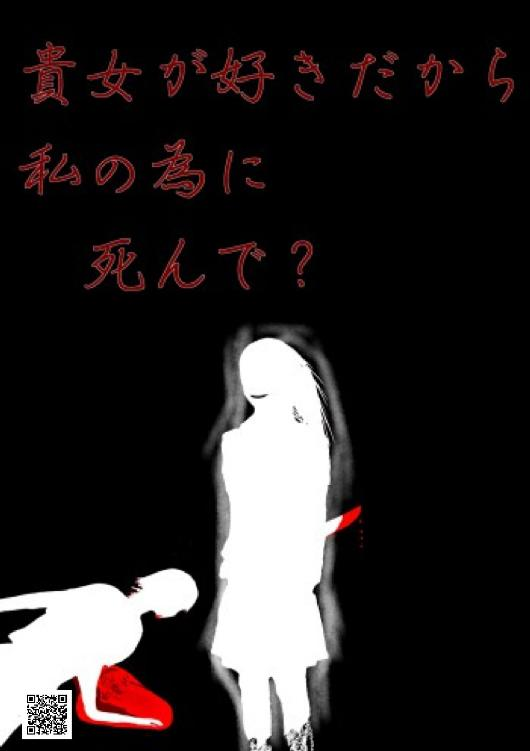

| 貴女が好きだから、私の為に死んで？ | |
| 虚像一心 | |
| 虚像一心出版 (2018) | |
とある高等学校にて――一つの悲しい事件が起きた。
それは、二年のＡクラスに在席していた『叶基乃』と言う少女が――誰もいない早朝の教室内にて、首から血を流して死んでいたからだ。
それを最初に目撃したただの男子生徒はすぐにそれを職員室まで言いに行き、その問題は公になった。
だが――自殺ではないと考える以上、犯人は学校の関係者であると判断した校長は、全ての関係者に学校に登校するように言った。
警察の事情聴取の関係もあり、三日経ったある日――叶基乃の親友であった九条綾香の番が回り、警察に様々なことを訊かれ、それが彼女の逆鱗に触れたことにより、彼女の事情聴取は一旦終わった。
事情聴取が終わった彼女は自分の教室に戻り、そこにいた――今は亡き親友がいたであろうＡクラスのクラスメイト、計三十八名と話すこともなく、自分の席に着き、そこで静かに涙を零した。
その隣にはいつも明るく話しかけて来てくれた親友の叶基乃の席があった――しかし。そこには何やら違和感を覚えた。
不思議に思った彼女は親友の席に座り、そこで回収されたはずの彼女の机の中に手を入れてみた――すると。そこから、人の髪の毛で出来たであろう、人型の人形が出てきたのだ。
それを机の上に置き、誰かの悪戯だと思った――クラスメイト達は、それを九条綾香の度が過ぎた悪戯だと決めつけた。
反論する九条綾香だが、三十八名がそう言っている以上、何を言っても無駄だと分かり、拳を強く握った為に爪が皮膚に食い込んで血が流れる――と。
流れ出た血が髪の毛で出来た人形に付着し――爆音とも呼べるような奇声が、その人形から発せられた。
耳を抑え、うずくまった彼ら三十九名――そこから、地獄の始まりだった。
何の前触れも無く、首を一文字に切り裂かれた生徒――それに怯えて逃げ出そうとした彼らの前に立ち塞がったのは、いつも出入りしている扉だった。
扉は固く閉ざされ、開かない――ならば、窓からの脱出だと。
だが――それすらも叶わず――彼らは、教室に閉じ込められ。
たった一人のだけが生き残る、と"誰か"にそう言われた......。
この本はBCCKSで発行された
『貴女が好きだから、私の為に死んで？』
著 者：虚像一心
発 行：虚像一心出版
のEPUB版です。
EPUB版は、BCCKSの紙面とレイアウトや表示が異なります。
BCCKS版の閲覧は、以下のURLをご覧ください。
http://bccks.jp/bcck/157257/info

Powered byBCCKS
───────────────────────
【プロローグ】
『幽霊』――というのを、アナタは信じるだろうか？
......信じないだろう。それは当然の反応だ。なにも間違ってはいない。
確かに世の中には心霊現象や、心霊写真などの数々の幽霊の情報があるが、それのどれもは信憑性に欠けるモノだ。信じるよりも笑い話になるものだ。
だがしかし――『幽霊』というのはただ"いない"と思っているだけで、"いない"という『決定的な証拠』がない。
つまり――『幽霊』がいない、というのを"証明できない"ということだ。
だが......少し前に、『人間に魂が存在するか否か』という実験が行われた。
その実験の結果――生前と死後の人間の体重を比べると、"二十一グラム"も減っていることがわかった。
それは『魂』――所謂『幽霊』というのは存在するのだという決定的な証拠に他ならない......が。
時が流れ、研究技術が発達したことにより、その説は――否定された。
それはただの「死後の急速な発汗による現象だ」と証明されたのだ。
それを聞いた誰もがその説明に納得したことだろう。
この現代社会――科学的に説明できないモノは信じられない、というのはもはや子供でもわかる常識だ。
しかし、本当に信じられないのは"証明できないモノ"だ。
だからこそ逆に訊きたい――『何故幽霊がいないと言い切れる？』と。
いないと証明できないのに、何故「いない」と言い切れるのか、と。
そも――『幽霊』と言うのは。
この世に未練を残したまま、この世を去った人の慣れの果ての存在だ。......いや、概念と言った方が良いかもしれない。だってアナタは信じていないのだろう？
だが『幽霊』というのは江戸時代から、果てはその遥か前の時代からまで伝えられている存在だ。
今のような、ＣＧ加工などをして、いかにも『幽霊』がその場にいるかのように思わせることができないような時代に、『幽霊』というのは人々に信じられていた。
ならば『幽霊』というのは、ただ"いないと証明できない"だけで。
我々ただの人間にはその姿が視えないだけで。
実際にはいるのではないだろうか？
そして『幽霊』になる原因となる"未練"――それは限りがない。
要するにピンからキリまで――無限大だということだ。
先ほど述べたように、『幽霊』はこの世に未練を残した人の慣れの果てだ。
しかしながらその"未練"は別段――自分のことじゃなくてもよいのだ。
大抵の場合、『幽霊』の未練は、
『あいつが憎い......ッ！』――とか。
『自分を殺したあいつに復讐してやる......！』――とか。
基本的にはそういうモノだろう？
基本的にはある特定の人間に対する未練だろう？
そういう未練が果たされないからこそ、『幽霊』はこの世に存在している。
だが別に『幽霊』になるのに、そんな自分勝手な未練でなくとも構わない。
要するに"他人のこと"でも構わないのだと。
例えるのならば――
――子供が心配だから、とか。
――恋人は元気にしているか、とか。
――両親に最後の別れを言いたい、とか。
そういう他人のことを"心配する"ような未練――"やり残した"未練でも構わないのだ。
......そのような未練を残したまま死んだ者は数多くいることだろう。
しかしながら、『幽霊』――彼らの存在は我々には視えない。我々ただの一般人は、彼らの未練の対象ではないからだ。
そして無論ながら、我々人間と『幽霊』は物理的な接触はできない。
いかに未練を残して死んだ『幽霊』が、心配して見に来た相手の身体に触れようと思ってもすり抜けてしまう――触れないのだ。
それは果たして......どれだけの絶望なのだろうか。
無機物には触れることは――所謂ポルターガイストを起こすことは可能なのに。
死者が生者と関わってはいけない、という誰が決めたのかわからない、この世界の理のせいで。
何故死んだ後でも絶望を味合わなければいけないのだ？
だがそれは――逆に考えれば簡単に解決する。
人間の想いは文字通り無限大だ。それは未練も同じこと。何処までも、何処までも果てしなく広がっている。
だからこそ、それが"狂って"しまえば。
一体どうなると思う？ ――こうなってしまうのだ。
『自分の為に死んでくれない？』――と。
触りたいのに――触れない、そんなのは嫌だ、ならば......と考えた結果。
相手も死ねば、自分と同じ存在になり、触れることが可能なのではないかということにたどり着いてしまう。
当然、それを即答で『うん！』と言うような愚か者はいない。
何故他人の為に死ななければいけないのだ？ 相手は自分の半身かなにかなのか？
だが相手側にとっては、自分の返答などどうでもいい――もう決めているのだから。
殺して、自分と同じ存在にする――と決めているのだから。
――このような回りくどい説明をしたのには、この話が"存在した"からだ。
............実際にあった話なのだ。
――だから。
――その内容を、アナタにご紹介しよう。
今からお話する内容は実際に起きた『大量殺人事件』の話だ。
それはどう考えても、どんなに賢い学者が考えても。
全くと言っても良いほど解明できず、解決できなかった事件。
――つまり、完全犯罪とも言えるその事件は。
存在が認められていない存在――『幽霊』が起こした。
――その実態である――ッ！
■■■
「――――ぁッ......！」
とある学校......まあ、ここではわかりやすく"高校"と言っておこう。
その高校で、"ある悲惨な事件"が起きてしまった。
その事件の現場は二年生の教室――二年Ａ組の教室だった。
きっかけは、朝早く登校してきた男子高校生が教室の中にあった『ソレ』その目で見てしまったことだ。
『ソレ』を見てしまったその男子生徒は絶叫、悲鳴を上げた。
――それはそうだろう、『ソレ』を見て平常でいられる方がおかしいのだから。
では、彼が見た『ソレ』は一体なんだったのか――？
彼が見たもの――『ソレ』は。
凝視するには耐えがたく、できることならば一生涯見たくないと思うほどの。
見るも無残に、変わり果ててしまった――自身のクラスメイトで。
その首は鋭利な刃物で一文字に斬られ、しかしその手には自身の血なのか、赤く染まった小さなナイフを片手に握りしめた。
――人気者であった、一人の女子生徒の......『死体』だった。
何故死体だとわかったのか――それはその女子生徒の足元にできた『赤い池』が証明していた。
赤い池――それは大量の血でできたもので。
そしてその池は血の凝固作用により既に固まりつつあった。
それはつまり――死んでから時間がある程度の経っていることを意味している。
だからこそ、彼はすぐにその女子生徒が"死んでいる"と感じた。
無論そんなものを見てしまえば自身で対応する術はない。
故に彼は真っ先に、全速力で出勤していた教職員達が集う職員室に行き、こう叫んだ。
『死体が......うちのクラスに死体がある――ッ‼』――と。
顔色が尋常ではない彼の叫びはその場にいた教職員達の思考を一時的に止めはしたものの。
だがすぐに我に返った教職員達は男子生徒が言う二年Ａ組の教室に向かった。
そしてそこには男子生徒が叫んだように、喉から血を流して動かなくなった女子生徒の死体が。
その死体を見た教職員の何名かはその場で嘔吐したが。
第一発見者であるその男子生徒だけは......怯えていた、震えていた。
何故ならば、先ほどその男子生徒が見たその死体は椅子に座って天井を見上げるような感じで喉から大量の出血をし、薄れゆく意識の中で絶望したような表情をしていたのにも関わらず。
今見た時には、彼女の顔は......ほんの薄っすらと、よく見なければ気づかないほどの。
――"笑み"を......浮かべていたのだから。
それに気づいたのは、第一発見者であるその男子生徒のみ――しかし。
疑うべき光景がまだ、ある。
それはその死体が最初に見た位置からほんの少しだけ動いていた、ということ。
いや、正確に言えば、彼女の首が教室の出入り口――今現在その現場を目撃している彼らが来るのを待っていたかのように、その首は......その顔がこちらを向いていたのだ。
無論その事実に気付いたのはその男子生徒ただ一人だけで。
しかし全力で怯えている彼を教職員達は冷静にさせる為に現場から遠く離れた別室に移動させた。
その間、他の教職員は警察に連絡――すぐさま警察が学校に到着した。
だが警察が来るまでの間。
別室に移動し、保険医に簡単なカウンセリングを受けている彼は怯え続けていた。
何故――死体の首がこちらを向いていたのか。
何故――薄っすらを"笑み"を浮かべていたのか。
その二つを頭の中で全力で考えていたからだ。
しかしわからない――『未知』という恐怖は彼の身体を襲い続け、まともに話ができない状態であった為に。
現場を一番最初に目撃した後に教職員達を案内していた間に語った事情と。
到着した警察の現場検証だけで事件の解明は進められた。
■■■
彼が怯える理由――なるほど、確かに「怖い」の一言だ。
見上げる――天井に向けられていた首が、彼が移動していた間に動き、更には笑みを浮かべた顔がこっちを見ていた。
これだけでも一つの怪談話ができあがるほどだ。あまりにも怖すぎる。
だが、まあ......冷静に考えれば、彼が移動していた間に第三者が"イタズラ"で彼女の首を動かした、という説明で終わるのだろう――が。
ハッキリと言おう――それは「不可能だ」と。
考えて、想像してみると良い――アナタはとある学校の生徒だ。
朝早く、自分以外の生徒がいない学校――けれども教室の扉は開いている。
自分以外にも早く登校する生徒がいたのか......と思いながら教室の扉を通ればそこには首を斬られて床に血だまりができているクラスメイトの死体がある。
――その時、アナタはどう思う？
――その時、アナタはどうする？
現実ではあり得ない光景が。
漫画やアニメでしか見たことがない光景が、そこにある。
ならば当然、間違いなくパニックになっていることだろう。
理解できない光景を目にした人間は必ずしもパニックになるのだから。
――これでなにが言いたいことはわかっただろうか？
"普通の人間"ならば、一目見ただけでパニックになり、なにもできない状態になる――それは必然だ。
では彼女の首が動いた原因――考えられる線は二つだ。
一つの線は――まあ、これは誰もが考えることだろう。
件の女子生徒の首を切り裂いて殺した犯人が再び二年Ａ組の教室に戻って来て。
第一発見者である男子生徒がその場から移動した瞬間を狙って女子生徒の死体に近づき。
戻ってきた第一発見者の精神がおかしくなるような状況を作り出すように、彼女の首を動かし、口元を動かした笑ったように見せた――ということだ。
..................
....................................馬鹿じゃないのか？
何故そんなわざわざ無謀とも言えるようなことをする必要がある？
いや、そもそも人の心と言うのは他者にはわからないものだが、それにしてもおかし過ぎるだろうに。
そも、罪を犯した者は異常者――所謂『愉快犯』という者を例外として除いて考えた場合。
その罪を――隠し続けるのだ。
だって罪を犯したことを正直に言う愚者などこの世界に存在するか？ ――否だ。
人間、誰しも自分にとって都合の良い方向に持っていきたいものだ。誰一人として例外はない。
だからこそ、この線はあり得ないのだ。
だってそれは――自ら『自分が犯人で～す！ 自分がやりました～ッ！』と意気揚々と言っているようなものなのだから。
そんなことをした暁には、その者の人生は破滅へと向かってしまうのだから。
報道では名前は隠されるだろうが、しかし――今の社会では即座にその犯人が特定される。
それはつまり――文字通り、その犯人の人生が破滅することを意味しており。
故にこの線はあり得ないと言い切れる。
ではもう一つの線だ――だが......まあこれは。
常識的に考えれば考えにくいものではあるが、しかし絶対に否定できない線だ。
もう一つの線――それは。
男子生徒によって発見された時、その女子生徒はまだ"生きていた"と言うことだ。
首を何者かに斬られたことにより、薄れゆく意識の中で、彼女はこう思っていただろう。
『誰か......助けて......』――と。
そう思い続けて、だが奇跡的に自分のことを見つけた男子生徒に気付いたその女子生徒は。
『助けに......来てくれたんだ......』――と、心から思ったことだろう。
だが首からの出血は酷く、既に床には血の池ができていることから、彼女の命は風前の灯火――彼が戻って来るまで生きていられるわけはなかった。
しかしそれでも、一筋の希望を、光を見た彼女は最後の力を振り絞って教室の出入り口の方に首を向けて、"笑み"を浮かべた。
『やっと......助かった......』――そう思いながら。
彼女は......その尊き命を終えた。
――この二つの線、どちらがより可能性が高いか、と問われれば。
十人中九人は二つ目の線を選ぶだろう。残りの一人はただの馬鹿だ、思考を放棄した愚者だ。
話をまとめると、件の女子生徒は誰よりも先に登校した為に、教室の中で自分の席に座って予習かなにかでもしようと思った。
だがその教室の中には自分以外の"誰か"がいて、それに気づかなかった女子生徒は抵抗することもできず、そのまま首を斬られた。
だが――即死はできなかった。
喉を斬られても即死はしない――精々自分の身体が斬られたことによる『ショック死』か、もしくは大量の出血による『出血死』で死ぬかのどちらかだ。
別段、重要な組織である『脳』や『心臓』を破壊されたわけではないのだから。
けれども彼女は"自身の首を斬られた"という事実を認識できず、しかし多量の出血故に身体は言うことを聞かない。
このままでは死んでしまう――でもこのまま死ぬのは嫌だ。
だから――なんとしてでも助かりたい。誰か助けてほしい。
そう思った矢先に、男子生徒の登場だ。
それを認識した女子生徒は『助かった』と思い込み、動かない身体を動かして。
それにより、首の向きが変わり、顔の表情は笑みに変わった――
――ということだ。
実にわかりやすい、探偵職に就いていない者でも容易に想像できる。
しかしながら......推理は数学のように簡単にはいかない。
こう考えるのだとしたら、今度はとある疑問が浮かび上がってしまうのだ。
その疑問――とは。
『一体誰が彼女を殺したのか？』――と言うモノだ。
――現代社会において、学校という多数の人間がいる空間内での『殺傷事件』と言うのは極めて珍しいものだ。
まあ、最近では外国等で銃乱射事件などがあるが、ここは日本――銃などという殺戮兵器は簡単には手に入らない。
殺人を犯すのならば、間違いなく鈍器か刃物、もしくは生命維持を止めることぐらいだ。
――話を戻すと、何故極めて難しいのかと疑問に思うだろう。
その理由――普通に考えて、凶器となる刃物を持って平然を装う生徒が存在するか？
凶器を持って『今日こそ、殺してやる......！』と思っている人間の表情がまともだと思うか？
だがそれでも、基本的に人間は赤の他人には興味を示さない――だとしたら気づかれなかったのだろう。
バレることなく、憎い相手を殺したその人間――さぞ気分が良いことだろう。
――だが。
学校内で殺人、もしくは殺傷を犯せば間違いなくその事件はあっと言う間に学校中に広まる。
そして『学校』という親が安心して子供を預ける施設内でそのような事件が起きれば、警察は全力で捜査を開始する。
そして必ずと言っても良いほど、その犯人は見つかるのだ。
証拠を......完全に隠すことができないから。
目撃者が......いるから。
例え【少年法】という法律があったとしても、今の時代、このような事件を犯せば自分はおろか、自分の家族さえも絶望と言う名の地獄に堕とされる。
小中学校を卒業し、義務教育を終えた学生であるのならば。
そんなことはしたくない――そう考えるからこそ、学校内での直接的な『殺人』は起こらない。
しかし忘れることなかれ、その女子生徒は実際に喉を斬られて死んでいたのだ。
そしてその舞台となった場所は"高校"だ、高等学校だ。
中学校を卒業し、受験戦争を乗り越えた者だけが通うことを許され、更なる知恵を身につけた者達が集う場所だ。
そんな人間が――高校生にもなった人間が、学校内で殺人を犯す？ ――それもあり得ない。
大抵、学生内での殺人行為というのは、人気が無い場所で行われる。
それは、憎しみを抱いた人物は"いつも通りの様子"を装いながら、学校内で大人しくし。
授業が終わり、放課後になって家に帰宅するべく、下校するターゲットの後を追い。
周りに人がいないことを確認したその時こそ――その憎しみは頂点に達する。
そこでようやく『学生の殺人』が行われる、成立するのだ。
だからこそ学校内での殺人というのは考えにくい。
先ほど述べた話から導き出した二つの線――その二つの線を消去法で消し、残った一つの線が有力視された。
だがその線もよくよく考えればあり得ないことだから――消えた。
――では。
ここまで読んで疑問に思ったそこのアナタ、その疑問を当ててみせよう。
『おかしくはないか？ そもそも"誰かがその女子生徒を殺した"という証拠がないじゃないか』......と。
そう――まさしくその通りだ。
事件と言うのは、殺人事件と言うのは。
決定的な証拠が無ければ容疑者はいたとしても、犯人としては断定できないのだ。
今の時代であれば、ＤＮＡ鑑定や指紋鑑定などと言った技術はあるだろうが。
その女子生徒が持っていた刃物には『女子生徒の指紋』と、『女子生徒の血液』しかなかった。
それはつまり、誰もその刃物を使って女子生徒を殺したという証拠がないということ。
犯罪と言うのは決定的な証拠があってこそ成立するもの――冤罪など、あってはならない。
そもそも証拠もないのに『コイツが犯人です』と言われる身にもなってみろと。
あまりにも可哀そうじゃないか。
だとしたら、彼女が死んだのは"自殺"と言うことになる――が。
ならば彼女は一体、なにを思って。
自身の首を――一文字に切り裂くその痛みに耐えながらも、味わいながらも、苦しみながらも。
自ら――その命を絶ったのだ......？
そして、その男子生徒だけが気づいた"笑み"の意味とは一体......なんなのだ？
■■■
――今までアナタに話したことはその学校の汚点でありながらも、だが実際に起きてしまった悲劇の事件。
実際に起きてしまった――だから犯人を捜すことになった......が。
その犯人が一体誰なのか、それがわからないのがその"当時"の状況だった。
人気者を殺す理由・動機が一体なんなのか――それがわからないからで。
いや、彼女が自殺するその理由がなんなのか――それがわからないからこそ。
そもそも常識的に、物理的に――この事件を考えてしまったからこそ。
"彼ら"は気づくことができなかった。
なにも人間を殺すことができるのは"生き物"だけではない、ということ――つまり。
"人間ではない存在"という可能性が否定できない。
だとしたら......彼女はもしかして――と。
まさに奇想天外、奇々怪々、意味不明の言葉が次々と述べられるこの事件は。
その学校を、一瞬にして恐怖のどん底に突き落とし、取り返しのつかない事態に発展してしまった。
――"歪んだ友情"にまつわる話だ。
そして――
存在しないはずモノに、一クラスの生徒全員が皆殺しにされた、そんな『事件』を。
......アナタは、信じるだろうか？
【第一章――舞台公演】
学校内で学生の死体が見つかり、それが公になってから早三日目。
だがその三日間の間で行われたことと言えば――傍から見れば「馬鹿か？」と疑いたくなるようなもの。
それは全校生徒一人ひとりを対象にした――『事情聴取』なのだ。
この高校――一学年に三六〇人という人数に、それを"三つ"足した数――合計一〇八〇人......いや、一人が死んでしまったから今では一〇七九人か。
それほど膨大な数の人間一人ひとりに事情聴取していては、ただの時間の無駄でしかない。
もっと他にするべきことがあるだろう――と言いたくなるところだが。
実際のところ、犯行現場を目撃した者が誰一人としていないのだから、それも致し方なし――警察の方々もため息を吐きながらやっているのだ。
しかし、それはあまりにも遠回りし過ぎている。遠回りし過ぎて、コースアウトしているようなものだ。
何故ならば――そんなものは、たった一つの嘘をついただけで。
簡単にその真実が、誰にも知られることも無く闇の中に葬られるのだから。
だから――「馬鹿か？」と言われても当然だ、必然だ。当たり前だ。
国家公務員という難関試験に合格したエリートが、まさかそんな阿呆なことをするのだから。
今だったら間違いなくＳＮＳや報道番組で大炎上していることだろう。
だが情報が限りなく零に近い中で、警察は着実に事情聴取を進めていく。
そして今現在――一人の女子生徒の番が回って来た。
■■■
学校内の教室――そこはただの空き教室に過ぎない。
その場所の中心に一つの机と二つの椅子がある。
二つの椅子の内、一つの椅子に座るのはスーツ姿の若干白髪が目立つ男性。
そして残りの一つには、この学校の生徒である『九条綾香』という女子生徒が座っている。
この取り調べは万が一に備えて、この教室の二つの出入り口を二人の警官が封鎖している。
故に逃げることはできない――いや、そもそも逃げる気など、彼女には毛頭なかった。
それは自身の身の潔白を証明する為――
九条綾香と言う名の自分が、死んだ女子生徒の"親友"であったから。
殺す動機は無かった、と主張する為だ。
「――確かに、君の言う通りなら"イジメられていた"のを助けられたのがきっかけで友達になった。だから君には彼女を殺してもメリットはない、と」
しかしそう主張する為に説明をしている中でも。
彼女の精神はもはや崩壊寸前に近づいている。
大切な親友が死んだ――自殺、他殺などそんなのはどうでもいい。重要なのはその"事実"だ。
その事実はまだ十分に成長しきっていない彼女の精神を蝕んでいる。まるで......絡みつく蛇のように。
だが警察にとっては、そのようなことなどどうでもいいかの如く、綾香から様々な点――所謂『矛盾する点』を訊きだそうとしている。
それもまた、彼女の心を痛めつけているのだ。
「けれど君の友達の『叶木乃』さんは前日までいつも通りに君とＳＮＳで会話をしていたんだよね？ その時に君はなにか彼女に嫌なことでも言ったんじゃないの？」
「そんなわけがありません！ 私のスマホの中を見てみればそんなのはわかります！」
まるで綾香が『犯人に違いない』と言っているようなその発言に。
我慢の限界に達していた綾香は自身のスマートフォンをポケットから取り出し、その画面に木乃との会話を映し出した。
――そこには確かに木乃との会話の履歴が残っていた。
椅子に座っていた警察の一人がその履歴を辿るが、何処もおかしな点はない。ただの女子高生同士の普通の会話だ、何気ない会話だ。
それを確認した彼は綾香のスマートフォンを返す――が。
その表情に、『違ったか......』と思わせるようなその表情に、綾香の怒りは頂点を超えた。
「これを見てもまだ私が犯人だって言うんですか⁉ 警察という組織はどれだけ人の傷を抉れば気が済むんですかッ！」
綾香の悲痛の叫びが教室中に響き――その声はその空間にいた三人の警察官の心に響いた。
――無論、彼らにそんなつもりは毛頭ない。むしろ"嫌々"やっているのだ。
だが職務上、訊いておかなければいけない......それが仕事なのだからと。
自身にそう言い聞かせて、彼らは平常心を保つ。
「私とキノは姉妹同然だったのに......学校では"二人だけで"楽しく話して、学校が終われば毎日のようにＳＮＳで会話をしていたのに......」
"二人だけで"楽しく会話をしていた――それはまだ綾香の"イジメ"が続いていたからだ。
九条綾香の雰囲気はぱっと見大人しそうな女子だ。そこら辺にいる、何処にでもいる普通の女子高生だ。
ただ......その趣味が、他人には、クラスメイトには理解されなかっただけで。
その趣味は幽霊や心霊と言った『オカルト関係』のものだ。だが陰謀論には興味はない。彼女が興味あるのは『死後の世界』と言った、存在があやふやなモノに限る。
幼い頃の彼女はそれを見た時――ただ、そういうモノが存在したらいいなぁ、と思っただけ。
それが月日を経て趣味に変わっただけのこと――しかし。
それは他人には理解されなかった。
そしてその趣味はあっけなくクラスメイトの一人である女子にあっさりとばらされてしまった。
机からカバンを落とし、その衝撃で中身が零れた――その中に、いつも持ち歩いているオカルト関係の本が現れた。
綾香はすぐにそれを拾おうとしたが、不運なことに、たまたま近くにいた女子生徒にそれが見つかってしまい、クラス中にばらされた。
『今時オカルトなんて信じているの～？ ダッサ～（笑）』――と。
それが......九条綾香がイジメを受ける原因となった。
イジメという苦痛が続く日々――だがついに一人の女子がそれを訴えた。
その女子こそが、綾香の親友である叶木乃だ。
明るく、誰にでも優しい彼女の言葉には説得力があり、彼女は綾香に『私は味方だから、安心してね』と笑ってくれた。
『それにね、私もこういうの、好きなんだ』――と付け加えて。
同じ趣味を持ったことで、二人はごく自然に友達になり......親友になった。
だが木乃の目が届かないところでも......綾香のイジメは続いていた。
――自身をほんの一時でも助けてくれた親友。
――同じ趣味を持って友達から親友になってくれた彼女。
それはもはや、自身の半身とも言ってもおかしくはなかった。
その彼女が突然死んだ――その事実は。
親友であった綾香には、常人には到底理解できないほどの想像を絶する悲しみとなった。
それ故に、彼女は今も悲しみの涙を流している。
何故――キノが死んでしまったのか......と。
それだけで彼女が犯人ではない、というのは明白であろう。
だが警察というのはどんなに小さなことでも、どんなに小さな穴でもまるでネズミのように突き進む職だ。
だからこそ、冷徹な警察である彼はこう言い放った。
「恨みってのはね、自分では気づかないものなんだよ。もし彼女が『自殺』でないとしたら、それはどこかで彼女を恨んでいる人がやったことだ。それに......心当たりはないか？」
「......なんなんですか、みんな寄ってたかって。まるでキノが周りから恨みを買っているような言い方をして......」
「いや、そういうわけじゃあ――」
「そんな証拠もないのに、よくそんなことを平気で言えますね！ それとも、証拠でもあるんですか、『キノが誰かから恨まれている』という証拠が！ あるのなら教えてくださいよ！」
事情聴取の為に言った何気ない一言――だがそれは。
悲しみの海に沈んでいる綾香の逆鱗に触れてしまった。
すぐにそんなつもりで言った訳じゃない、と弁解する彼だが。
一度火が点いた怒りは止まらない。
「みんな、何も知らないくせに......なんにも知らないくせに......ッ」
「――落ち着きなさい、一度冷静になって。確かに酷いことを言ったと思っている。だけどそう考えないと、彼女は『自ら死を選んだ』――つまり自殺をしたとしか考えられないんだ。そこはわかっているね？」
「わかってますよ、そんなことぐらい！ だから言っているんですよ、キノは自殺なんかしないし、誰かに恨まれるようなことなんかしていない、買ったことなんか一度もないって！」
今すぐにでも目の前にいる警察官の顔面をぶん殴ってやりたい気持ちでいっぱいの彼女。
しかしそんなことをすれば、【公務執行妨害】という罪を自分が犯してしまう。
それではまさに――『事実を言われて認めたくなかったから殴った、だから九条綾香が犯人だ』と自ら証言しているようなもの。
そう理解しているからこそ、彼女は己の拳から血がにじむまで強く握りしめて耐えた。
だがその我慢は、怒りを抑える為だけではない――受け入れたくないのだ。
警察の言うことは理解できている――そう考えなければ木乃が自殺してしまうということになってしまうということを。
そして何も進まない捜査――このまま行けば間違いなく『自殺』と決めつけられてしまう。
......わかっている、そんなことはわかっている。
だが心の底から、頭の中で全力で否定してしまわなければ。
親友である木乃の死を......受け入れてしまいそうだったのだ。
そしてこれもわかっている――自分が言っていることは駄々をこねる子供の言い訳だということぐらい。
自殺でなければ誰かに殺された――それはわかる。そうでなければおかしいからだ。
誰かに殺されたのならば、それは恨まれている証拠――それもわかる。彼女は人気者だったからだ。だから何処かでそれを妬んでいた者もいただろう。
しかしそのような証拠も事実もない中で――あと少しで結論づけられる『自殺』は？
――あり得ない、彼女が自殺なんかするものか。
誰かに恨まれているのならば素直に謝るような性格で。
ストレスとは無縁だと思えるようなその明るさ――だからあり得ない。
周りから人気者だった彼女が自殺なんかするものか――ッ！
無言のその叫びに、目の前にいた警察はその場にいた二人の警察官に目を向ける。
それは、これ以上の聴き取りは彼女の怒りを刺激するだけ――今訊いても返って来る言葉は同じ。だからこれ以上は無意味だと。
そう判断した彼は、綾香に。
「......親友を失ったことはとても辛いだろうが、それは事実なんだ。自殺ではない、というのもわかった。だからこそ、我々警察は全力で捜査をしなければいけない。一体誰が彼女を殺したのか――それを突き止めるのが使命なんだ」
「..................」
「だけど君が怒り狂っていては死んだ彼女はどう思う？ 怒りに身を任せて、自分を殺した犯人を捜しにくくしている君を見て、彼女はどう思う？ 彼女の為を想うのなら――」
――わかっている、そんなことはわかっているんだよッ！
キノの死を嘆くことよりも、キノの死を悲しむことよりも。
キノを殺した犯人を見つけることが一番大事――そんなことはわかっているのッ！
頭に血が上り過ぎて自分の視界が狭まり、何も考えられなくなった彼女。
親友の死を、ただただ受け止めきれないままでいる彼女。
そんな綾香は目の前にいる警察官の言葉を最後まで聞き終えることなく、席から立ち上がり、教室の出入り口である扉に向かう。
本来ならば止めるべき......なのだろうが、今の彼女の精神状態を考えると止めることはできない。
と、アイコンタクトで無言の会話をした警察官達は教室から出て行く彼女を止めなかった。
そして彼女は最後に『バァン』......と。
扉を強くも弱くもない力で閉じて、教室の中から姿を消した。
――――......
「――はぁ......」
「お疲れ様です、葛城さん」
ため息を吐いて疲れを見せる葛城という男に、扉の近くに立っていた一人の新人が声をかけた。
「全く......なんで毎回こんなことを俺がしなくちゃならんのか......神経がおかしくなりそうだ」
「でも葛城さんは今まで何回も事情聴取をして数々の『矛盾点』を見つけてきたプロじゃないですか。......まだ残っている生徒は結構な数ですが、その中にきっと――」
「違う、そうじゃないんだ」
「「え？」」
葛城以外の警察官二人が同時の疑問の声を上げた。
葛城が疲れているのは膨大な数の中から矛盾する点を見つけること――しかしそれは。
砂漠の中で一粒の砂を見つけるに等しい行為だ。並の精神力ではとてもではないが持たない。
しかしそんなことを言って『こんな仕事は嫌です、もう無理です』と"上"に言った暁にはほぼ確実に出世の道は閉ざされる。
更に言えば、部署内での評判、仕事面の評価に関わって来る。
故に途中で降りることは許されない――と。
二人の若い警察官はその果てしない苦労に嫌になっているのかと思っていたのだが。
「お前ら、普通に考えてみろよ。あの子は死んだ生徒の親友だった子だぞ。そんな彼女に――」
葛城は一呼吸を置いて、
「『抵抗した痕跡さえない』って言えるわけないだろうが」
外部には決して教えてはいけないそれを、葛城は言う。
それはつまり――
「叶木乃という女子生徒の死因は『自殺』だって言える神経を、俺は持ってねぇんだよ......」
既に死因は結論づけられていたのだ。
では何故死因が決まっているのにこんな面倒なことをするのか――それは単純に。
"何が原因で自殺することになったのか"を調べる為であり。
こうして全校生徒に聴き取りをしているのだ。
「......次の子を、呼びますか？」
「あと五分ほどくれ。流石に疲れた」
凝った肩をほぐすような仕草をする葛城に。
新人の警察官二人は......何も言えなかった。
■■■
聴き取りと言う名目の事情聴取を終えた九条綾香は自分がいる教室に戻るまでの間、眼に溜まった涙を制服の袖で拭う。
親友が死んだ――それだけで彼女には凄まじいほどの精神的苦痛を味わっているのに。
何故、彼女は学校に来なければいけなかったのか。
そもそも"学校内で死体が見つかった"という大問題を抱えていながらも、何故休校にしないのか。
――などなど、この状況に異を唱える意見は多数あった。
だが休校にしない理由、全生徒が登校しなければいけない理由を、学校の中では一番の権力を握っている校長がこう言ったからだ。
『誰が犯人かわからないこの状況で仮に休校にしてしまえば、その時点で逃げられてしまうからだ』――と。
それはつまり、校長にとっては自身の学校の生徒達全員が容疑者であると認識しているということ。
それはつまり、登校しない生徒がいれば、その生徒が犯人であり、証拠を隠滅しようとする、と言っているということだ――と。
人の気持ちを考えない無情な校長は遠回しにそう告げたのだ。
それを全校生徒に伝えた時、彼らは一体どう思ったのだろうか。
不満、怒り――様々な感情を抱いているだろうが。
それでも、登校しなければ自分が疑われてしまう、と。
疑われたくない為に、重い気分で全生徒が登校しているのだ。
無論、その想いは彼女......綾香だけではない。
むしろ――それ以上に............
――――......
『ガラリ』――と、教室の扉を開けて自分の教室に戻ってきた綾香。
その刹那、彼女には何十という視線が向けられた。
だが彼女はそれを気にもせず、自分の席に座る――が。
ポツリ、と......彼女に聞こえないほどの小さな声で、一人の生徒が。
「絶対に、アイツが殺ったんだろ......」――と。
そう――彼女が教室に入った瞬間に向けられた視線はその教室の中にいた九条綾香を除く、『計三十八名』の視線と、心配そうに見つめる担任の視線。
その三十八の視線は"彼女"が『叶木乃を殺した犯人』だと決めつけているものだ。
人気者で、クラス内での評判も高い彼女。
そしてイジメを受けていた綾香を助ける優しい心を持った彼女。
そんな彼女が死んだ――殺された、となれば。
その犯人はイジメを受けていた九条綾香しかいないのだと、彼らは勝手にそう決めつけている。
良くあるだろう、善意でイジメから助けたはずなのに、逆に恨まれるという展開が。
それは漫画やアニメの中での設定だけではない――現実でもあり得る展開だ。
人気者である『叶木乃』という強力な味方を付けた綾香――しかし。
それはいわば、虎の威を借る狐、という暗黙の意味を持つ。
故に――彼女のイジメは悪化した。
『調子に乗るな』――と。
そうして悪化したイジメはより一層綾香の身体を傷つけ続け......。
そして叶木乃という女子生徒が死んだ――何故？ 自殺？ それとも他殺？
......彼ら、九条綾香と同じクラスの生徒達は全員同じことを思っていた。
何故彼女が『死ななければいけなかったのか』――それは。
『助けられたことでイジメが悪化した。それは叶木乃が自分を助けたせいだ』と、九条綾香が思ったから。
だから叶木乃を憎んだ九条綾香は彼女を殺した......と。
そのような推測――所謂『逆恨み』のようなもので綾香を除く二年Ａ組の生徒達は九条綾香を犯人だと思い込んでいる。
いや、もはやそれは決めつけているに等しかった。
――だから。
ある者は未だに彼女の死を受け入れられず。
ある者は彼女を殺した犯人『九条綾香』に対してどうやってこの怒りをぶつけてやろうかと、怒りを抑え込み。
ある者は、たかが一人死んだ程度で大袈裟な......と。
様々な想いがこの狭いながらも広い教室の中でうごめいていた。
それに、第一発見者である男子生徒は既に精神面では回復したのか、この教室の中にいて、彼女の死を嘆いている最中だ。
無論、そんな視線を向けられていた綾香には、その視線に込められていた意味がわかっていた。
だから彼女は自分の席に座り、その泣き顔を他者に見られたくないと、袖で顔を隠し続ける。
もしその泣き顔を彼らに見られれば、その瞬間、彼女に向かって彼らは『嘘泣きをするな、この人殺しがッ！』と言うだろう。
それを理解している綾香は――だが涙が止まらなかった。
何故ならば、綾香がいる席は教室の一番奥の席だ。一番出入り口から遠い席だ。
右側には窓が――そこからはグラウンドが見える。
そしてその左隣の席こそが......親友の『叶木乃』が座っていた席なのだ。
いつもなら、本来ならばそこにいるはずの彼女がいない。
毎朝嫌な気持ちで登校しても、笑顔で「おはよう、アヤちゃん」と言って挨拶してくれる親友。
三十八名からイジメを受けていても、彼女だけはイジメをせず、気軽に、優しく話しかけてくれた――だが。
その親友はこの世から居なくなった――死んでしまった。
もう二度と、誰もその席に座ることはない......しかし。
何故だろうか......気のせいか、彼女の面影が残っている。
まるで、今も彼女がそこに座っていて、いつも通りに挨拶をするような――
――謎の違和感を発していた。
もちろんそんなことはあるはずがない――彼女は死んでしまったのだ。それは事実だ、現実だ、変えることができない過去だ。
死者は生き返らない――そんなことは小さな子供でも知っている常識の中の常識だ。
だからこそ、その隣の席に座り、今も泣き続けている綾香には。
この違和感が......気になりだした。
――そう、この違和感は綾香が学校に登校した時には無かったモノだ。
あったのは机の上にポツンと置かれた、小瓶に入った花一つだけ。
亡くなった生徒を弔うその花は今もある――だが。
そこにある違和感が一体何なのか――彼女はそれを確かめるべく。
涙を袖で思いっきり拭い、泣いてなかったかのように隠して、親友の席に座った。
もしかしたら――と思いながら。
――だが。
..................
....................................嗚呼。
やっぱり......これは............
そうだ――そんなことをしても死者が生き返る、などと言った奇跡は起きない。
奇跡や魔法などと言ったファンタジーの中で使える設定は、この【現実】というリアルなゲームの中では絶対に起きない。
それどころか、バグすらも起きない――完全にランダム、乱数任せの世界。
それが現実だ――それがこの世界だ。
そして世界というのはいつの時代でも人の願いや心を容易く打ち砕き、破壊する。
無情に、残酷に、無慈悲に......。
その無慈悲で残酷な運命の攻撃により、彼女の心の中にあった悲しみは更に大きくなった。
そして彼女の涙腺が刺激され、またもや涙が零れ始めた。
これで、もう......自分はどれだけ涙を流したのだろうか――そう思いながら。
■■■
九条綾香が『叶木乃が死んだ』と伝えられたのは二日前だった。
それはいつも通りに木乃と一緒に楽しくお喋りしようと思っていた......朝だった。
だが、いざ学校に行けば、周りには救急車やパトカーが数台も。
そして正面入り口には多数の人だかりが。
一体何事かと思った綾香は人だかりの後ろに立ち、聞き耳を立てた。
すると聞こえてきたのは――『二年の女子が死んだんだって』という言葉と。
その女子の名前が『叶木乃』であったことだ。
このような人だかりがあり、パトカーや救急車が来ているのならば、それは嘘やデタラメではない――確実に真実だ。
だとしたら叶木乃は本当に......"死んだ"。
その事実を知った時――綾香は。
......泣けなかった。泣くことができなかった。
そんなことがあるわけない、あるはずがない、と。
これはきっと夢なんだ、と。悪い夢なんだ、と。
そう自分自身に言い聞かせ、その現実から逃げ続けていただけなのだ。
だが彼女の亡骸を病院で見た時――彼女はこう叫んだ。
『キノがいない世界なんて、壊れてしまえ......ッ』――と。
『彼女がいない世界なんて意味なんかないッ！』――と。
だが実際には、彼女はそんなことを"叫んではいなかった"。ただ心の中で叫んでいただけだったのだ。
そのことに気付いた綾香は大粒の涙を零し、泣きわめき。
二度と話すことも、笑い合うことも、もうなにも一緒にすることができない彼女の亡骸に。
もう二度とこの世界に帰って来ない親友の亡骸の前に、その名前を呼び続け――そして。
――現在に、至る。
■■■
「............キノぉ......」
小さく友人の名前を呟く綾香――しかしその声は『自習』という名目で教室内で待機しているクラスメイト達には聞こえていない。
一応生徒達を監視する役目である担任はその場にはいるものの、だが好き勝手にクラスメイト同士で会話をする生徒達に注意することはない。
教室の監督者である担任に与えられた役目は『生徒達が勝手に何処かに行かないように』というものだ。つまりは監視――それを果たしている担任はそれ以上のことをする気はない。
だがこのような状況、雰囲気の中で"騒ぐ者"がいれば、注意ぐらいはするだろう。
本来自由であるべきこの教室――いつもならば生徒同士の騒ぐ声が聞こえ。
叶木乃と教師がいない状況であれば、綾香をイジメるはずなのだが。
"悲しみ"という大きな闇を抱かされたこの教室で騒ぐ者は――誰一人いない。
仮にそんなことをしてみれば、それこそ他の生徒達からの言葉と言う名の集中攻撃を受けるだろう。
『なんでそんなに呑気にできるんだよ！ お前には人の心がないのかッ⁉』――と。
クラスの人気者であった叶木乃が死んだのだ、そう言われるのは当然。
それ故に、いつもは騒ぐことしか頭にない男子達や、ちょっとした話題で「キャーキャー」言う女子達も。
この教室の空気を読んでいるからか......騒がない。
しかしその空気がより一層傷ついた彼女――綾香の心に更なる痛みを与えた。
それは周りも認めているからだ――叶木乃は死んだのだ、と。
――キノは死んだ......もう戻ってこない。
もう二度と......会うことも、話すことも......できないんだ......。
もうあふれ出る涙で視界が霞んで前が見えないであろうその状態で、彼女は一体なにを思ったのか。
――不意に。
――無意識に。
自身が座っていた席――叶木乃の机の中に手を伸ばしていた。
無論そこにはなにもない。もうこの世に存在しない生徒の私物など、当然遺族が全て回収しているはずだからだ――だが。
"......？ なんだろう、なにか変な感触が......"
手を伸ばしてみると、机の奥になにかが当たった感触があった。
もしかしたら家族が回収し忘れた物かもしれない――と。
そう思った彼女は迷わずその中にあった"ソレ"を掴み、"ソレ"を確認するべく、机の上に出してみた――のだが。
それは......できることであれば、見たくもない。絶対に見たくないモノ。
いや、そもそも存在することさえおかしいとしか思えないモノ――
「――――え......？」
あまりにも、衝撃的過ぎる......モノであった。
「なに......これ............？」
自分の手で掴み、それを自分で木乃の机の上に置いた綾香は信じられない、といった表情を浮かべ、言葉が喉に詰まった。
今は亡き親友の机の中から出てきたモノ――それは。
『人の髪の毛』で......作られたであろう。
人の形をした、主に誰かを呪う為に用いる――
――『藁人形』だったのだから。
いや、それは藁人形と言うにはおかしいかもしれない。
何故ならその人形は、ほんの一つさえも『藁』という素材が使われていない。
一から百まで全て人の髪の毛によって作られた人形――『髪人形』だったのだから。
だがその感触――人の髪の毛に触った感触であれば、当然わかるはずだ。獣の毛や藁などと言った感触とは一切違うのだから。
しかし、綾香にはその感触が一切感じられなかった。
だから"忘れ物"だと思った彼女はソレをこの眼で確認すべく、机の上に置いた――固形物であったからで。
だが本来一生に一度でも見ることはないであろう、その髪人形を見た綾香に。
――得体の知れない恐怖が襲ってきた。
ソレを見た彼女は言葉に詰まる――言葉という概念が彼女の中から消え失せたかのように。
だから彼女はなにも言葉にできず、そのまま......固まるしかなかった。
その際、教室の扉が開かれ、二年Ａ組の教室にいる人間全てがそこに視線を向けると。
そこには教頭の姿が。
なにやら担任に話すべきことがあるようだが、教室内では話しにくいことなのか、廊下に出てきてほしいと手招きをしている。
立場上、断ることができない担任は"綾香の異常"に気付くこともなく、そのまま教室から廊下に出て行き、扉を閉めた。
であれば――次はどうなるか、わかるだろう。
担任という第三者がいなくなったこの場所で。
叶木乃という綾香を護る盾が無くなったこの状況で。
さあ、白状させてやろう――と意気込む彼ら、だが。
そこは学校の教室の中、綾香を除く三十八名が在席しているその教室の中で、叶木乃の机の上に置かれた"異物"に気付かない者は当然いない。
それにいち早く察した――見つけた生徒が、
「きゃあああぁあぁああああああぁあ――――ッ！」
と、甲高い声を上げた。
その声を上げたのは叶木乃の右側に座っていた女子生徒だった。
悲鳴と思えるその声は当然ながら教室中に響き。
その声が一体なんなのか――それを確かめようと視線をその女子生徒に向けた全員は、震えながら指さされた方向を見た。
そして彼らは絶句した――そこにあり得ないモノ『髪の毛でできた人形』があったからだ。
当然教室内で悲鳴が上がれば廊下にいるであろう担任と教頭が教室内に入って来るはずなのに......何故か入って来ない。
それに突然そんなあり得ないモノを目にしたら悲鳴のパレードが始まるはずの展開に、しかし。
だが彼らは悲鳴を上げる前に、とある考えが頭の中に浮かんだ。
『何故そんなモノがそこにあるのか？』――という考えだ。
それが理解できなかったからこそ、彼らは悲鳴を上げることを忘れていた。驚くことを忘れていた。
あまりにも不気味過ぎるその人形――それが今は亡き叶木乃の机の上に置かれ。
更にはその親友で、自分達がイジメの標的としていた綾香がソレを持っていれば、誰だって恐怖で身体が固まり、動かなくなってしまう。
だがその中で、一番悲鳴を上げたかったのは他の誰でもない。
九条綾香――ソレを見つけた本人だった。
確かに彼女は恐怖で怯えていた、悲鳴を上げたかった。
だがその恐怖は"二種類"あった。
一つはあり得ないモノを目にした恐怖。
そしてもう一つは――それが、"自分の髪の毛"であったからだ。
人間の髪の毛など、所詮はどれも同じ――と思うだろうが。
自分の髪の毛というのは一番触り慣れた感触だ。一番長く触れているのだから。
しかしそれだけで判断するのは難しいだろう――が。
その髪が"自分の髪"だと判断したのは、その髪人形から発せられる匂いは、綾香が使っているシャンプーの匂いに他ならなかったからだ。
そのシャンプーは綾香が好んで使うシャンプーだ。他の女子はそんなものよりも、もっと上質なものを使う。男子はシャンプーの匂いにこだわらない。
だからこそ、綾香はそれを自分の髪の毛で作られた人形であると、判断した。
だが――何故だ？
何故親友の机の中に、自分の髪の毛で作られた人形が入っていたのだ？
もし仮に――例えばの話。
同じオカルト趣味を持つ木乃がなにかの為に使おうとしていた物が"偶然"綾香の髪の毛でできただけの話なのか。
その理由としては――以前、綾香はイジメを受けている時に木乃の目が届かない女子トイレの中――放課後に、自身の髪の毛を他の女子生徒達に無理矢理切られたことがあるからだ。
長い髪だった彼女の髪型は滅茶苦茶なショートヘアーにされて。
その変わりように、彼女は即座に美容室に行って髪型を整えてもらい。
両親や木乃には『イメチェンしたの』と説明した。
だがその髪は綾香自身が掃除し、捨てたはずだ......いや、こういう可能性がある。
『その後に、偶然木乃が女子トイレに来て、ゴミ箱に入っていた髪の毛をなにかに使う為に回収した――それがたまたま綾香の髪の毛だったのではないのか』と。
いや......それでも疑問は残る。
もしその可能性が真実であるのならば何故机の中に入れたのだ？
そんな怪しげなモノ、机の中に入れておくのはどう考えてもおかしい。
オカルトでイジメを受ける羽目になった綾香がいるのだ。自分も『オカルトが趣味』だと知られれば、二人同時にイジメの対象になるのは考えられる。
ならば、隠す場所と言えば、家の中か、それか自身のカバンの中だ。
だがそれは現実――机の中にあった。
机の上にポツン、と花瓶に入った花が置かれている机に近づこうと思う者はいない。
好奇心かなにかで、ほんの少し近づくかもしれない――が、死んだ人間の机の中にイタズラをするような考えを持つ者はいないはずだ。
そんなことをしても意味はないから――そんなイタズラは生きている人間を対象にした行為だ。
だとしたら、それは"死んだ後"ではなく、"生前"に机の中に入れられたモノだ。
では何故――それは回収されなかったのだ？
偶然回収されない位置にあったのか？ ――いいや、そんなわけはない。
綾香が手を伸ばせば触った感触があったのだ、だから回収し忘れる、というのは考えられない。
ならば......何故............
わからない――わからないことが多すぎて理解ができない――それが今の彼女、綾香の状態だった。
理解できない故に呆然としている彼女に、だがようやくと言っても良いぐらいに、その沈黙が破られた。
「......ねぇ......なに、それ............？」
震える声で必死に絞り出したその声は――木乃の右の席にいる女子だった。
そしてその言葉はその場にいた誰もが言いたかった言葉だ。
だがそんなもの――問うまでもない。
「キノの、机の中から......出てきた......」
イジメを受けていても、自身はなにもしていない――その事実を説明をした綾香。
だがそんなものを信じられるのだとしたら、
「冗談は止めろ！ やっぱりお前が叶さんを殺したのか！」
「信じられない、それでも人間なの⁉」
――とまあ。
信じられるのだとしたら、こんな言葉などは飛んでこない。
それに、イジメを受けている人間の言葉など、イジメている者がまともに聞くはずがない――それが人間なのだ。それが現代社会を生きる人間がすることだ。
自分よりも格下の相手の言葉を、何故真に受けないといけないのか、と。
そう思うのは彼らも例外ではなかった。
しかし、机の中から出した本人である綾香も、身に覚えのない罪を着せられ、更には犯人扱いされた為に椅子から立ち上がって言い返す。
「冗談はそっちでしょう！ 一体誰がキノの机の中にこんなモノを入れたのよ！ それともこれも、私をイジメる為のもの？ だったら人間じゃないのはそっちの方よ！」
「なんだとこのブスが！ 今までなにも言わなかったくせに、犯人と言われて逆ギレすんのかッ！」
「私のことだったらなんとでも言えば良い！ でも死んだキノを利用してまでも私をイジメたいと思うその思考に、私は怒っているのよ！ この人でなし共がッ！」
そう、自分のことならばまだ良い――それがいつものことだったのだから。
だが――親友の、キノのことならば話は別だ。
キノはなにも関係ない、私を助けてくれた恩人だ。
でもそのキノが死んで、悲しでいる私を更に追い込むように死んだキノまでも利用するのは許せない！
それはキノに対する冒涜だ、侮辱だッ！
親友を利用されたと思って怒り綾香と。
そんなことなどした覚えはない上に逆ギレされたと思ったクラスメイト達。
当然ながら双方の意見が食い違う。
利用したのか――それとも利用していないのかと。
だが――ふと。
言い争いをしていた綾香とクラスメイト達は突然、急に、言い争いを止めた。
それはある二つのことを思ったからだ。
一つは――こんなに騒いでいるのに、何故担任や教頭が教室の中に入って来ないのかと。
騒ぎを起こし、下手をすれば『九条綾香がイジメを受けている』というのがバレてしまう。もしそうなってしまえば、このご時世、反省文程度では済まないだろう。
しかし何故こんなに騒いでいるのに、綾香を犯人扱いしているのに。
何故――入って来ないのだろうか、と。
もう一つは――"あの人形は一体なんなんだ？"――と思ったからだ。
藁人形ならばまだわかる――恨みを抱いている綾香が作ったモノだと一目でわかるモノだからだ。
しかしあれは『藁』ではなく『髪』だ。人の髪の毛でできた人形だ。
そしてその人形は一体何の為に、わざわざ"人の髪"で作る必要があったのだ......？
この二つの思い、考え――疑問が浮かび上がり。
その結果、この教室の中では悲しみの渦は消え失せた。
だが代わりに悲しみではなく、『恐怖』が現れた。
たった一度――たったとあるモノを見ただけで。
この教室にいた計三十九名の生徒はとてつもない恐怖に襲われた。
だがソレ――髪人形がそこに存在するのであれば。
それは間違いなく人の手で作られたモノに違いない。そんなことは明白だ。火を見るよりも明らかだ。
であれば、一体誰が、何の目的で作ったのか――彼らの中でそれを「やはり自分達を憎んでいる九条綾香が作ったモノだ」――という声がポツリと上がった。
一つの答えが出た刹那――それに便乗するかのように、まるで一瞬にして感染したかのように、他のクラスメイト達もそう言い始めた。
そして綾香に"化け物を見るかのような視線"をぶつけ始めた。
自分以外味方がいないこの状況で、それはまさしく自動的に犯人が決まったことだ。
――髪の人形を作った犯人が。
「違う......違う、違う、違う！ 私じゃないッ！ 私はこんなことをしない――ッ！」
だが無論、そんなことなど一切していない彼女はまたしても否定の言葉で反論する――が。
もはや言い逃れができないこの状況――決定的ではないものの、だが動機という犯人を決めつける証拠の三要素の一つが浮かび上がったこの容疑者――綾香に。
自身の弁護――すなわち、『無実の証明』などできはしない。
むしろできるものか――できたら綾香は彼らを黙らせているはずだ。
だけどできない――そういうものは『悪魔の証明』と呼ばれるものだ。
『悪魔の証明』とは――証明が非常に困難なものごとを表す言葉だ。
防犯カメラという確定的な証拠がないこの状況で、この場所で。
綾香が『自分はこんなことをしていない』と言ったとしても、それは口から出た嘘だと思われるだけ。
なにも証明できていないのだ。
そう――人間という生き物は、所詮そういう生き物だ。
一度疑えば、その疑いが晴れることは確実な無実の証拠がない限り、決してない。
それが......決定的なモノであるのならば。
それが......大勢であるのならば。
この疑いを覆すことは――不可能だ。
それに例外はなく、この二年Ａ組に在席している、綾香を除く三十八名全員の思いは全て同じになった。
九条綾香こそが叶木乃を殺した犯人だ――と。
しかし、それでも彼女は「自分はやっていない！ 私はそんなことをしない、私は無実よ！」と叫び続ける。
なにもしていないのに、勝手な推測で罪を被せられて『人殺し』だと思われる。
コイツ等は一体どこまで自分を追い詰めれば気が済むのか。
自殺すれば気が済むのか――と。
そう思った瞬間、綾香にある考えが浮かんだ。
もしかしたら――自分を非難している彼ら全員が。
親友を......キノを――殺したのかも......しれないのか、と。
その可能性は十分に考えられる――何故ならば。
そもそも、最初の目撃者の証言がおかしかったのだ。
叶木乃が誰よりも早くいの一番に学校に登校する？ ――それはおかしい。
叶木乃という女子学生は遅刻をせず、しかし早くもない時間に登校するのが通常だった。
ある程度の登校してくる時間の中で、周りの生徒と同じように学校に登校するのだ。
しかしその日に限って、誰よりも早く登校していた――何故？
一体なんの目的で誰よりも早く登校するのだ？ 自殺する為か？
だが自殺するのであれば、わざわざ学校内――自分達の教室の中でする必要はない。
ただ恐怖を与えたいだけであれば、正面玄関で飛び降り自殺をしたらいいだけの話だ。むしろそっちの方が今回の事件よりも恐怖する。
それに、疑問はまだある。
第一発見者――最初に死んだ叶木乃を見た男子生徒が"犯人"ではないと、一体どこの誰が決めつけた？
殺人事件の穴として、犯人自ら『教室に死体があるッ！』と叫べば、その人物は第一発見者として認められる。
つまりは最初に事件を発見した証人として扱われるのだ。
しかしながら、根本的な話として本当の第一発見者というのは実のところ――その過半数が『犯人』である。
自首ではなく、事件があったという報告をしたのだから。少なくとも警察はその人物を犯人とは考えない。
ならばその男子生徒は自分が犯した罪――叶木乃の喉を斬って殺したという罪を隠す為に、わざと教職員達にそのような嘘の報告をし。
いかにも、自分が最初に死体を見つけた者です、だからこの事件とは無関係です、と言わんばかりに遠回しにそう認識させて。
更にはその事実をその事件の前に仲の良い友達――所謂共犯者である他者と口裏を合わせれば。
それが、三十八名全員がしたとすれば――この事件の真相は『叶木乃を殺したのは九条綾香』だと決めつけられる。
つまり――叶木乃は自殺したのではないのだと。
彼女は自殺ではなく、"他殺"により、この三十八名の中の誰かに殺され。
それを『九条綾香にその罪を被せること』ができるのだ。
――所詮事件というのはその程度のものだ。
この日本の中で起きている事件――その内の九割は解決していない事件だ。
誰かが嘘をつけば、その時点で捜査は困難に。
そしてそれが大勢の証言であるのならば、これ以上ないほどの証拠だ。信用しないわけにはいかない。
そのことを一瞬で全てを理解した綾香は。
もはや......自分の目の前にいるクラスメイト達全員こそが、自分の親友を殺したであろう犯人にしか思えなくなった。
そうと思えば、そうとわかれば、そう理解すれば。
自然と綾香は自分の中で、『怒り』という表現では収まらないほどの"なにか"がこみあげてくるのがわかった。
その"なにか"が一体なんなのかは彼女自身でさえもわからない――だが。
"コイツ等が......コイツ等が、キノを――ッ‼"
歯を食いしばり、拳を強く握った為に爪が皮膚を貫き、そこから血がにじみ、その眼が大きく見開いた。
それはなにかきっかけさえあれば、今すぐにでも目の前にいる"犯人達"に復讐したくてたまらないという状態だ。
なにがきっかけで爆発するかわからないその爆弾に化した綾香を見たクラスメイト達――だがそれは、事実を言われて逃げ道が無くなった犯人だと思い込んだ。
それを察した綾香の想いが籠った血が、爪が貫いた拳から流れ出た血が一滴――落ちた。
その血はなにかの偶然か、それとも必然か。
綾香の髪で作られた髪人形にかかった。
その血を浴びた髪人形――それは突然、想像を絶するような、
『■■■■■■■■■■■■――――――ッ‼』
少なくともこの世界で聞けるような声ではない、滅茶苦茶な叫び声をあげた。
いや、それは叫び声だったのか、それとも悲鳴だったのか......そんなことは誰も考えない。
その声を聞いてしまったクラスメイト三十八名と、綾香――その場にいた全ての"人"の鼓膜と貫くような叫び声を叩き込んだのだ。
脳にまで響くその声に、彼らの思考は停止した。
一体なにが起きたのか――それが全くわからない。
その場にいた全員はもう少しで破けそうになった鼓膜の痛みを少しでも和らげる為に耳を抑えながら、だが。
なんとかして、尋常ではない叫び声をあげた発生源を見る。
その声は確かに叶木乃の机の上に置かれた髪人形から――少なくともその方向から聞こえた。
ならばそこになにかがある――しかし、どうだろうか。
そこにあったのは――
「――え？ ......なん、で............？」
一番近くにいた綾香は少し視線を動かしただけで、それを見た。
そして再び......これ以上ないほど眼を大きく見開いた。
それは――机の上に置いてあったはずの、自分がこの手で置いてそのままの状態で、誰も触ることがなかったはずの髪人形が。
――そこになかったのだ。
髪人形は確かに綾香がその手で机の上に置いた――それは間違いない。
意図的ではなく、忘れ物かと思っただけのことで。
しかしその髪人形は今や忽然とその姿を消していた。
冷静に考えれば、あの状況で、その髪人形を一瞬で机の上から動かせる者と言えば、綾香しかいない――だが。
もちろん彼女もまた、あの叫び声を聴いた被害者の一人である。偶然にも耳栓を持っていて、それを付けたとしても、防ぐことができないような声だったのだ。この教室だけではなく、その他の教室にいた生徒の耳にも届いたことだろう。
その叫び声を我慢しながら人形を隠す――何の意味があるのだ？
そんなことをしても、彼女にはなんのメリットもない。
無意味――その一言に尽きる。
更に言えば、爆音と呼べるような音を鼓膜に防ぐことなく、直接叩き込まれたのだ。
常人ならば......いや、誰でもその音に耐えることはできない。その場にうずくまって堪えるのが精いっぱいだ。
それは綾香も例外ではない――無論、彼女を除くＡクラス全員もそうだった。
全員が叫び声に耐える中、あの状況下で動くことができる者は誰もいない......のだ。
だから髪人形が消えるわけがない――そのはずなのに。
いきなり不可思議な事態が発生したこの状況、この空間内。
誰一人、沈黙と化した空気を破る者はおらず。
そして誰一人として、その場から動こうとする者はいなかった。
恐らく彼らはこう思っていることだろう。
『一体なにが起きたんだ......？』――と。
だがその疑問は収まることを知らないのか、それでも膨れ続ける。
それは不意に、何の前触れもなく、
「――――え......？」
一人の男子の顔になにか液体のようなものがかかった。
その男子が顔にかかった"ソレ"を制服の袖で拭うと赤い色をした液体が。そしてその液体からは鉄臭い......独特の臭いが。
独特の臭い――人間の血という液体が、その男子の顔にかかったのだ。
何故そんなものが急にその男子の顔にかかったのか――その持ち主もまた、
「あ...............ぇ............？」
理解ができていなかった。
それもそのはず――何故ならばその生徒――一人の女子はほんの一瞬の間で自分の身に何が起きたのかわからなかったのだから。
――いつの間にか、自分の首が一文字に切り裂かれていた、という状態など。
常人である彼女には到底理解できるはずもない。
鋭利な刃物で斬ったとしか思えないその斬り口――更にその傷は長く伸びており。
まるで首の前半分を狙って斬ったとしか思えないほどだ。
斬られた首――そこからあふれ出るほどの大量の血液が流れ。
斬られた血管から流れ出た血は外部と内部――気道を通って肺にまで流れ。
「..................な、ん............」
その女子はようやく自身の身に何が起きたのか気づいたものの、だが時すでに遅し。
声を発する為に使う気道を自身の血液で塞がれたことにより、声はおろか、呼吸すらままらない。
薄れゆく意識の中、だが死にたくないと思ったのか、その女子は周りに口をパクパクさせて助けを求めている。
『助けて......』――と。
だが......その状態で、この状況で、一体どうやって助ければ良いのだと。
誰もこの状況を理解できていない状況で、一体誰が助けるのかと。
助けることができない――それを理解したその刹那、その女子の意識は途切れて。
顔が"絶望"の色に染まったまま、その場に倒れた。
その場に倒れても尚、血の池は溜まり続けていく。
それでようやく今現在の事態を理解できたのか――
「きゃあああぁああああぁああぁあぁああぁあ――――――ッ‼」
一人の女子が悲鳴の声を上げた。
その悲鳴は教室中に響き、当然ながらその場にいた全員の耳に入り。
その悲鳴を聞き、我に返った他の生徒達は即座に死んだ女子の傍から離れた。
大勢の人間が一斉に動き出すその中で――また。
「ぁ............え............？」
悲鳴を上げたその女子の首が、先ほどの女子と同様に、誰にも気づかれることなく、一文字に斬られていた。
その女子は先ほどの光景を見ている為に、もはや自分は助からないと悟ったのか。
大人しく、その場に倒れ......そして動かなくなった。
――なにがどうなっているッ⁉
何故人の首がこうも簡単に斬られ......いや、人が死ぬんだッ！
こんなのあり得ないだろぉ――ッ！
と、複数の男子達がそう叫び、だがその訳がわからないままでも、『逃げる』ということは考えられたのか。
その複数の男子達は真っ先に己が助かりたいが為に、他のクラスメイトよりも先に教室の扉に向かった。
教室から出ればなんとかなる――と、そう思ったからだろうか。
そして教室の扉を開けて、この非常事態を誰かに知らせる――そのような未来は。
............訪れなかった。
「なんで......なんでなんだよ――ッ！」
そう、その期待は、希望は、泡沫のように消え失せたのだ。
「なんで......なんで――」
「扉が開かねぇんだよぉおおおおおお――――ッ‼」
真っ先に逃げようとした複数の男子達――その男子達は扉がいつも通りに開くと思っていたのだろうか、力を入れた瞬間"扉が開かない"ことに気付き。
ならばもっと力を入れて開けてやろうと、懸命に扉を開けようとする。
この地獄と化した、絶望と言う名の教室から一刻も早く逃げる為に。
だが扉はまるで壁と一体化したように、ビクとも動かない。
スライド式で動くその扉が、部活動で鍛えた男子達の力でも開かないとなれば、そう考えるしかない。
だが――何故だ？
扉に鍵はかかっていない。もし鍵がかかっていればすぐに気づく。
外から力が加わっているわけでもない。外の廊下にいる担任や教頭が邪魔をしているわけでもない......いや、ちょっと待て。
何故今の悲鳴を聞いても......いや、さっきから何故――
――廊下にいる担任と教頭は教室の中に入って来ないのだ？
「先生、助けて！ ここを開けてッ！」
「こんな冗談止めてよ、早くここから出して！ 人が死んだんだよ！」
ほとんどの生徒は扉の向こうにいる教職二人に助けを求める声を出す――だが。
返って来る声は......なかった。
もしかしたら二人は何処かに行ったのかもしれない――そう考えた複数の男子達と女子達は強引に扉を開けようとし始めた。
いや、正確に言えば、『開ける』のではなく『破壊する』と言った方が正しい。
彼らは教室の中にあった椅子や机を二つの扉に向かって放り投げ。
そうしない者は自分の拳や足の力で強引に扉を破壊しようとしている。
『ガンガン、ガンガン、ガンッ』――と。
通常であれば、そこまですればもはや原型など留めていないであろうその扉は、しかし。
壁同然になったのだから――その扉が開くことは、ない。
一体なにが起きているのか――この場で一番それが理解できず、その場から一歩も動いていない綾香のその身体は人形のように固まっていた。
思考が身体を動かす、ということを放棄していたのだ。
それも無理はない――目の前で人が死ぬ、それが二度も。
血を噴き出しながら、もがき、苦しみ、必死に助けを求めるその姿を、"二度"も。
普通の精神の持ち主であれば、その光景を見た瞬間に嘔吐するか、または気絶と言う名の現実逃避に移るだろう。
しかし綾香はそれさえもできなかった――脳の許容範囲を遥かに超えていたのだ。
許容範囲を超えた脳は指示を出さない――それはつまり、その光景をただ黙って、なにもせずに、ずっと見続けろと言われているのも同じ。
故に彼女はなんの言葉も発さず、動くこともなく。
二つの赤い池に浮かぶ二つの人影を見つめていた。
そのせいか――自然的に『九条綾香の空間』と『クラスメイト達の空間』の二つの空間ができあがった。
だが彼女が固まっていても、他のクラスメイト達はそうではない―――必死にこの教室から脱出しようと今まさに努力しているのだ。
壊せない壁はない――まるで何処かの漫画の台詞のような光景が続くものの。
無論、強固な壁に変わってしまった扉を開けることができた者は誰一人としていない。
散々凄まじい威力の物理攻撃を受けた扉――しかし扉はなにもなかったかのように、その姿を、役目を全うしている。
それはさながら、ＲＰＧゲームで例えるのであれば、レベル１の主人公がラスボスに攻撃したようなもの。
効かない攻撃を何度続けても効かない――それはわかった。
だとするのならば、別の手段を試すしか他にないッ！
別にこの教室の扉を"自分達で開ける"必要はないのだ。外から助けを求めればいいだけの話。
しかしそんなことが果たしてできるのか？ ――できる。
この現代社会にて、もはや持つことは当たり前と化した『スマートフォン』という道具を使えば、外部と連絡ができるのだ。
賢しい一人の男子はそれを一瞬で思いつき、自身のスマートフォンを取り出して、適当な番号を入力してそれを耳に当てた。
そして、そのスマートフォンから返って来た声は、
『おかけになった電話番号は、現在使われておりません』
「............は？」
その機械音声の声を聞いた生徒は固まった。
そんなはずはない、そんなことはあるはずがない。
何故ならば、彼が入力した電話番号は『１１０』――それは、緊急用通報電話。
つまり――"警察"に繋がる番号。
それが使われていない......？ どういうことだ？
それが理解できなかった彼も、その様子を見ていた周りの生徒も、自分のスマートフォンを取り出して家や友達、またはもう一度警察にと、と思い、電話をかける。
しかし――
「クソッ、なんでなんだよ！」
「なんで繋がらねぇんだよぉ！」
「おかしいじゃない、ここは学校の中なのよ！ 一体どういうことなのよ⁉」
「そんなのわからないわよ！」
返って来た言葉は全て同じ――『おかけになった電話番号は、現在使われておりません』だった。
ただの電波障害......という可能性は否定できないだろう。
本来簡単に開けられるはずの扉が開かないこの空間内。
いつの間にか二人の首が斬られ、そして二つの死体ができあがったこの空間内。
そしていくら大声で叫んでも、外部――廊下や隣の教室には一切その声が届かないこの空間内。
不可解なこの空間ではそれはあり得るだろう。
となれば、スマートフォンという文明の利器はここでは意味を成さない。
行動するとしたら自分達の力だけだ。
だが勇敢に、積極的に立ち向かう勇気があるのならば、この場の空気は落ち着いている。
落ち着いていないのだとしたら、それはそんな勇気を持った生徒がいないだけ。
しかし......彼らは見つけてしまった。
最後の逃げ道である――"窓"を。
――そう。
いくら扉が壁と一体化したとしても。
いくらスマートフォンを用いても外部と連絡が取れなくとも。
窓という、いざとなればの緊急避難経路があるではないか。
ならばそこを使わないでどうやって逃げるのだと――だが。
それは物理的に考えて......まず不可能なのだ。
この二年Ａ組の教室――いや、二年生全体の教室は校舎の三階――つまり最上階にある。
最近では正確な高さで作られる建物など存在しないが。
それでも十四～十五メートルほどの高さはあるだろう。
更には窓から飛び降りた先にあるのはコンクリートの塊だ。
そんな頑丈な物体に、自身の体重と重力加速度が加わった速度で人間の身体が激突すれば、どうなるのかは明白。
下手をすれば――"死ぬ"。
運が良くても足の骨折や、その他の骨折、強打は免れないだろう。少なくとも無傷で降りることは不可能だ。
そしてその痛みで誰かに助けを求める、という行為もできない。
そんな愚者しか考えないような考え――だが閉じ込められた彼らにはそれしか考えられなかった。
だから彼らは考える――一体誰が先に飛び降りるのか、と。
無論、下手をすれば死ぬ、という事実がある以上、自ら望んで「やります！」というような勇敢......いや、無謀者はいない。誰だって自分の命は惜しいのだ。
故に、彼らは自分は嫌だ、代わりにお前がやれ、と――他人にやらせようとしている。
......人間とはここまで追い込まれるとなんと醜い生き物になるのだろうか。
と、一人その場から一歩も動いていない......いや、動けなかった九条綾香はそう思った。
この教室の中にいる人数――三十九名......いや、先ほど"なにか"によって首を斬られてそこから大量出血を起こし、血の池の中で冷たく変わり果てた女子二人を除けば、今の人数は三十七名か。
だとしたら、ここで「飛べ」と命じられるのは必然的に九条綾香になるのだろう――が。
もはや彼らの目に『九条綾香』という存在は映っていない。映っているのはこの地獄と化した光景だけだ。
その地獄の中で、一体誰がこの無謀な賭けに挑むのか――その議論は、言い争いは。
こともあろうに......意外にもあっさりと決まってしまった。
三階の窓から飛び降り、脱出を試みる重大な役目を背負ったのは一人の男子生徒、しかし。
彼もまた――九条綾香に近い存在の人間だった。
所謂下っ端的な存在というのだろうか、周りの男子達から命令されるような形で重大な役目を無理矢理背負わされた。
その命令はたったの一言――「やれ」という二文字だけ。
その言葉を言ったのはこの二年Ａ組の教室内で男子達にとってはリーダー的存在の男子生徒だ。
そんな存在に、下っ端の男子が反論、抵抗などできるはずもない。
更に言えば――
「早くしろよ！」
「お前がやらねぇとここから出られねぇんだぞ！」
「そうよ、男なら度胸を見せなさいよ！」
彼と九条綾香を除く全ての生徒がその言葉に同調するかのように、彼を追い詰める言葉を言い続ける。
傍観者になっている九条綾香を除き、一対三十六という、スパルタ兵も真っ青になりそうなその数の暴力に。
彼は......逃げることができず、従うしかできなかった。
もし彼らを閉じ込めている教室の扉が開いていたのであれば、彼はそこから逃げ出していただろう。そして不登校になっただろう。
だが今はそんなことはできない――逃げることはできない。
この教室でネズミのように逃げ回ったとしても、いずれは捕まり、酷い目に遭わされた後に無理矢理飛び下ろされるのは簡単に想像できる。
ならば......と。
そんなことになるのであれば......と。
そう考えた彼は、背後から聞こえる無数の「やれ！」という言葉を受け、窓に近づく。
その間、一瞬だけ彼は九条綾香を見た――だが、それだけだった。それになんの意味もない。怒りも、憎しみも、なにもなかった。ただ見ただけだ。
そして彼は窓の一部を――開けた。
開かれた外部と閉鎖された内部での空間――その温度差に、窓を開けた彼はその場で震え始めた。
それは、今の季節は夏であるのにも関わらず、外から入り込んできた風は異常なほど、"冷たかった"のだ。
それはまるで冬の冷気が一気に襲ってきたような感覚。
だがここまで来たのだ――逃げることはできない。
背後から聞こえる声は命令ではなく、応援に変わっている。
――そうだ、自分がやらないとみんなが助からないんだ。
と、そう思った彼は開けた窓の枠に己の片足を乗せてその身を浮かせた。
だが次の瞬間――
「え――――？」
――彼は自身の身に何が起きたのかわからなかっただろう。
それがわかった時にはもう......彼の身体は、胴体は、「さようなら」をしていたのだから。
要するに、彼の身体は綺麗に二つに切断、分離されたのだ。
一体なにが起こったのか――窓から落ちていく彼の中で、だが一つだけわかったことがあった。
それは彼の身に向かって、いきなり窓が閉まったのだ。それも、尋常ではない速度で。
誰も触っていないのに......いや、仮に誰かが動かしたとしても、窓の枠で人の身体を二つに切断できるほどの力があるわけがない。
だが窓は閉まった――まるで裁断機のように。
本来斬れるはずのない窓の枠――だが尋常ではない速度故に、その圧力で無理矢理不二つの身体にされた......と。
それを理解した彼は薄れゆく意識の中で。
外の......奈落へと落ちて行った。音もなく......ただただ無音で。なにもなかったかのように。
しかし窓にはしっかりと、彼の血が、生暖かい血がこびりついていた。
――これでわかったことがある。
この空間は人間ではない"何モノ"かの手によって封鎖され、その空間である二年Ａ組の教室にいる人間は誰一人、絶対に逃がさないのだと。
しかし、そんないかにも怪談――所謂オカルト的な話を一体どこの誰が信じるのだ？
――――否だ。むしろ信じない方がおかしい。
そも、突然人間の首が一文字に切り裂かれ、それが二度も起きた。
更には勝手に動き出した窓が人間の身体を切断した――そのような光景を目にすれば、そんな話は嫌でも理解できる。
であれば、これはホラー映画さながらの状況――正体不明の"なにか"が彼らを皆殺しにしようとしているのだ。
正体不明の"なにか"――それは一旦置いておこう。情報が皆無に等しいのだから、考えるだけ無駄だ。
だが――一つの疑問は浮かぶ。
この教室は"なにか"の手によって外部から隔離された空間だ――しかし。
他の教室は一体どうなっているのだろうか？
このような事態に巻き込まれたのは恐らく二年Ａ組だけではないはず、であれば。
他の教室も同じ様な状況になっているのだろう。
だからいくら助けを求める声を上げても誰も来ない、返事をしない。
そう考えれば納得できる......のだが。
このまま待っていれば、いつか必ず誰かが助けにやって来ると信じていた彼らに、その考えは絶望の底に突き落とすだけだ。
それを悟った彼ら――三十六名の生徒達はもはやこの場から脱出することなどどうでも良いかのように、次々と床に座り込んでいく。
もう......人生を諦めたかのように。
もう......自分が死ぬ未来が見えたかのように。
自分達は助からないのだと......受け入れたかのように。
......いや、まだ諦めるのには早い。
ここは学校だ、一日の半日以上を過ごす施設だ。
ならば一日以上帰れなければ、それを不審に思わない親はいない。学校に連絡するはずだ。
連絡を受けた学校はすぐに二年Ａ組の教室を調べるだろう。そしてこの"異常"に気付くだろう。
自分達ではどうにもならない――だったら救急隊員でも呼ぶしか他にない。
そして救急隊員が来た暁には、自分達は無事にここを脱出できる――これしかない。
時間はかなりかかるが、それでもまだ助かる可能性はあるのだ。
だったらこのまま救助が来るまでなにもせず、ただジッと待っておく方が賢い選択だ。
叫んだり、暴れたりすれば、先ほどの二名の女子のように、いつ殺されるかわからない。だとしたらジッとしている方が安全だ。
なにも無理して自分達の力で脱出しようなどと、そんな漫画みたいな展開などあり得ない。
きっと誰かが助けに来てくれるのだから――そうに決まっている。
全員が諦めの雰囲気を醸し出す中――彼らが見つめるのはただ一点のみ。
『九条綾香』という、その場から――叶木乃の席から未だに一歩も動いていない女子生徒だ。
彼らはこう思う――きっとあの女がこの事件と何らかの関係があるのだろうと。
その視線の中で、そう思った一人の女子が彼女にこう訊いた。
「あんたさぁ......こんなことして、楽しいわけ？」
......と、まるで彼女こそがこの状況を作った犯人であるかのような問い。
その言葉を、その問いを聞いて、ようやく彼女の脳が正常に戻ったのか、九条綾香は周りを見回した。
今まで意識を失っていた――現実から目を背けていた間に、一体なにがあったのだろうかと。その確認をする為にだ。
周りを見回す――しかしその行動は意味を成さない。いや、むしろ逆効果だ。
事件を起こした犯人には決まって"ある特徴"がある――それは。
自分に向けられる視線から目を逸らすこと、だ。
それは自分は無関係、なにも知らないという暗黙の意思表示だが、それは違う。その行為こそが怪しい雰囲気を醸し出しているのだ。
その行動をしてしまった彼女は、
「はっ、この状況を作ったのは自分じゃないって？ 馬鹿じゃないの、そんなの通じるわけないじゃない」
有利な手札を掴んだのか、その女子は床から立ち上がった。
「もしかして......叶を殺したのがあたし達だと思っているわけ？ だからこんな手の込んだ仕掛けを作ってあたし達を殺すつもりなの？ ――馬鹿じゃないの？」
九条綾香に一歩ずつ近づくその女子は彼女に自分の考えをぶつける。
その言葉こそが、九条綾香が今現状、どのような状況に置かれているかを表す言葉に他ならないからだ。
意識が元に戻った彼女に、もちろんその言葉は耳に届いていた。脳がその処理をしていた――だが。
一つだけ、疑問があった。
何故自分がそんなことをしなければいけないのか、という――そんな疑問だった。
自分の考え――九条綾香の考えが正しければ、親友のキノを殺したのはこの中にいるであろう誰か......もしくは全員だ。
しかし無差別に殺す......などという効率の悪いことを自分が考える訳がない。
更に言えば、学校内で無差別の殺人を犯す、という愚かな真似はしない。そんなことをすれば、皆殺しする前に、自分が捕まるからだ。
それにもう一つ言うとすれば......"窓の一件"あれはどう説明する？
窓の枠に日本刀並の切れ味を持った刃物を取り付けて、下っ端の男子の身体がちょうど良い体勢になった瞬間に、ピアノ線かなにかの糸を用いて引っ張り、その男子の身体を切断した......と？
――それこそ馬鹿げた話だ、妄想の類だ。まずあり得ない。
そんなものはまさしく漫画やアニメの中での設定だ。現実では実行不可能だ。
だがこの状況は九条綾香――彼女が叶木乃の机の中から髪でできた人形を見つけたことから始まった。
ならばそれが原因で、彼女こそが犯人に違いない――そう考える者は少なくない。
だがしかし――九条綾香がこの状況を作り出し、二年Ａ組の生徒全員を皆殺しにしようとする"確実な証拠"は？ そもそも自分には人を殺す、などという度胸などないというのに。
それがわかっている――理解している九条綾香はある意味で、この場にいる全ての生き物の中では"マシ"な部類に入るだろう。
その理由として彼女は今現在、
――床に二つの血の池ができて、その中に二つの死体がある。それを見たせいで顔が真っ青なぐらいに青ざめてる。
――この状況の中で、必死に冷静になろうと自己暗示している。
その二つこそが、彼女を"マシ"だと捉える要素だ。
それこそが人間であり、"心"を持ち、理性を持つ人間である――だが。
彼らはそうではない――床にできた二つの血の池に沈む二つの死体がまるで最初からそこにあったかのような雰囲気を漂わせているのだ。
だからこそ、逆に言おう――九条綾香を除く、この場にいる全ての人間は――『人間』ではないのだとッ！
そも、確実に"人を殺した"のは誰だ？ ――間違いなく彼ら全員だ。
あの男子は勝手に死んだ？ ――言い訳をするな、お前達が命令しなければ、彼は死ななかった。
彼らは自分でやるのが嫌なことを"他人"に押し付け、それで結果的に一人の生徒が命を落とした。
しかし彼らの中に、その罪の罪悪感はない。
だって、自分のせいではないのだからだ――と言うまるで子供みたいな言い訳をして。
誰一人として、半分意識がなかった九条綾香を除く全員に、彼の死に罪悪感を覚えることはないのだ。
それこそが殺人を犯した者の証――故に。
それこそが、『叶木乃』を殺した証拠ではないか――と言いたい九条綾香だが。
根本的に、その彼らが"叶木乃を殺した"という証拠がないのだ――だから言えない。
それを理解し、唇を思いっきり噛み、なんとかその言葉を呑み込んだ。
だが逆に、彼らもまた九条綾香が犯人であると決めつける証拠を持っていない。
九条綾香が誰にもバレずにこの教室を密閉して、誰一人逃がさないようにし。
更には電波障害に近いことを"一人"で成し遂げた――その証拠は？
――ああ、そうだとも。彼らはその証拠を手に入れていない。故に、言い出せないのだ。
証拠がないからこそ、彼らは口を開き、九条綾香に文句を言った女子に合わせるかのように、精神的なダメージを受ける"言葉"という武器を用いて九条綾香を追い詰め『自白』させようとする。
証拠がないからこそ、彼らは叶木乃の親友であり、最も近い存在であった九条綾香を言葉と言う名の暴力で傷つけようとする。
そうすればいずれ『自分が犯人です、私が悪かったです』と言うはずだと。
だが今まさに彼らがしているのは、ただ小さな子供が『自分は悪くない！ アイツが悪いんだ！』と言い張り、味方を周りにつけた――ただの子供の言い訳に過ぎない。
まさか高校生になってまでそんな馬鹿なことをするとは......呆れてしまうものだ。
......いや、高校生だからこそ、か。
学校という様々な人間が集うこの施設――それは『集団』という状況を常に作り上げている。
これがかの有名な『スタンフォード監獄実験』で行われ、得られたただ一つの心理。
すなわち――"状況の力が人間の行動に影響をもたらす"ということだ。
馬鹿な人間がいれば、自然と周りも馬鹿になる。
それが集団となれば、その集団も自然と馬鹿になる。
学校という『集団』を常に作り上げているこの場所ならば、その心理は適切だ。
一人はまともな神経を持ち合わせていない――それが集団で、全員となれば――全員が同じ様になる。
ならばこの状況――九条綾香が今までクラスメイト......嫌な奴等だと思っていた、思い込んでいた彼らは。
"常識"と"良心"という概念を何処かに置き忘れてきた、可哀そうな子供なのだ。
責められ、罵詈雑言、精神的肉体的暴力を受けてきた九条綾香に、しかし。
それを冷静に理解できた彼女にはもはや......"怒り"というモノは存在しない。
あるのはただ一つ――それが理解できたからこそ見えたもの。
小さな羽虫が必死にもがいている様を上から見下ろすような感覚――至極、どうでもいい、というモノだけだ。
"嗚呼......なんでこんな簡単なことに、もっと早く気付かなかったんだろう"
自分とキノ以外の人間は、ただの小さな子供だったということに、何故私は気づかなかったんだろう。
そうすれば、私は違う人生を歩んでいたのかな......
ようやく理解したその事実に、心の底から失望している彼女は。
その重い口からたった一言『まるで子供ね』と言う――はずだった。
だがそれを言う前に、ある音が彼らの声を、彼女の口を閉ざした。
『ピンポンパンポン♪』――という、校内放送に使われるスピーカーから聴こえたその音。
その音は誰かを呼び出す為に使われる――その音に意識を向けさせる為の音だ。
その音が、まさかこの閉鎖された教室内で聴こえるとは思わなかった生徒達は、その音に驚きながらも、小さな悲鳴を上げながらも、そのスピーカーに視線を向ける。
だがその中には絶対的な恐怖が――その恐怖というのは。
『一体何処の誰が、校内放送をするのか』――という、恐怖だ。
だがその音が聴こえた以上、そこからは当然"声"も聴こえる。
そしてそこから聴こえた声は――
『おはようございます、二年Ａ組の生徒の皆さま』
――と。
多少ノイズが混じっている機械音声の声であった。
この状況を、スピーカーの向こうにいる誰かは理解しているのか。そして今の現状では全く関係のない言葉――いや、そんなことはどうでもいい。
問題なのは何故よりによって――『二年Ａ組だけなのだ？』という疑問だけだ。
校内放送は文字通り"校舎全体"にいる人間に聴こえるようにするものだ。
故に、それぞれの教室には必ずそのスピーカーが設置されている。
そうでなければ、教師や生徒の呼び出し、もといチャイムの音すら聴こえないのだから。
だが先ほどの校内放送の声の主は明らかに『二年Ａ組』だけを名指しした。
となれば、その声の主は間違いなく――
二年Ａ組の教室で起きている異常事態を知っていることに他ならない――ッ！
ならばこの声の主が、この声の主こそが、自分達をこのような状況下に置いた張本人である。
と、そう考えた彼はそのスピーカーに向けて様々な苦情、文句、懇願を言い始める。
だがスピーカーとは音が一方通行にしかいかない道具だ。
無論そんな数々の言葉など、スピーカーの向こうにいる"誰か"には当然聞こえていない。
だからこそ、スピーカーからはその無数の言葉を無視し語り始める。
『二年Ａ組の生徒の皆さま――ご自分達が置かれている状況はご理解いただけたでしょうか？』
無情に、冷徹にも聴こえるその声はまだ続く。
『現在、アナタ達の教室は文字通りの閉鎖空間となりました。外部との連絡は一切取れません。脱出も不可能です。まあ、それは既にご理解していると思いますが、しかし、ご安心ください。"窒息死"という下らない最期は決して迎えさせませんので』
優しい......丁寧な言い方ではあるが、しかし。
声の主は遠回しに、こう言ったのだ。
全員――楽に死ねると思うなよ、と。
何が目的かは知らないが、声の主は二年Ａ組の生徒達に何らかの恨みを抱いている。それは間違いない。
でなければ、数あるクラスの中で『二年Ａ組』だけを言う訳がない。
しかし......一体なにが目的で、こんなことを......
『既に三名の生徒がその尊い命を失ったかと。ですが、舞台はまだ始まったばかりでございます。その証拠に――お手数ですが、出席番号二十三番の方、ご自身の手をご覧になっていただけますか？』
今度は出席番号を名指ししてきたその声の主。
何故名前ではなく、あえて出席番号で指名したのか――その意図はわからないが、出席番号が二十三番目である男子生徒は言われた通りに、声の主の指示通りに自身の手を見ようとする。
恐る恐る、ゆっくりと......だが確実に。
そしてついに――己の手を見た――だが。
そこに、なにか変わった変化は見られなかった。
もしかしたら気づかない間に自分の指かもしくは手が無くなっているのではないかと不安でいっぱいだった彼はホッと一息をつく。
しかし――それは"まだ"始まっていなかっただけなのだ。
その男子が一息をついた刹那――それは訪れた。
誰も予想だにしなかっただろう、誰も気付かなかっただろう。
いつの間にか、ほんの一瞬、まさに刹那の瞬間と呼べる短時間の間に。
彼の指や手......腕に、無数の髪の毛が絡まっていたのだから。
だが彼はそれに気づいていない――安心したばかりだからだ。
まさか安心した瞬間に、自分の身に危険が迫る――などと。
一体何処の誰が予想できただろうか。
生き物というのは安心を確信した瞬間に隙ができる――獲物を捕まえる"狩り"ではそこを突き込む――それはこの状況下でも例外ではないらしい。
その隙を突かれたその男子――だがようやく自分の身に危険が迫っていることに気付いたのか、必死に自身の手や指に絡まった髪の毛を引きちぎろうとする。
所詮は髪の毛だ――力を入れれば簡単に切れる。
しかしその髪の毛は通常の髪の毛ではなかった――引きちぎろうと髪の毛の隙間に指を入れて力を入れたその男子の指に切り傷がついた。
その痛みで無意識にその指を髪の毛の隙間から離した男子はこう思った。
それはその髪の毛も細いピアノ線のように殺傷能力を持っているという証で。
まさか......このまま自分の指はバラバラに切断されるのか――と。
一瞬にして安堵から絶望に変わった男子――だがそんな生易しいモノではなかった。
高校二年生で部活動で鍛えてあるその身体――大の大人に等しいその背丈、体重を、いとも簡単に、まるでなにもなにかのように。
――床に引きずり込み始めた。
そう、その髪の毛は教室の床――正方形の木の板で敷き詰められたその床の僅かな隙間から伸びていたのだ。
そこから伸びた髪の毛は凄まじい力で彼を床に強く叩きつけた。
顔面を強打し、前歯が数本折れて、更には鼻血どころか鼻の骨も折れたかもしれないほどの衝撃の痛み。
だがそれ以上の激痛は――彼が今置かれているその状況だ。
床の隙間から伸びている髪の毛は彼の指を無理矢理切断する――のではなく。
仰向けにする為に床に叩きつけた――それはその男子の身体に更に髪の毛を巻き付かせる為。
一切逃げることを許さないようにした。
「ひぃ――――ッ⁉」
絶え間なく自身の身体に絡みつく髪の毛に、彼は恐怖で必死に抵抗をするが、それはできない。
彼の四肢は既に髪の毛が絡みつき、地面に押し付けられている状態だ。
そのような状態になれば、どんなに力を入れても脱出は不可能――だからこそ。
彼の身体に絡みついた髪の毛は、彼を床に引きずり込むかのように......ギリギリ、と糸が巻かれるように床の隙間に戻って行こうとしている。
「誰か......誰かぁ――！ 助けてくれぇ――ッ‼」
四肢を抑えられ、逃げることができない身体――その状態で更に床に埋められるがごとく、床に引きずり込まれようものならば、凄まじい圧迫感が彼を襲う。
いや、むしろ圧迫感だけならばまだマシだっただろう。
しかし今の彼には圧迫感だけではなく、"鋭利な髪の毛"が絡みついているのだ。
それは徐々に、物理的に床を通り抜けることができない彼の身体の肉にめり込んでいく。
そう――その後の光景は簡単にわかる。
彼の身体は、バラバラに、される......のだ。
その未来を悟った彼は必死に抵抗するが、もう遅い。抵抗する余裕など残されていない。
そのまま彼は無残にバラバラ死体となるのか――そう思っていた周りの生徒達だが、彼だけは違ったのか、友人らしき男子達数人が彼を助けようとしに近づいてきた。
「頑張れ、もう少しだけ耐えろ！」
「おい、誰か刃物を貸せ！ この気味が悪い髪の毛を切るぞ！」
「だったら女子！ お前らの誰かはハサミかなにか持ってんだろ！ サッサと寄越せボケ！」
なるほど、友情というのはこういう時に助けになるのか――彼を助けようと、計六名の男子が彼の身体に絡みついた髪の毛を外そうと努力していた。
そしてそのうちの一人の男子に言われた通り、女子達は自分達の化粧ポーチの中からハサミかなにか、切れるものを探す。
だが――それは間違いだった。彼らはその男子を助けるべきではなかったのだ。
「ッ⁉ うわッ、こっちにも絡みついて来やがった！」
「クソッ、離せ、離しやがれぇ――ッ！」
ミイラ取りがミイラになる――というのはこのことを言うのだろうか。
もう少しでバラバラ死体になろうとする男子を助ける為に、救出しようとした六名の男子達の身体にも同じように、床の隙間から無数の髪の毛が伸びてきた。
必死にその無数の髪の毛から逃れようとする六名――だがその前に。
彼らより先に捕まった男子の身体は......次第に、血が滲んできた。
床という物理的に超えられない壁に無理矢理通らされる、という不可能でしかないその実験は――彼の未来を簡単に絶った。
通り抜けられない――だから髪の毛が肉や骨を切り裂いていく。
そこから彼の生暖かい血と、その痛みからの絶叫が聞こえ。
そして彼の身体は――惨たらしく、しかし鮮やかに。
その肉の塊を、バラバラに切断してしまった。
――彼のモノであっただろう、眼球、無数の骨、数々の筋肉、血管、脂肪、内臓。
そして彼の血と彼の中にあった糞尿が辺りに散らばり、耐えがたい臭いを発する。
その光景はもはや、"血の海"などという表現では到底収まりきらないものだ。
何名かの生徒はその異臭のせいで嘔吐をし、その臭いも混じる。
まるで......異臭のオンパレードのようだ。
「おい、誰か早く助けてくれぇ――――ッ！」
バラバラに刻まれた先の男子の光景を見たせいか、周りの生徒達は彼らのことを忘れていたのか、彼らを助けようとはしなかった。
必死に助けを求めるその声――自分達も同じ様になるのだから、助けてくれと懇願するその声は――しかし。
誰も......その声に、応じる者はいなかった。
それも当然だろう、先ほどの光景を見ているのだから。
助けに入った人間も巻き添えに遭うのだから、誰が助けに行くものか。
捕まった、偽善で助けに入った自分達の『自業自得』なのだと、そういう視線を向けた周りの生徒達。
その視線を受けた六名の男子達は顔の穴という穴から体液を垂れ流しながらも、
「頼む、一生のお願いだ......誰か、誰か助けてくれ......」
「死にたく......まだ死にたくないんだ......だから......」
必死に周りに助けを求める。
だが既に彼らの身体も、また、先の男子と同じように床に張り付けられた状態だ。
となれば――もう手遅れ、ということで。
しかし彼らは最期の最後まで「助けてくれ」と叫び続ける――が。
その声は、たったの数秒で聴こえなくなった。
代わりにバラバラに切り刻まれた肉片が床に落ちる音が。
バラバラに切断された無数の......計七名の死体、だったもの。
その辺りには大量の血でできた大きな池......いや腐臭が漂う大池ができあがった。
さしずめそれは――公開処刑なのか。
こうして目の前で自分達の仲間が絶望の表情を浮かべながら、無残な死体にさせることで、『お前達もこうなる運命なのだ』と伝えているのか。
それとも......それ以外の、別のなにかなのか。
考える生徒達に――だがそれさえも許さないと言わんばかりに、またもや校内放送の音が流れ、そこから機械音声の声が聴こえてきた。
『他人が死んでもなにも感じないのに、自分の身に危機が迫ると助けてほしいと懇願するその姿――全くもって身勝手ですね』
まるでたった今起きた光景をその目で見たかのような言い方に。
だが声の主の話は終わらない。
『先ほど、窓から脱出しようとした男子生徒――彼は嫌だったのにも関わらず、無理矢理行かせた。その拒否の声を聞かなかったのは、聞こうとしなかったのは、一体何処の誰でしょうか』
――その声は機械音声でありながらも。
『彼を死に追いやったのは一体誰でしょうか』
――その声は、人間の肉声よりも冷徹に思えるほどに。
『それは言うまでもないでしょう――それは』
――その声は、まるで愚者に裁きを下す裁判官のように。
『"自業自得"――ですね』
非常なる言葉を、放心状態に陥った彼ら二年Ａ組の生徒――残り二十九名の鼓膜......いや、その脳に直接叩き込むかのように言ったその機械音声。
『しかしながら、"まだ二十九名"も残っているではないですか。各々他者を信じ、自分が積極的に動き、みんなで頑張ってここから脱出すればいいだけの話です。――まあ、脱出方法など、教えませんがね』
ゴールが見えない迷路の中に無数のモルモットを放り投げた研究者のごとく。
だが声の主は、争いが起こる原因であるその言葉を言った。
『けれど、ヒントだけは差し上げます。この中の誰か一人だけ――』
『――生き残ります』
【第二章――処刑道具】
校内放送が終わり、シン、と静まり返った二年Ａ組の教室。
いつもの日常であれば、楽しそうに笑い合う声などが聞こえるはずなのに。
今だけは――言葉を発する者、身体を動かそうと思う者、既に諦めた者が集い、全員がその場に腰を落として座り込み、下を向く。
だがただ一人だけ――その中に含まれていないのがいる。
それは九条綾香――最初から今の今まで、叶木乃の机から一歩も動いていない。座ってもいない、ただただ立ち尽くしているだけ。
当然であろう――目の前で起きた惨劇を見れば、誰だってそうなる。
だがこのままでは生き残った"二十九名"の内、"二十八名"の命は、身体は先ほどの男子達や女子達同様に惨たらしい最期を迎えるのだ。
死をいう恐怖を身近に感じながら、助けを求めても誰も応えてくれない――その現実に怯えながら。
自分達は惨たらしく殺されるのだと――彼らは心の中で思う。
――では。
一体誰がそのたった一つの枠――『生存』の枠を掴むのか？
......そんなものは、その手段は精神異常者に変わってしまった彼らにはほんの少しだけ思考を働かせればわかることだ。
その手段――それは自分以外のクラスメイトを皆殺しにすること。
脱出する条件が不明――だが一人だけ助かるのならば、この答えしかないだろう、だが。
その手段に気付く者は誰一人としていない――全員、思考が止まっているからだ。
想像してみると良い――密閉された空間内で、嗅ぎなれていない臭い"血と糞尿、胃液等の液体"が混じった悪臭が漂うこの空間を。この光景を。
その場で呼吸すらしたくなくなると思うのは当然だ――現に彼らは最小限の呼吸しかしていないのだから。
しかし人間は"呼吸"という行動をしなければ、身体の中に酸素が入らない。
それはつまり――身体に必要な要素が欠けている今、脳が正常に動いていないということだ。
だから思考が止まっている理由もわかる。
正常に動くことを忘れたその脳で、思考で。
彼らは一体なにを考え、なにを思うのか。
その答えは――たったの三分という短い時間の後に起きた。
ある一人の男子がこう叫んだ。
「一体......誰が俺達に......何の恨みがあってこんなことをするんだよッ‼」
――そんなもの、冷静に考えれば、彼ら自身が一番良くわかっていることではないのか？
恨み？ 憎しみ？ 嫉妬？
そのような感情――現代社会を生きている人間ならば。
地球という星の元で生きている人間であれば。
誰彼構わず――"売買しているモノ"だろう？
誰にも迷惑をかけないで生きる――そんなものは理想論に過ぎない。現実ではそんなものは一切通じない。
人が空の下で生きている以上――必ず、他者に何かしらの影響を与えているのは必然。
その中にはもちろん――嫌なことも。
ならば、彼らに恨みを持っている者は当然ながらいるはずだ。
先ほどの、ほぼ全クラスメイトから命令されたかのように窓から脱出を図ろうとして死んでしまった男子のように。
あれを見ても尚、しても尚――
自分は他人に迷惑をかけていない――そう言い切れるのか？
無論、そんなことを考えられるのであれば、ここで一旦冷静になろうと、懸命な判断をするはずだ。
しかし冷静になれない――思考を放棄した彼らに、そんなことができるはずがない。
一体何処の誰がこんなくだらない真似をしたのか――そうわめき散らすだけだ。
ある者は那由他の彼方にも等しい――扉の破壊を再び試み始め。
ある者は外部と一切連絡が取れないとわかっているスマートフォンを、まるで昔のテレビを直すかのように拳で叩き、なんとしてでも外部と連絡を取ろうと試みて。
ある者は――ある者は――ある者は......と。
各々が考えられる唯一つの案を実行することで、彼らは正気を保っている。
いや......果たしてそれは"正気"だと言い切れるのだろうか。
恐らくこの場で一番正気を保っているのは他の誰でもない――九条綾香、一人だ。
彼女だけが、この状況から、この空間からどうやって無事に脱出できるかを考えていた。
しかし他のクラスメイト達が必死に脱出しようと考えた案を実行している中で。
冷静に、その場から動かずに考える彼女は果たして――正気なのだろうか。
――否だ、彼女は正気ではない。もはやそれは"狂気"と言っても良い。
だが狂気に陥ることこそが、ここから脱出する、生き残る――
唯一の術であると、彼女はそう悟っていた。
確かに人毛目の前で惨たらしく、無残に死ぬ......いや、殺される――という光景を目の前にすれば。
その精神は病み、思考は停止する――しかしそれはあくまでも"正常"であるが故の結果だ。
であれば、正常ではなく"異常"であればッ！
であれば、正気ではなく"狂気"であればッ！
法律の穴を見つける犯罪者のように、なにかしらの解決策を見つけることができるかもしれない。
その解決策を考える間、九条綾香は教室内に立ち込める悪臭をできる限り感じないように、鼻ではなく口で呼吸をする。
口で呼吸する度に、唇に嫌なものが張り付くような感覚を感じるが、彼女はふと思った。
"なんで一人だけ生き残るの......？"
もし仮に、この二年Ａ組の生徒全員に恨みを持っているのであれば、それこそ全員を殺せばいいだけの話だ、なのに。
あのスピーカーから聴こえてきた言葉を、一語一句思い出す九条綾香。
――なにかが引っかかるのだ。
これが某サイコホラー映画であれば、その結末を知っていれば誰も救われないのはわかる。
『生き残りたければ、試練に立ち向かえ』――などというメッセージを残し、その舞台を用意した本人はその光景を高みで見物。
だがそれはあくまでもフィクションの世界――想像の中の設定で、ここは現実の世界だ。
そして更に言えば――ここは学校。何百人という人間が集う場所だ。
これほどの大仕掛けの罠を、舞台を、誰にもバレずに仕掛けるのは絶対に不可能だ。
何処かに必ず協力者がいるはず――だが。
先ほどから自分達を襲っていた......七名の男子を殺したあの"髪の毛"はどう説明すればいい？
あんなもの――例え何処かの天才が奇跡的な発明をし、髪の毛の細さでありながらも、しかし頑丈で、ピアノ線と同等の切れ味を持っている。
そして己の意思で動かせているようにする――など、どう考えても馬鹿げた妄想でしかない。
そんな技術は少なくともあと百年以上は必要だ。
それに、そんな技術がもし偶然に生まれたとしても、それを何処かの会社に提供し、特許を取得すれば、それだけで遊んで暮らせるだけの大金が入って来る。
そんな素晴らしい産物は誰もが欲しがるからだ。
だがそんなことをせず、ただただ二年Ａ組の生徒を三十八名だけ殺すだけに使い。
......いや、そもそも何故よりにもよって"髪の毛"なのだ？ ピアノ線等では駄目なのか？
"...............まさか――ッ！"
そこで九条綾香は一つの手がかりを手に入れた......いや、それはもはや答えに等しい手がかりだった。
何故"髪の毛"である必要があったのか――それは単純な話だ。
まず先に、この教室で最初に起きた事件を思い出そう。
一番先に一体なにが起きた？ ――思い出すまでもない。
"死んだはずの叶木乃の机の中から、九条綾香のと思わしき髪の毛でできた人形が出てきた"――そこから事件は、舞台は始まった。
そしてその髪の毛でできた人形は忽然とその姿を消した。誰も触っていないのに。
その人形は、今どこにある？
いや、そんなことを考えるよりも先に考えるべきことがある――それは。
馬鹿げた話ではあるが、だが否定できない考えで。
この状況を作り出したのは、九条綾香の親友であり、そして学校で謎の死を遂げた。
――叶木乃ではないのか――？
冷静に考えれば、それこそ妄想、狂言だと言われるだろう。
だが、死者が生者を殺す......というのは昔からある怪談の中に含まれており。
怪談というのは誰かがそれと似たような体験をしたから生まれた話だ。
だから、死んだ叶木乃の幽霊が自分達を襲っていると考えてもおかしくはない。
考えられない話ではあるが......仮に、もし――それが"可能"だったとしたら。
一つだけ――わからないことがある。
何故人気者だった彼女が自分達を憎んでいたのだろうか、という疑問だ。
人気者は憎むのではなく、憎まれる存在だ。
彼女――叶木乃は人気者だった。だから自分達を憎むはずがない。
......いや、もしかして、本当は自分達が"憎かった"のではないのか？
平気でイジメができるクラスメイトに対して、それをなにもなかったかのように平然と接する彼らに、彼女は苛立ちや憎しみを抱いていたのではないのか？
だから九条綾香がイジメによって切られた髪の毛を用いて、彼らに復讐をしている。
そう考えれば、生き残る枠に入るのは必然的に『九条綾香』になるのだろうが――それでもわからない。
九条綾香は叶木乃に心配をかけまいと、イジメられていたことのほぼ全てを話したことがなかった。
もし話してしまえば、叶木乃は全力で九条綾香を護る為に、二年Ａ組のクラスメイト全員を敵に回すだろう。
そうなってしまえば、叶木乃も自分と同じようにイジメに遭ってしまう。
そう考えた九条綾香は決して、自分が受けた被害を叶木乃に報告しなかった。
だが......それがいけなかったのだろうか。
九条綾香と叶木乃は友達......いや、親友だ。それ以上の仲だ。
親友同士で隠し事はしない――それは暗黙のルールだ。
しかし、親友であるはずの九条綾香は叶木乃に隠し事――イジメを受けたことを隠していた。
そのことに気付いた彼女は当然こう想っただろう。
親友なのに、何故自分に言ってくれないのか、と。
もしかして親友だと思っていたのは自分だけで、向こうは自分のことを親友とか友達などとは一切思っていなかったのかと。
そう考えれば、九条綾香に対する憎しみが生まれる。
だから敢えて『この中の一人だけが生き残る』と言ったのだ。自分の目の前で起きた惨劇を一生抱いて、怯えながら生きる生き地獄を味合わせる為に。
だが......それをしているのが心から"親友"だと思っていた叶木乃であるのであれば。
心の底から............信じたくないッ！
――――......
しばしの時間が流れ、暴れていた生徒達は疲れ果てたのか、床に身体を寝かせ始めた。
悪臭が漂う中で、だがしかし、疲れたからもういいや、と言う風に身体を横にする生徒達――の中で。
ただ一人――九条綾香だけが、彼女だけが。ようやく"動き出した"。
今回の状況の原因となった『叶木乃』の机の中に、"他に"なにかないか、と思い、机の中を覗き込んで探していたのだ。
だがまあ......結果は見えていた。
その中にはなにもなかった――それが結論だ。
そもそも学生が使う机の中はそこまで広くない上に、九条綾香の手は簡単に端に届く。
彼女の行動は全くもって意味がなかった行為だ。
"それも......そうね。そもそもがあり得ないことなんだし......"
そもそも"回収を忘れる"という行為自体がおかしいのだと。
そう考える九条綾香――だがその考えを阻止するかのように、
『ピンポンパンポン♪』――と、またもや校内放送の合図を告げる音が流れた。
その音を聴いた瞬間に、教室内にいた全ての生徒がスピーカーに視線を向ける。
『二年Ａ組の生徒の皆さま――何故このような状況になったのか、それはご存じでしょうか？』
聞こえてきた言葉は、信じられないものだった。
こんな状況になった原因？ ――あるわけない。あるのだとしたら、即座にその原因がわかって、こんな場所から逃げ出している。
と、そう言いたい彼らだが、暴れ続けていたせいで疲れていたのか、そう言えないようだ。
――だからこそだろう。疲れた状況の中で、思考が上手く動かない中で、そのような『問い』を出すのは。
誰もが原因など知らない、知るわけがないと思う中で。
だからこそ――彼ら......否ッ！
彼らよりも先に叫んだのが――
「知らないわよ！ なんでこんなことをするのよッ‼」
――九条綾香だった。
他の生徒達からしてみれば、今の今まで空気と同じと思っていた九条綾香が――この状況を作り上げた犯人である可能性が最も高い九条綾香が。
大声で――反論したのだ。
その声は、疲れ果てて床に寝ころんでいた他の生徒達の心に響き、彼らを急速に回復させるかのように、
「そうだ！ なんで俺達が死ななくちゃいけねぇんだ！」
「私達が一体なにをしたっていのよ！」
一人、また一人と立ち上がって抗議を続け。
敵視していたはずの九条綾香の方に......付いた。
傍から見れば、手のひらを返したかに見えるだろう――それもそのはず。
だがその中で、九条綾香の抗議に賛同しなかった少数の女子達が、"九条綾香の方"を向いて――
「ねえ、いい加減にしてよ。本当の犯人はあんたなんでしょ――九条さん？」
その少数の女子の中の一人がなんの躊躇いもなくそう言い放った。
それもそのはず――その女子は九条綾香をイジメていた主導者で。
最初から――この殺人劇が始まった瞬間から。
九条綾香こそが、この舞台を作ったのだと決めつけていたのだから。
周りからイジメられはしていた九条綾香――だったら自分達を憎むのは当然で。
だったら全員皆殺しにしてやろう――そう考えるのだが妥当だ。
と、そう言う彼女は九条綾香に向かって話し続ける。
「私達が悪かったからさ、もうこんなくっだらないこと止めてサッサとここから出してくんない？ もうマジで嫌なんだけど」
「だから、私はなにも知らないって言っているじゃないッ！」
「ンな言い訳はどうでも良いからさ。今謝ればぜ～んぶ許してやるって。――ほら、サッサと謝ってここから出せよ」
この緊張感漂う空間内で、言葉を発しているのは九条綾香とその女子のみ。
その女子の後ろにいる複数の女子達はただただ九条綾香を睨みつけるだけ。なにも言わない。
だがその数々の眼はこう訴えているように感じられた。
『絶対に後悔させてやる』――と。
無論、それはここから無事に脱出できたからの話で。
そして九条綾香が犯人だと決めつけているのは。ただの言いがかりだ。証拠もなにもないのだから。
だからこそ、九条綾香は必死に否定する――「自分も被害者だ」と。
「もう良いって、そんなクソみたいな芝居は。......そう言えばさ、知ってる？ 日本の法律上、三人以上殺せば『死刑』になるんだって。まあそれが未成年でも適応されるかは知らないけど、今のあんたは既に七......いや、もう全部で十人か。そこまで殺したのなら死刑は免れないから。だからさ、ほら、サッサと自首してよ。『私が犯人です』って。あんたのクッソくだらない復讐に私達を巻き込まないでほしいんですけど」
その女子が語る言葉――どこで手に入れた知識かは知らないが、そんな知識をこの場で披露したところで――無駄の一言に尽きる。
『死刑になる』と言っても、それはここから無事に脱出できた場合の話だ。
更に言えば、それは"一人"ではなく"複数"が脱出できた時のみ。
そうでなければ、一体誰が犯人だったのか証明できないからだ。
それに、まだ問題は残っている。
本当に九条綾香が犯人であるという――"決定的な証拠"と"動機"だ。
殺人が起きたのだから、今回の事件は刑事事件として扱われるだろう。
その刑事事件の中で、殺人事件として扱われる場合、『犯人』を断定するのにはいくつかの条件が存在する。
そうでなければ、無実なのに有罪となる"冤罪"になってしまうからだ。
過去にそのような冤罪事件があったのは記憶に新しいところだが、今は置いておこう。
条件その一――『凶器』。
誰かを殺した場合、その人物を殺した時に用いた『凶器』は一体なんだ？ 刃物か？ 縄か？ 鈍器か？ それともそれ以外のなにかか？
そこに犯人の指紋が付いていれば犯人の可能性は高い――が。
そも、今回の殺人舞台に使われた『凶器』は一体どこにある？
――女子達の首を斬ったなにか。
――男子達を襲った髪の毛。
それは見渡してもどこにも無い。まるで元から無かったかのように。
だとしたらこの条件は消え去る。
条件その二――『動機』。
先の"条件その一"にあった『凶器』に、もし犯人の指紋が付いていたとしよう。
指紋が付いていた場合、犯人の可能性は高い......とは言ったが、それが"赤の他人"――つまり無関係の人間であった場合はどうなるのだ？
殺す動機もないのに殺す？ ――あり得ない。そんなことをしても、その人にはなんの得もない。
......これも過去に実際に起きた冤罪事件だ。
警察が勝手に証拠をねつ造した――それが原因だ。
しかしこの場合――証拠をねつ造するとしたら、それは九条綾香を除く、今生き残っている全クラスメイトだろう。
だとしたら、この条件は怪しさ満載だが適応されてしまう。
条件その三――これは誰もがわかり得る『アリバイ』。
そこに犯人がいた、と断言できる証拠は？ ――監視カメラに映っているのならば話は別だが。
犯行時刻当時にその凶器と動機を持った犯人が――"別の場所にいた"としたら？
例えば――東京都から京都府まで離れている距離で、その犯人の姿がコンビニの監視カメラに映っていたとしたら？
瞬間移動でもしたのか？ ――そんなわけはない、そんなどこぞの戦闘民族の下級戦士ではあるまいし。
ならば、この条件は消え去る。
三つの内の二つ......もしかしたら三つ全てが消え去ったのだとしたら、九条綾香が犯人である可能性はない、と考えるだろう。
そう――それが普通なのだ。普通の思考なのだ。
だが九条綾香を犯人だと決めつけた女子――仮に名前を『女子Ａ』としよう。
女子Ａが言っている言葉は、よく刑事ドラマ等で使われる"自白手段"に他ならない。自白というのは何よりも決定的な証拠なのだから。
それを吐かせるのが、ただの可能性から考えたことをあたかも真実かのように言うプロの警察なのだが――女子Ａはただの高校生だ。そんな技術は持っていない。
ならば――女子Ａが言っている言葉に、なんの説得力がある？
――なんの力も持たない虚言だ。
しかし女子Ａにそんな考えなど......まあ、無いだろう。
それがわかっているのならば、そのようなことなど言うはずがない。
自分の無能さ、無知を披露しているようにしか見えない、聞こえないのだから。
だからこそ、その女子Ａを見ている――傍から見ている彼らはこう思う。
『何を馬鹿なことを言っているんだ？』――と。
『お前はさっきの光景を見ていなかったのか？』――と。
呆れた顔で女子Ａグループを見ている彼らは彼女達の味方ではない、ただの傍観者だ。
だがその女子Ａと一緒に『犯人（仮）』を見ている複数の女子達の視線を浴びている九条綾香はもうなにを言っても無駄だと悟ったのか、大きなため息を一つ吐き。
「――あのさ、二つ程言っても良い？」
女子Ａグループに向けて説明を始めた。
「確かに私はあんた達を憎んでいる。今まで散々イジメてくれたし、それを見て見ぬふりをしてくれたしね。――でもね、あんた達を皆殺しにするのならもっと効率の良い方法でサクサクっと殺しているわよ。それに、そもそもどうやって私が他の人達を殺したの？ その開かない扉は？ さっき床から伸びてきた髪の毛みたいなのは？ それを説明してくれないと――」
「だったらあんたが持っている髪の人形は何処に行ったんだよ？ 傍にいたのはあんたしかいねぇんだから、動かしたのはあんたしかいねぇだろうが」
「そうね、私が一番近くにいた、それは事実。だから――探してみたら？ 教室の中で隠せる場所なんて限られるし。さあ、どうぞ、ご自由に？」
今の今まで反抗精神など見せたことのない九条綾香だったが。
この異常な空間内でおかしくなったのか、それとも人格が切り替わったのか、急に反抗的になった。
だがその反抗精神は逆に――その女子Ａを怒らせる原因を作ることになった。
あくまでも白を切るつもりか――と。
だったらその顔面が崩れるまで、泣き叫ぶまで、自白するまでボコボコにしてやろうかと内心怒りを燃え上がらせる女子Ａと、それを聞いていた後ろの複数の女子達は。
こんなやり取りは無駄だ、サッサとボコって吐かせた方が早い――と考え、先に女子Ａが九条綾香に近づく。
一歩、また一歩と。怒りを込めながら近づく――が。
そこでまたもや――
『それ以上彼女に近づくのはお止めになった方がよろしいかと』
スピーカーから機械音声の声が聴こえてきた。
どうやら声の主は終わりの合図を知らせる音を流さないでいたようだ。
急にその声が聴こえた生徒達は一瞬身体を跳ね上がらせた――が、女子Ａはその歩みを止めることはなかった。
「てめぇは黙ってろ！ 高みの見物を決め込みやがって......後で絶対に見つけ出してぶっ殺してやるからな！」
『――ワタシは忠告をしました。その忠告を無視したアナタ――これにてジ・エンドでございます』
「――――は？」
その言葉を言った女子Ａ――だが気付くのが遅すぎた。歩みを止めるのが遅すぎた。
女子Ａが九条綾香に向かっていたその刹那――彼女の身体から......いや、彼女が通った道の途中に。
なにもない空間――宙から、赤い血が滴り落ちていた。
だがそのお蔭で、何故なにもない場所に血が滴り落ちているのかがわかった。
そこにあったのは――あまりにも細く、肉眼では目視できないほどの細さで。
しかしどんな刃物よりも斬れそうに思えるほど磨かれたであろう――
――まるで赤外線センサーのように張り巡らされた、無数の髪の毛であったのだから。
その細い髪の毛がいつの間に九条綾香と他の生徒達の間に設置されていたのかはわからない。
だからこそ、女子Ａはそれを知らずにその罠が仕掛けられている道を躊躇いなく歩んだ。
その結果――
「あ、れ............？」
その言葉を最後に、女子Ａの身体は先ほどの男子達同様に、バラバラの肉片として崩れ落ちた。
まるで加工されたブロック状の......文字通りの肉片として。
彼女の身体は、命は――無慈悲にも、切り刻まれた。
..................
....................................
その場にいた誰もが悲鳴を上げなかった。いや、上げることができなかったのかもしれない。
まさか自分達――生き残った二十九名から一人の女子が脱落した計二十八名の間に。
九条綾香と自分達を隔てるかのように。分けるかのように。
ピアノ線のようにピン、と強く張られた殺人道具である『髪の毛』があること、など。
そして、その『髪の毛』によって自ら進んで斬られた女子Ａが全く気付かないほどの鋭利なモノであること、など。
更にはそれで目の前にいた仲間の一人が死んだこと、など......夢にも思わなかっただろう。
だがスピーカーから流れる放送は終わりを告げる音を鳴らさずに、機械音声の言葉を流し続ける。
『ワタシの忠告を無視したせいで、尊い命がまた一つ失われたわけでございます。これで理解できたかと存じますが、この教室は一つの"舞台"なのですよ。決められた舞台の中で、脱出する為に窓ガラスを割る、などという身勝手な行為はできないと思ってください。――たった一人を除いて、ですがね』
たった一人を除く――たった一人の生存者。
それは言わずもがな、叶木乃の机から離れておらず、更には自分達から自分の身を護るかのように、その間に無数の『髪の毛』が張られていて。
そして、全ての始まり......『犯人』だと決めつけられてもおかしくはない一人の女子。
――九条綾香、そいつだけが生き残るのだろう。
『争いはなにも生まない――という名言がございますが、しかし――先ほど"死"が生まれました。生き残るのは一人だけ――しかしこれは争い......"蟲毒"ではございません。賢い皆さまならば、もうおわかりでしょう？』
それはこう告げていた。
ここから脱出できるのはたったの"一人"のみ。
だが争わず、しかしみんなで協力してこの舞台から脱出しろ――と。
――それで助け合いをし、生き残る一人を選べと？ 無理だ、できるわけがない。
誰だって自分の命は惜しいのだ、そのたった一つの枠を求めるのは当然。
この世界は漫画やアニメと言った空想の世界ではないのだ。他者を救う為に、己の命を差し出す者がいるわけがない。
だったらその一つしかない枠は必然的に"争奪戦"――つまり殺し合いになる。
更に言えば、今現在その一つしかない枠に限りなく近いのは九条綾香だ。
このままいけば、九条綾香一人を残して全員は――死ぬ。
ならばその九条綾香を真っ先に始末するべき......だが、その道は無数の『髪の毛』によって防がれている。通ろうとすれば、即座に脱落だ。
ならばどうするべきか――そのことを必死になって考える九条綾香を除いた二十七名の生徒達。
『扉は破壊不可能。そして窓からの脱出も不可能。そして現状、生き残る可能性が最も高いのはクジョウアヤカ様。そのような状況下で、一体どうやって脱出するのかは、皆さまの考えにお任せします。ではこれにて、校内放送を終わらせていただきます』
その言葉の後に『ピンポンパンポン♪』――と。
長く、長く続いた校内放送は終わった。
しかしながら......笑える話だ、なにが校内放送だ。
この放送は校内全体ではなく――二年Ａ組の教室にしか放送していないだろうに。
でなければ、今すぐにも校舎の中にいる誰かが二年Ａ組の教室の異常に気付いて、助けに来ているところだ。
それが来ていないとなれば――もう考えるまでもない。
人間の血に含まれている"鉄分"が発する独特の悪臭に、嗅覚がやられそうになっている彼らは必死にその悪臭を感じないように鼻ではなく、口で呼吸をする。
だがその呼吸はとても荒い――自分の命がかかっているのだから。息が荒くなるのは仕方のないことだが、その吐き出す息によって、徐々に教室内の室温は上がっている。
室温が上がり、焦っていることで、何名かの生徒の身体から汗が滲み出てきた。
それがまた悪臭の原因となってしまっていることに、彼らは気づいていない。
その中で、一人の男子が呟いた。
「どうすんだよ......このまま黙って殺されろっていうのか......？」
――そう、このままでは自分達の死は確定的だ。
「人が死んでんだぞ、なんで誰も助けてくれねぇんだよ......」
「もうヤダ、家に帰りたいよ......」
「死にたく、ねぇよ......」
一人が口を開けば、それは感染症のように広がった。
みな、己が思っていることをまるで呪文のように呟き続ける。
『死にたくない』――と。
『助けて』――と。
『家に帰りたい』――と。
ホラー映画でよくありそうな展開と台詞だが――しかし、この状況では当然だろう。
何故自分達がこのような目に遭わされ――その理由さえわからないまま無残に殺されてしまうのだから。しまうのだから。
当然、文句の一つ......いや、十や百は言いたいほどだ。
彼らは聖人ではないのだから。
しかしその一方で、彼らの反対側――つまり、ただ一人だけ窓側にいる九条綾香は、冷静に、この状況からどうやって脱出できるかを考える。
スピーカーから流れた機械音声の言葉は『不可能』と言った――その理由はわかる。
無理矢理窓を開けてその身を外に出そうとすれば、急速に窓が閉まって身体が切断されるからだ。
だがそうではなく、"窓ガラスを割る"と言うことをすればどうだろうか？
強化ガラスでできていない教室の窓ガラスだ、机か椅子かなにかを投げてぶつければ簡単に割れるだろう。
だとしたら、そこから脱出できるのでは――と、ここまでは良かった。
しかし現状、今地面がどうなっているのかがわからない――それが問題なのだ。
もしかしたら、教室から脱出できても、その下になにがあるかわからない。下手をしたら......いや、間違いなく『死』が待ち構えていることだろう。
であれば、言葉通りに窓からの脱出は限りなく不可能に近い......ということか。
だとしても、その限りなく低い可能性に懸けるか、それとも他に脱出できるような考えが浮かぶのを待つか。
それは時間と忍耐、そして体力との勝負だ。
"......いや、ちょっと待って。そもそも......"
ふと――九条綾香は"あること"に気付いた。
目の前にある目視では確認できないほどの細さの『髪の毛』――だが女子Ａの血のお蔭で大体の位置がわかる。
一体いつ、誰がそこに設置したのか――それは今はどうでもいい。
問題は、何処にその『髪の毛』の元があるかだ。
レーザー光線のような切れ味を誇る『髪の毛』だが、それは魔法のように、ただ何もない宙に浮いている、というわけではないだろう。
であれば、その『髪の毛』を繋いでいる場所が何処かにあるはずだ。
壁か、それとも床か――考えれば、壁が妥当だろう。
ならば『髪の毛』を繋いでいる壁を破壊すれば、この凶器を潰すことができ、更にはこの分かたれた空間をなんとかできるのではないか？
――だが、それには少々問題がある。
それは自分――九条綾香が"無事"かどうか、だ。
先ほどの女子Ａ同様に、廊下側にいる彼らの中には少なからず九条綾香が犯人なのではないか、と思う者はいるはずだ。
簡単に人を殺したのだから、自分も殺される――復讐されるのだと、理解しているはず。
何処かのアニメで出てきそうな台詞ではあるが――なるほど、確かにその通りだ。
自分達を簡単に殺すことができる人間を生かしておく必要がどこにある？
仮に九条綾香を生かしておき、一旦仲間にしたとしよう――だが下手をすれば、一瞬にして殺される可能性は、否定できない。
そんなことをすれば、自分達は"皆殺し"という未来が訪れてしまう。
更に言えば、九条綾香はたった一つしかない『生存枠』に"限りなく近い"存在なのだ。
それがどういう意味で、何故そうなったのかはわからないが、今のこの状況を見れば、そう捉えるのは当たり前だ。
九条綾香を"護る"かのように張られた......無数の『髪の毛』を。
なら、この『髪の毛』――有刺鉄線のように、レーザー光線のような防壁になっているそれを"破壊"すれば、どうなる？
当然ながら、『生存枠』を得る為に、生き残ったクラスメイト達は九条綾香を殺しに行くだろう。
そう考えれば、この『髪の毛』は殺人道具であると同時に、自分を護る防壁だ。
"殺されたくないし、だったらいっそ、このまま......"
..................
....................................うん、止めよう。
深く、深く考えに考えた彼女はその『髪の毛』を"除去しない"と、そう決断した。
武器にも盾にもなっているそれを、わざわざ自分で破壊する必要は無い。
そもそもなにが悲しくて自ら死ぬような、殺されるような手段を選ぶのだ？ そんな手段を選ぶのだとしたら、叶木乃が死んだと知った日にやっている。
しかし――しかしだが。
彼女の考えとは裏腹に、彼女の中にはある感情――罪悪感がある。
目の前にいる――向こう側にいるのは仮にも自分のクラスメイト達だ。
月日こそそこまで経ってはいないものの。
イジメを受けて、それを見て見ぬふりをされたものの。
それでも、同じ教室で授業を受けた仲間だ。
その仲間を見殺しにする――果してそれが自分にできるのか？
............無理だ、できるわけがない。
そんなことをしてしまえば、それこそ――
――人殺しであろうに。
弱っている者に手を伸ばさず、あえて無視をする――それは現代社会を生きる者にとっては無意識に植え付けられた常識だ。
だが――彼女はその常識が嫌だった――何故ならば。
弱っている自分に手を差し伸べてくれたのは――親友の叶木乃だったからだ。
彼女がいたからこそ、今の自分はいる。
いくら恨んでいても、恨まれていても――彼らは仲間なのだ。見殺しにはできない。
しかし......どうすれば......？
この密閉された空間――窒息しないということは何処からか酸素が供給されているということだが、そんなことは無視だ。
助けを求めようにも、教室の出入り口である二つの扉は閉鎖され、スマートフォンも使い物にならない。
限られている物資と言えば、木と金属で作られた椅子と机――残りはクラスメイトが置き勉しているノートと教科書といった類だろう。
たったそれだけの道具で、この空間から脱出しろと？ ......なるほど、答えはわかった。
答えが見えているのならば、あとはそれを実行するだけで。
そう、例えば――
「はぁッ！」――と、叫んだ後に『バリンッ』という音。
このように、椅子を窓ガラスにぶつけて割る、ことだ。
一人で椅子を持ち上げて、それを思いっきり窓ガラスに向かって投げて、ガラスを割る九条綾子。
その光景を見ているクラスメイト達には、それがなにをしているのかがわからない。
ついに頭でも狂ったのか――そう考えているのだろう。
いや、とうとう一人で脱出する気になったのか――と。
窓ガラスを割ることで、窓の枠に当たることなく、飛び込むように外に飛び出せば、無傷ではいかないものの、ここから脱出できる。
窓ガラスを割っているのはその為だろう。一人で無事に教室から脱出する姿を自分達に見せる――なるほど、それはこれ以上ない復讐の方法だ。
それを復讐の手段に選んだのは実に賢い選択だ、賢明な判断だ。
「はぁッ！」
何度も何度も椅子を投げつけて窓ガラスを割っていく。
それは一枚、また一枚と。
窓ガラスが割れる度に、外の異常な冷気が教室内に入り込んでくる。
窓ガラスが割れる度に、地面にバラバラになったガラスと椅子がぶつかる音が聴こえる。
しばらくして、九条綾子側の窓ガラスは全て割れた。
窓ガラスを全て割り終えた九条綾子は思った以上に疲れたようで、肩を上下に動かしながら呼吸をしている。
「――なんだ、このまま一人で堂々と逃げる様子を俺達に見せつけたいのか？」
一人の男子がそう言った。
「違う、そうじゃない」
九条綾子はそれに反論する。
「だったらなんでガラスなんか割ってんだよ。意味わかんねぇことすんなよ」
「なに、あんた達――私がなにをしていたのかわからないの？」
「お前が一人で勝手に暴れていることぐらいしか、な」
諦めムード全開の彼ら――それも当然だろう。
このまま堂々と、九条綾香が窓から脱出すれば、自分達はこの場所で全員死ぬのだから。
それを見せつけられるのが復讐だとするのならば......まあ、当然だろうなと。
しかし九条綾香が考えていた、行動していたことはそうではないッ！
「さっき、私が割ったガラス――地面に落ちた音がしたでしょう？ あと椅子も。だったらここはまだ"普通の校舎"なのよ。閉鎖なんかされていない――あの言葉は嘘だったのよ」
割れて砕けたガラスとそれに用いた椅子は重力に従って落ちた――その直後、地面にぶつかる音が聴こえた。
この空間が閉鎖されているのだとしたら――そんなことはできない。
それは外に繋がっているということ、この教室は閉鎖された空間などではないということだ。
外部に干渉できる――その時点で"閉鎖"という言葉は意味を成さないのだ。
ならば、二階の教室もしくは一階の教室にいるであろう誰かがその音に気付き、その音が一体なんなのか、当然調べるはず。
外から見れば二年Ａ組の窓ガラスが全部割れていることはわかるだろう。
だとすれば、それで助けが来る可能性が生まれる。
更に言えば、閉鎖されていた教室内で駄目だったスマートフォン――"外"ならばどうなのだ？
と、流れるように説明した九条綾子――その考えに、諦めかけていた一同は驚きを隠せなかった。
「なるほどな、教室"内"じゃ駄目でも、教室"外"だったらなんとかできるかもしれねぇ！」
「だけどそれじゃあ、さっきみたいに窓が襲ってくるじゃない。それはどうするのよ？」
九条綾香の考えには"穴"がある――と気付いた女子、だが。
「だったらなんで"ガラス"は割れるの？」
そう、彼女はただ窓ガラスを割ることだけしか考えていたわけではない。そこも確かめていたのだ。
仮に――窓に人間と同じような"意思"があるとしよう。九条綾香側とクラスメイト側の窓に。
その窓が受けた命令――『逃げる者を逃がさないようにしろ』と言われているのだとしても、"自身の身を考えていないわけがない"だろうに。
意思があるのだとしたら、当然、自分の身を護る為になんらかの行動はするだろう。
しかし結果――窓ガラスは簡単に壊されてしまった――これはどう考えてもおかしい。
結果から考えて、窓自体に"意思"は存在しない。窓を操作していたのは、この教室を監視している"犯人"自身だ。
そして、その犯人の声の代わりの機械音声が言った言葉には抜け穴がある。
『この中の誰か一人は生き残る』――と言ったが。
『脱出しようとする者は死ぬ』とは言っていない。
これが"犯人"の言う舞台――例えるのならば"脱出ゲーム"だろう。
しかし脱出ゲームであるのならば、クリア条件と設定は明確でなければいけない。そうでなければ成立しないからだ。
先ほどの下っ端の男子が窓に挟まれて身体が二つに分かれて死んだ時――あれは。
ただの......"パフォーマンス"だったのだろう。
窓から脱出しようと考えるとこのようになるぞ、という意味を込めたパフォーマンス。
窓から脱出することは不可能だと思い込ませるような、まるで詐欺師の手口のように。
なるほど、だから自分達は無意識に窓からの脱出は無理だと思い込んでいたのか。
と、諦めかけていた彼らは自分達の無能さに呆れて苦笑する。
呼吸が元に戻った九条綾香は視線を窓に向けて語る。
「私はここから自分のスマホを使って使えるかどうか確かめるわ。その間、あんた達はそっちの窓ガラスが割れるかどうか確かめてみて。でもその前にその『髪の毛』もなんとかしてちょうだい。ホラー映画みたいに、いきなり襲ってこられたらたまったもんじゃないし」
二つの空間を隔てている『髪の毛』が動かない、という証拠はない。
もしかしたら"犯人"の気分次第で、その『髪の毛』を使って一気に人数を減らしにかかるかもしれない。
だからその前に彼女はクラスメイト達に『髪の毛』の"除去"を頼んだのだ。
「でも、もしどうにもならなかったら......？」
「そうなった時は私がここから飛び降りて助けを呼びに行くわ。――でもここは三階、下手をすれば死ぬでしょうね。運が良くても骨折かな。助けを呼びに行けるかどうかはわからない――だからそうならないようにそれを壊してよ。窓も『髪の毛』も」
最悪な展開の場合は自分が窓から飛び降りるしかない――しかし、それでは死ぬ可能性ある。
そんな可能性があるのならば、できればやりたくない。
けれども、その前に複数の人間が助け合い、知恵を振り絞って廊下側の窓ガラスを割り、更には『髪の毛』をも除去できれば。
自分達は――助かるッ！ 無事にここから脱出できるのだッ‼
九条綾香の説明を聞き、その真意に気付いた彼らは歓喜の声を上げて立ち上がった。
「俺達はまだ助かるんだ！ 生きて家に帰るんだ！」
「その前にまずはこの『髪の毛』をなんとかするぞ！ このまま動かないっていう保証はないしな！」
「だったらその前にこれがどこに繋がっているのか確かめるわよ！」
活力を取り戻した彼ら――全員で脱出する、生き延びるという選択肢はまだ完全に捨ててはいなかったようだ。
その証拠に、二つの班に分かれている。
――一つは窓ガラスを割る役目を。
――一つは『髪の毛』を除去する役目を。
なるほど、これが"犯人"が言った『みんなで頑張れ』ということか。
こうすることで、一方的な舞台――絶望しかなかった舞台は希望を手に入れ。
こうすることで、生き残った二十八名は無事に脱出できる。
一方的な展開はなにも面白くない――故に"犯人"はあのように言ったのだ。
全てはこの為だと。
全ては自分が楽しむ為だと。
だがその思い通りにさせるものか――と、九条綾子は制服のポケットの中に入っていたスマートフォンを取り出し、『１１０』を押して割れた窓から手を伸ばす。
どうか、繋がって......ッ！ ――と、その想いを込めて。
下手をすれば自分は二つの窓の枠に挟まれて死ぬかもしれないが、自分達にできることは限られているのだ。
その中で、『生き延びる』ことができる可能性がほんの少しでもあるのならば、それに懸けるしかないだろう！
ハンズフリー機能を使ったスマートフォン――冷気が漂うその中で、その機械は懸命に電波を発している。
――だが、現実はやはり非情だったのか。
スマートフォンから聴こえてきた声は先ほどと同じ、『おかけになった電話番号は――』だった。
やはり内でも外でも結果は同じ――スマートフォンは使い物にならない。
その事実を知り、考えた可能性の一つが潰れたと悟った九条綾香は落ち込みながらも、だがまだ残っている可能性に懸けて、
「......そっちはどう？ こっちは駄目だったけど、上手くやって――」
なにかしらの音が聴こえているのだから上手くやっているのだろう――と思った九条綾子......だが。
彼女が見た、見てしまったモノはそんな期待できるような光景ではなかった。
「――え............？」
視線を下から上に向けたその間に、彼女は見てしまったのだ――あり得ないモノを。
「ひぃいいいい――――――ッ‼」
思わず悲鳴を上げた九条綾子――それもそのはずだろう。
何故ならば、彼女が見たモノは――一人の女子の......頭部だったのだ。
『髪の毛』を除去する班にいたのだろうその女子は、運悪く『髪の毛』に首が触れてしまい、そこを切断されて死んでしまった――と推測できる。
だがそれよりももっと問題なのがあった――それは。
「なんで......なんでみんな誰もこれを見ないのよぉおおおおッ⁉」
そう――問題なのは、仲間の一人が死んでも、それを誰も見ないし、気にしていないところだった。
何故彼らはそれに興味がないのか――答えは簡単だ。
彼らの頭の中には『脱出する』という考えしかなく、その考えで身体は動いている。
『髪の毛』を除去する為に、必死に繋がっている部分を探すクラスメイト達。
窓ガラスを割る為に、椅子や机の金属を取り外そうとしているクラスメイト達。
その二つは"自分が生き残る"為の行動で、他はどうでも良いのだ。
だからこそ、彼らは生首一つ程度など、どうでも良いのだ。
更に言えば、今更"死体が一つ増えた程度"でなにが変わろうというのか。それより悲惨な光景を目にしているというのに。
その女子はたかが首を斬られて死んだ――その程度だ。
先ほど、バラバラに切断されるクラスメイト達を見せられた彼らに、今更まともな反応を期待する方が間違っている。
これは所謂"慣れ"というものだ。
人の"死"が慣れた彼らに、今更他人が身近で一人死んだぐらいどうということはないと思う彼らと。
その一方で、まだ動きそうな気配がありそうなその生首を見て腰を抜かして身体を震えさせている九条綾子。
果たして一体どちらが――"狂気"であり"正気"なのだろうか。
その答えを導き出す方程式は存在しない。これは数学ではないのだから。
腰を抜かしている九条綾香は自身の考えの一つが潰えたことと、目の前で必死に『生』を求める醜い人間の姿を見て恐怖を覚える。
自分達の仲間が死んだのにも関わらず、平気でいられて尚且つ"自分の命が最優先"と考えて動く彼らとその光景が、この舞台と呼ばれた教室で起きた殺人劇よりも何倍も恐ろしかったのだ。
必死に、凄まじい形相で『髪の毛』が埋め込まれているであろう、繋がっているであろう壁を破壊する為に。
必死に、凄まじい形相で脱出できるかもしれない唯一つの道である窓ガラスを割る為に――椅子や机を分解して金属の棒を手に入れようとしている彼ら――これはまさに地獄だ。地獄以外の何物でもない。
このまま彼らが無事に脱出できたとしても、その狂った精神が元に戻ることは、果たしてあるのだろうか――それはわからない。
目に見えないものがどうなっているかなど、それは当の本人にしかわからない、が。
その本人さえも自身の異常さに気付いていなければ、それは狂人と化す。
次第には犯罪にまで手を染めるだろう――自身がおかしいと思わないのだから。
そんな彼らをこのまま見捨てて、窓から自分だけ先に脱出しようかと九条綾香は考える――のだが。
下手をすれば"死"が待っていることも忘れてはいけない。
死にたくないからこそ、彼らに可能性の一つを託したのに......それがこの様だ。笑えば良いのか、それとも呆れれば良いのか、もはや自分もそれがわからない。
狂気と化した集団と協力して、無事に安全な手段を選ぶか。
狂気と化した集団を見捨てて、一人危険な手段を選ぶか。
自分は一体どちらの手段を選べばいいのだろうか......。
究極の選択に等しいその選択を迫られている九条綾子は頭を悩ませる。
できればこの光景は見たくない――目を閉じていたい、耳を塞いでいたい。
しかし目を閉じれば、またさっきのように誰かの身体の一部が目の前に転がって来るかもしれない。そんなモノを再び目にすれば、自分は間違いなく後者の手段――危険な手段を選ぶだろう。
だがそれでも......できれば、と。
恐怖と恐怖の板挟みになっているこの状況下で、彼女の思考はほとんど止まっていた。
だからこそ、悩むだけで、動けない。動くことができない。ただ身体を震えさせているだけだ。
そんな九条綾子などもはや眼中にないのか、彼らは未だに椅子や机の素材に使われている金属の棒を取り外そうと必死になっている。
だがそれは、ネジと溶接によって頑丈に組み立てられた物だ。たかが部活動で鍛えた程度の高校生の力では到底分解できない。
ならばどうするのか――と、そんなことを考える余裕さえないように思えるその光景に。
しかし彼らは一瞬だけ冷静になったのか、『髪の毛』を見た。
磨かれたピアノ線のように、レーザー光線のように鋭い切れ味を持つ『髪の毛』だ。
それを見た......ということは、その『髪の毛』を使う、ということだ。
その証に、彼らは机や椅子を引きずって、その『髪の毛』を用いて邪魔な部品を切断しようとしている。
なるほど、確かに賢い選択だ。だがお世辞にも素晴らしいとは言い難い。
それは一歩間違えれば、下手をすれば文字通りその身が肉片と化す凶器なのだ。その凶器を利用するなど、狂っている。
だが彼らは見事それを利用して、無事に金属の棒だけを手に入れた。
「..................」
その光景を見ていた九条綾子に、一つの疑問が浮かび上がった。
刃物というのは『押す』または『引く』ことで、初めてその切れ味を発揮する。そのまま刃に当てるだけでは、ただほんの少しの切り傷を作るだけだ。
例をして料理に使われる包丁――あれは前に押す、または後ろに引くことをして、食材を切っているのだ。ただ力任せに上から力を入れているわけではない。骨ごと切るなら話は別になるが。
そんななにも動かさずになにかが切れるものが果たしてこの世界に存在するか？ あの『髪の毛』は例外なのか？ ......いや、そんなことはない。
"斬る"というのは例外なく、刃が動いているのだ。刃が動かないままで斬れるものと言えば、それはもう熱で焼き斬るレーザー光線しかない。
だがレーザー光線ではない『髪の毛』で、何故綺麗に人体や木、金属が切れる？ 一体どういうことだ？
..................
..............................まさか。
「うそ......そんなこと、ありえない......」
冷静に、唯一人だけその答えがわかった九条綾香――だが自分の考えた答えを信じたくはなかった。
何故ならば、もしその自分が考えた答えが"事実"であるのだとしたら。
それは文字通り、ここはただの"処刑場"と化すからだ。
様々な処刑道具......ただ人の身体をバラバラに切断するだけの道具しかないところだが、それでも血を流す為だけに、人を殺す為だけに、命を奪う為だけに作られた処刑場。
果たしてそんな場所が存在するのか――この考えが事実であるのならば、それが存在してしまうのだ。
なにも知らないクラスメイト達は便利な道具を見つけたかのように、まるで豆腐を切るような感覚で椅子や机を『髪の毛』を用いて分解していく。
その感覚が楽しいのか、もう必要がないのに無駄に分解している彼らの顔は笑みを浮かべていた。
しかし光景を見れば見る程に、その考えは確信に変わっていく。可能性から事実へと昇華していく。
「いや......止めて、そんなの......いや......」
九条綾香は小さく呟く。それが精いっぱいだったからだ。
その考えはもし仮に"事実"であるのならば。
今まさに『髪の毛』を使って椅子や机を分解している彼らの命は。
今まさに分解し終えて手に入れた金属の棒を使って『髪の毛』が傍にある壁を破壊しようとしている彼らの命は。
「み、みんな......はやくそこから......」
震えて、声がまともに出せない。
そんな声は無論彼らには届かない。今の彼らには『ここから脱出できる』という生存本能しか頭にないのだ。
だが、言わなければ......！
言わなければ、言わなければ......ッ！
一気に息を吸い込んだ九条綾香はこれでもかと言うぐらいに、
「みんなそこから今すぐ離れてぇッ‼」
大声で叫び、傍に転がっていた、彼らが切断した椅子や机の破片を投げつけて、彼らに自分の声を届かせようとした。
その結果、数人は我に返り、必死に叫んだ九条綾子の声を聞き届けた"『髪の毛』を除去する班"の数人は、『髪の毛』から遠ざかった。
だが残りの彼らは――"窓ガラスを割る班"の一部が混じっていた彼らは。
「いやぁあああああぁあぁああああああぁあ――――ッ‼」
そう――見たくもない。望んでそんな光景は見たくない。
できることならば目を閉じていたかった――しかし。
それは一瞬の出来事、――目を閉じることなどできなかった。
だからこそ――それは"生き残った彼ら"の脳裏に焼き付くことだろう。
まさか――自分達が便利な道具として認識していた『髪の毛』が実はわからなかっただけで"動いて"おり。
それによって安全圏であったはずの場所に、その『髪の毛』が移動し。
もう少しで家に帰れる――そう信じていた、期待していたはずの彼らの身体を見事に切断した光景など。
......見たくなかったはずだ。
九条綾香が投げつけた破片で我に返り、奇跡的に地面に倒れた者――六名。
最初から廊下側の窓ガラスを割る為に、金属の棒が持ってくるのを待っていたから助かった者――十名。
だが二つの班が混じってしまい、『髪の毛』の犠牲になったしまった......十名のクラスメイト。
その彼らは自分が死んだことにさえ、未だに気付いていないだろうに。
自分達の身体を切り刻んだのが、まさか"高速"に移動している『髪の毛』だったとは。
そしてその『髪の毛』が規則正しく、まさに人を殺す為だけに綿密に設置されたように人間の胸の高さで一定の間隔で左右に動いているとは。
それはゲームでいうのならば、初見殺しだ。
それは冒険でいうのならば、ブービートラップだ。
そんなものを気が付いて回避できるか？ ――無理だ。絶対にできない。
だからこそ、その『髪の毛』に気が付くことができなかった彼らは、その『髪の毛』によって簡単に、何の躊躇いも無く、断末魔さえ上げることさえさせず。
十人という元々の二年Ａ組の四分の一の生徒を無慈悲に切り刻んだ。
その光景を、地獄と言わずになんと言おうか。
その光景を、処刑と言わずになんと言おうか。
奇跡的に助かった十六名の生徒と、それに気づいた九条綾子は必死に瞼を閉ざした。
そんな光景など......そんな彼らの死体など――見たくないからだ。
............考えれば初めからこんな事態になることは容易に想像できたはずだ。
ただピン、と張られている細い糸単体――それが一体どうやって簡単に物を切断できようか。
あれは例えるのならば、チェーンソーの刃だ。高速で刃が回転し、物を切る仕組みだ。
だがそれ以上に速く移動し、凝視しなければそこにあると判断できないほどの細さだ。
高速に、だが規則正しく移動するその意図は触れただけで物の表面を切りつける最悪の凶器だ。
それが九条綾子の反対側――残りの生徒達がいた教室の廊下側のその半分の空間を、ただ規則正しく動き、無差別になにかを傷つけようとしている。
それが一体どういう仕組みで動いているかはわからない。
そもそも仕組みがわかったところで、彼らには理解できない。既に理解の許容量を超えているのだから。
再び血と糞尿が増えて、更に悪臭が立ち込めた教室。
それ故か、もはや誰も動こうとはしない、思わない。そんなことをするのはもう無理だ。
そんなことをしようとするものならば、自分の命が終わるのだから。
もう殺すべき人間はいないと言うのに、未だに規則正しく左右に動いている『髪の毛』――それが"下"に動かないという保証はない。
せっかく手に入れた、窓ガラスを破壊する金属の棒はその『髪の毛』の範囲の真下にある。
それを取りに行こうと思えば、その身体は即座に切断されるだろう。
それがわかっていて、一体どこの誰がそんなことをしようと言うのか。
それは言わずもがな――九条綾香も同じだ。
自分があのような提案をしなければ彼らは死ななかった。いや、いずれは死ぬ運命だったのだろうが、あのような死に方はしなかったはずだ。
あのようなことを言わず、ただ自分一人が無茶をして窓から真下の教室に降りて助けを呼べばそれで良かったはずだ。そうすれば誰も死なずに済んだはずだ。
それを『うっかり手を離してしまったら――』と考えてしまっただけで――この有り様だ。
こんな光景はもはや悲劇ではなく喜劇だ。笑う以外になにができようか。
だがそれはできない――九条綾子の中には自己嫌悪、罪悪感と言った様々な負の感情が嵐のようにうごめいているのだ。
それを受け止めるのに必死で、笑うことができない――いや、してたまるか。
彼らを殺したのは『髪の毛』などではない――紛れもなく自分自身だ。自分の一言で彼らを死に導いたのだ。
もしかしたら、もう少し待てば教室の扉が開き、そこから助けが来たかもしれない。
そうすれば全員......とはもう言えないが、それでもこれ以上の被害は防げたはずだ。
だがその被害を広げたのは九条綾子――自分だ。
自分はそれを高みの見物のように、彼らに"死"という最悪なプレゼントを贈ってしまった。
それはもう言い逃れができない――既に起きてしまったことなのだから。
それに、彼女が自分を責めているのは"自分の中の感情だけ"ではない。
『髪の毛』によって切り離されたクラスメイト達の首――その十個の首は不自然なほどに一斉に九条綾子の方を向いていた。
もう動くことができないその首――二度とその瞳に光が宿ることが叶わないそれらの瞳からはこう訴えられているように感じられた。
『お前が悪い、お前のせいだ。お前のせいで......』――と。
それが十人の瞳から――二十の視線から無防備に受けている九条綾子は、深く......深くふさぎ込んでしまった。
――その通り、自分が悪いのだ......と、そう思いながら。
もはや彼女に教室"外"に出て助けを求めよう、という考えはないだろう。そのような思考は己のせいで死んでしまったクラスメイト達への罪悪感によって止まっているからだ。
..................
..................何故だ？ 何故こんな仕打ちを受けなければいけない？
自分達が一体なにをした？ 殺されるほどのことをしたのか？
だからなのか――これほどまで自分達を......いや、これ以上自分達を苦しめるのは。
仮に、これが叶木乃の恨みで生まれた舞台なのだとしたら。
何故......このような仕方で復讐すると決めたのだ――？
......いや、そもそもこれは本当に『叶木乃』の怨念によって生まれた惨劇なのか？
その考えは確証もなにもない、ただの一つの可能性――推測に過ぎない。
ならば一体どこの誰が......このようなことを？
――わからない、なにもかもがわからない。
何故一瞬で皆殺しをすることなく、あえて死体をその眼に焼き付けるような仕方をするのかも。
これは単に、自分達もいずれそうなる運命だと悟って怯え、苦しみ姿が見たかったからか？
それともただの無差別殺人――なんの意味のないものなのか？
――――......
しばらく、誰も言葉を発しない沈黙の空間が流れるが、その沈黙を破るかのように、
『ピンポンパンポン♪』――と、またもや校内放送を知らせる合図の音がスピーカーから流れた。
だが、耳を塞ぎ、瞼を閉じ、その場でうずくまっている九条綾香はその音に気付いていない。そんな余裕はない。
しかし"犯人"はそんなことなどお構いなしかと言う風に語り始めた。
『思わぬところに罠が。しかしそれは一体どういう仕組みで動いているのか。まるでホラー映画さながらの演出、トラップでございますが――しかし、それはどういう意図で生まれた罠なのでしょうか』
スピーカーからはなんの感情も持たない機械音声の声だけが。
無慈悲に、そう語っていた。
それもそのはずだろう――肉声で放送するわけがない。
"犯人"が自身の肉声で放送すれば、その声で一体誰が"犯人"なのか特定することは可能だ。
この状況――閉鎖されたこの空間ではそんなことをしても意味はないのだが、それは抑えることができない"笑い"を誤魔化す為だろう。
自分が憎んでいる相手が次々と無残な姿で死んでいく――それを見て"犯人"は『ざまぁ（笑）』と笑いを抑えきれないだろう。
そんな笑い声を聞かされれば、生き残ったこの場にいる十七名の生徒達はその"犯人"を心の底から憎むだろう。
死んでも呪ってやる、憎み続けてやる......と言いながら。
だがそんなことをしても、むしろ"犯人"は笑いが止まらなくなるだろう。
それこそが望んだ展開――舞台の結末だと言わんばかりに。
しかしながら......そんな笑い声を抑える為に、肉声を隠す為にわざわざ機械音声で話すのは一体どういうことなのだろうか。
もしかしたら、肉声で話して、しかしただ一人の生存者がそのことを報告すれば――とでも考えているのだろうか。
そのような保険までかけてまでも、"犯人"は正体を知られたくない。
だとしたらその"犯人"は一体、どのような人物なのだろうか......。
『さて、突然ですがここで残念なことをお伝えしなければいけません』
――スピーカーから不穏な言葉が聞こえてきた。
『最初、二年Ａ組の生徒の皆さま――現時点で十七名となり、その中から一人だけ生き残る......という話でしたが、そろそろ"制限時間"を設けたいを思います』
..................
..................は？ どういうことだ？
と、誰かがそんな声を発した。
意味がわからない――急になにを言っているんだと。
そう思わせるような反応に、しかしスピーカーから聞こえてくる機械音声は無視しながら勝手に話し続ける。
『先ほど、何処かの誰か様が窓ガラスを割ったことにより、外の異常な冷気が教室内に入ってきていると思います。しかしながら――"寒くない"のですか？』
「「「――――――ッ！」」」
その声を聞いていた十七名......いや、未だに罪悪感に押しつぶされそうになりながら下を向いている九条綾香を除いた十六名の生徒はようやくと言っても良い程に、今の状況を理解した。
先ほど、下っ端の一人の男子が窓を開けた瞬間、異常な冷気が襲ってきた――だがそれは、彼にしか感じていないものだ。
今までは"窓からは脱出できない"――という思い込みがあったからこそ、窓には一切意識しなかった――だが。
それを知らない九条綾香は脱出する為に、"窓ガラスを全部割った"――それは冷気を防いでいた防壁を自ら破壊したのと同じだ。
そのせいで、外の異常な冷気が容赦なく教室内に入って来ていた。
それは――季節外れも良いところだと言わんばかりに。
それは――数十年の一度の大寒波だと言わんばかりに。
あまりにも強烈な――冷気であった。
それほどの冷気ならば、窓ガラスを割った瞬間に気付くはず――のだろうが、彼らはそうではなかった。
彼らは脱出する為に、必死に頑張った――体力は無尽蔵と言わんばかりに。
それは『アドレナリン』という脳内物質が出ていたからだ。
興奮したことにより、アドレナリンが分泌され、彼らは自分の身体が冷気によって悲鳴を上げていたのにも気づかないで......死んだ。だからわからなかった。
そして今――"犯人"の言葉によってアドレナリンの分泌が止まり、冷静になった彼らには"寒さ"を感じている。
更に悪いことに、壁を壊すのに夢中になっていた半数の内の六名――その六名の身体には『汗』が滲み出ている。
本来体温が上昇するのを防ぐそれは、だが今では逆に急速に体温を下げるものに変わってしまった。
だとすれば、このままなにもせずに、ただジッとしていたのであれば――その結末は容易に予想できる。
だが九条綾子――彼女は一番冷気に晒されているのにも関わらず、未だにうつむいたままだ。
それは己の中の負の感情が冷気より勝っているから。だから"寒いとわからない"。
しかしその身体は確実に、徐々に冷えつつある。
『冷気を入らせないようにしていれば、いずれは死亡した二十二名の生徒の死体から発せられたガスにより、ガス中毒で死んでいたでしょう。そうしない為に窓ガラスを割った――賢明な判断でございます。一般的にはガス中毒死よりも凍死の方が苦しみは軽い、と言われておりますので』
ガス中毒で死ぬよりも凍死の方が楽？ ――そんなわけがあるか。
凍死は文字通り、身体が冷えて凍り、そのまま死んでしまう死に方だ。
それは想像すれば、徐々に身体の感覚がなくなっていき、最後には眠るように死ぬ......というイメージになるだろう――が。
それは正解――だが不正解でもある。
要はその情報は半分しか合っていないということだ。
実際の凍死に陥った場合――または低体温症と呼ばれる症状に陥った状態になると、身体の中の血液の流れは著しく低下する――それはつまり。
身体の中の血液は本来行くべきだったはずの場所に行くことができず、また戻ることもない。
さて――それが延々と続くとどうなるか......答えは単純だ。
それは簡単に言えば――『壊死』になる。
『壊死』には"死"という文字が書いてあるが、そういう死に方ではない――これは細胞の死に方だ。
壊死した細胞――その箇所は尋常ではない痛みが伴うと言われている。――それもそうだろう、自分の身体の一部が死んでいくのだから。腐っていくのだから。
それは筋肉痛などという痛みとは到底比較にならないほどの痛み――その情報が真実であるのならば、スピーカーから聞こえてきた言葉は信用ならない。
それは『苦しんで死ね』と言っているようなものなのだから。
だがそんな専門的な知識を、たかが高校二年生である彼らに答えろ、と言ったところで返って来るのは『答えられない』だ。
彼らが知っているのはただ眠るように死ねるだけの浅知恵のみ――故に。
彼らはスピーカーから聞こえてきた言葉を信じてしまっているのだ。
だからこそ、彼らはこう思っていることだろう。
眠るように死ねるのならば、どれだけ良いことなのだろう......と。
――なるほど、確かに彼らが思うことは当然だ。
いつ殺されるかわからない恐怖に怯え続け。
脱出できるかもしれないという微かな望みを求め。
だがそれを求めた者は......あっけなく殺される。それも無残な姿でだ。
その時の彼らが感じた痛みは一体どれほどのものだったのだろうか。
自分の肉体が簡単に斬られるのだ――さぞや凄まじい痛みを味わったことだろう。
ならばこのままジッとし、眠るように死ぬことができるのならばそっちの方を選ぶ。
その方が......楽だから。
しかし、その"眠るように死ぬ"という前には、外から入って来る冷気が容赦なく自分達の身体――肌を攻撃してくる。
それを脳が異常だとこう訴えている。
『寒い......早く暖かいところを、温かいものを......！』と。
それが続く中、今まで頑なに動こうとしなかった九条綾子はようやく顔を上げ、
「............寒い......」
今の現状をその身で感じた。
顔を上げた彼女は最初に周りを見回す――反対側にいる十六名のクラスメイト達と、その周りを。
――なるほど、この寒さは自分が割った窓から入っているのか。
そのせいで、向こう側ではその寒さで身体を震えさせているクラスメイト達の姿が。
冷えたことで頭が冷静になったのか、それとも身体の中で渦巻いていた負の感情が活動を停止したのか――彼女は少しでも冷気を直接身体に浴びないように、窓からの死角になる"窓の真下"に避難した。
室温を考えれば意味のない行動ではあるが、しかし"冷風"は防げる。冷風こそが最も危険なものだと理解しているからだ。
更に彼女は少しでもその身を暖める為に、制服や肌を擦り合わせて温度を上げる。
..................
..................さあ、この状況をどうする？
このままなにもせずに、ただジッと動かずに固まっていれば、それこそ全滅だ。"犯人"が言った『一人だけ生き残る』というのは訪れない結末だ。
しかし――この状況でどう動けばいいのだ？
冷気のせいで身体が寒い――故に、身体は思うように動かない。
動こうと思っても、精々床を這いつくばって移動するだけぐらいしかできないだろう。
だが――やはり"犯人"は『凍死で全身が死亡』という結末を迎えたくなかったのか。
九条綾子と反対側にいたクラスメイト十六名を分けていた『髪の毛』――彼女を護る防壁であり、最悪の凶器であったあの憎き糸は......どこにも無かった。
ならばこれで心置きなく彼らと合流できる――だが。
その後は......どうする？
彼らを自分と同じように、直接冷気を浴びることのない死角に入れるとしよう。
――で？
そこで全員で『おしくらまんじゅう』でもするか？ 身体を暖める為にそうするか？
――やるわけがない、そんなものは体力の無駄遣いだ。
だとしたらここは生き残った十七名全員で協力し、なにか行動をしながら、それで身体を暖めるしかないだろう。
と、そう考えた九条綾香は向こう側にいるクラスメイト達に声をかける。
「みんな......そこは寒いから、こっちに来て......。もう、あの『髪の毛』はない、よ......」
寒さ故にその声は小さかった――だが、その声は彼らの耳にしっかりと届いていた。
だからこそ――その中の一人は鼻で笑った。
「なんで......そんなことがわかるんだよ......そんなの、見えねぇのによ......」
そう、教室の半分を隔てていた『髪の毛』は凝視しない限り目に見えない。
それを教室の端にいるお前にわかるわけがない――と。
そもそもそっちに行けるわけねぇだろぉ......と。
歯をガチガチと鳴らすその男子はそう答えた。
だが彼女はわかっていたからこそ、そう答えたのだ――だから、その言葉の後にその説明する。
「だって――もう、血は落ちていないし......"赤い線"も見えないから......」
その言葉で意識が覚醒したのか、それともなにか名案でも浮かんだのか――彼らの目が一斉に大きく見開かれた。
――どんなに鋭利で、どんな物でも斬れる糸であっても、"斬った跡"は残る。
その跡は――二年Ａ組の生徒の血を吸って生まれた――『髪の毛』の赤い線だ。
例え肉眼で見えないほどの細さでも、血という着色料が付いた以上、それは目に見える。
その赤い線が現在見えないのであれば――それはもうあの『髪の毛』はそこにないということだ。
だからこそ、九条綾香は彼らを少しでも寒さから護る為にそう言ったのだ――確信を持って。
「だから......早く、こっちに来て......そのままだと、本当に......死んじゃう......」
教室内に入り込む冷気はこれからだと言わんばかりに入り込んでくる。
そのせいで、彼らの体温は徐々に下がり始めていた......いや、既に下がっている。
このままなにもしなければ、それこそ凍死という死の概念で命を落とすだろう。
結果――直接冷気を浴びていない九条綾香だけが生き残る――それが結末だ。
その結末をただ黙って受け入れるのか？ ――否だ。
なにもせずに、ただ死ぬのを待つのか？ ――否だ。
このまま文句の一つも言えずに、顔も名前もわからない"犯人"の娯楽の一部になるなど――それこそふざけるな、だ。そんなものは死んでもしたくない。
だから......なのか。
「......ぁあ............」
「あ......っ............」
一人......また一人と、九条綾香に向かって床を這いつくばって行く。
それはやがて十六名全員がそうするようになった――だが。
教室の中の室温は寒いを通り越している。無論ながら、外気に触れている床も冷たいことこの上無い。
――それでも、それでもまだ足掻けるのならば。
――それでも、それでもまだ助かる可能性があるのならば。
足掻いた方が、よっぽど良いと思わないか？
そしてようやく全員――合計十七名の生徒が、外からの死角――窓の真下に集合した。
しかし冷気によって冷えた身体――その状態で動いたせいか、体力の消耗が激しい。
疲れたその身体を、彼らは壁に背を預けてながら、冷たい空気を肺に取り込んでいる。
「......これからどうする？ このまま全員仲良く凍った状態になるか？」
ほんの少しとは言え、冷気から身を護ることができたからなのか。
それとも、もうこの状況を作り出したのが『九条綾香』だという線が消えうせたのか。
彼女の右隣にいた一人の男子がそう問うた。
「そんなの――絶対に嫌。こんなブサイクな野郎と一緒に死ぬなんて、誰にも自慢できないし」
九条綾香の左隣にいた――まるで九条綾子を挟むような形にして座っている一人の女子がそう答えた。
「だよなぁ......俺、やり残したこと滅茶苦茶あるし」
「せめて一度ぐらいはイケメンの芸能人とデートしたかったわ......。あ、でもまだその可能性は否定できないわね」
「お前じゃあ無理だ。天文学的確率であっても無理だ。まず会えない、門前払いされるだけだ」
「それ、どういう意味かしら？」
「率直に言って――顔がＮＧだ。生まれ変わって美女になってから出直して来い」
「よしわかった。それじゃあ先にあんたから先に生まれ変わらせてあげるわ。来世じゃあイケメンにしてあげるから感謝しなさいよ」
九条綾香は眼中にないのか、二人の男女の視線の間には火花が飛び散っている。
だがそれは――
「――ふふ」
ふいに、九条綾香が"笑った"。
今まで二年Ａ組からイジメを受けていた九条綾香が"笑った"のだ。
それは単純に――面白かったからだ。
最初から先ほどまで、あんなに自分のことを"犯人"扱いし、憎み、自分だけが助かりたいと思っていた彼らがまさかこんな会話をしているなどと。
まるで――イジメを受ける前の生活に戻ったかのように。
まるで――叶木乃と話していた時のように。
単純に――面白かったのだ。
だがこれはきっと、寒さで脳がおかしくなってしまったのだろう――と、彼女はそう思うが、しかし。
その声はまるで感染症のように広がり、十七名の笑い声が、この地獄と化した教室の中で再び響いた。
「――あー、なんかすっげぇ久しぶりに笑った気がするわ」
「だよねぇ。心なしか、なんだか暖かくなった気がするし」
「多分気のせいじゃねぇと思うわ。だって俺さっきから"暑い"もん」
「「「..................暑い？」」」
その一人の男子が言った言葉に――一番端にいた男子のその言葉に少々疑問を抱いた他の生徒達。
何故こんなに寒いのに『暑い』という言葉が出てくるのだろうかと。
..................
....................................
しばしの間、先ほどの笑い声が嘘のように消え失せ、沈黙の空気が流れた。
しかしそれは――その男子が言った言葉に疑問を抱いていたからだ。
寒いのに暑い――矛盾しているその言葉......まさかッ！
身体が極限まで冷えたことにより、脳が"勘違い"をしているのではないのかッ⁉
と、一人の女子がそう考えた。
――こんな話があるだろう、雪山に登山しに行った人間が遭難し、死亡した状態で見つかったという事件はよくある話だ。
だが極めて少ないが――その話の中に、何故か。
服を脱いで凍死していた人間がいたことがある。それも僅かだが数件も。
何故そうして死んでいたのか――それは名称で言うと『矛盾脱衣』と呼ばれる症状になっていたからだ。
体内の温度と外気の気温での温度差が激しい場合のみに起こるその症状は、いわばアドレナリンの異常分泌による幻覚症状だ。
実際は寒いのに、脳は暑いと感じている――それは幻覚だ。通常ならばあり得ない。
ならばその矛盾脱衣を発症している男子がその状態で服を脱げば、あっという間に残りの体温は奪われ――死ぬ、という展開になる。
だが冷気を身体に取り込んで、疲れ果てた身体で、そんなまともな思考を持っている者はほとんどいないだろう。
......その事実に気付いた、その一人の女子を除けば。
「――あれ？ 俺なんか変なこと言ったか？」
なにもわかっていない彼の制服の袖は......まくられていた。
それを見た、彼の隣にいた女子――その事実にただ一人だけ気付いたその女子が、
「ッ！ 駄目、すぐに服を着なおしてッ！」
すぐさま彼の袖を元に戻そうと動いていた。
「お、おい、なにすんだよ。俺は暑いんだよ。暑くてたまらねぇんだよ」
「それは違う、それは錯覚なの！ 脳が勘違いを起こしているのよ！」
「......勘違い？」
このような状況下に置かれているのにも関わらず、その知識があったその女子は丁寧に説明をした。
その説明を聞いたその男子は慌てて袖を元に戻し、手を更に深く制服の中に入れた。
もう少しで死ぬところだった......そう実感したのか、彼の顔色は真っ青になっていた。
「......サンキュー。お蔭で少しだけ寿命が延びたわ」
まさか自ら処刑台に登っているなどと夢にも思わなかったのか。
だが助けてくれたその事実に、彼は隣にいた恩人にお礼を言った。
その説明を聞いていた別の男子達も、女子達も同じ様に手を制服の奥深くに引っ込めた。
「けど、これからどうするんだよ？ ほんの少しだけど身体は暖まったけど、根本的な問題は解決してねぇぞ」
「――この状態で下の教室に降りるのは無理だわ。力が入らない......」
矛盾脱衣という思わぬ罠を回避したは良いが、そも、ここからどうやって脱出するか――それが解決できていない。
当初の予定では下の教室に降りるのは九条綾子だったが、彼女の身体も冷えている為に力が入らない。
その状態で下の教室に降りようとすれば、それはまさしく自殺行為に他ならない。
今まで何の疑問も持たず、ここで授業を受けていた教室が、今ではとても憎たらしい光景に見える。
実はあの扉は外から誰かが抑えていて開けないようにしているのではないかと。
実はこの展開は、とあるテレビ局のドッキリなのではないかと。
そう考えた――だがもし仮にそうだとしたら、あの死体の山と『髪の毛』はどう説明するのだ？
紛れもなく同じ教室で授業を受けていたクラスメイト達――それが今では原型を留めないほどの無残な姿になっている。
いくら技術が発達しているこの現代でも、これは誤魔化しようがない。
だから......これは現実なんだ！
考えろ......考えろ......思考を停止させるなッ！
と、誰もなにも言っていないのに、各々自身の思考回路を回して考え始めた。
今までの出来事を全て整理して考えてみれば。
一――叶木乃の机の中から髪でできた人形が見つかった。
二――その髪人形が突然強烈な叫び声を発した。
三――気が付けばその髪人形が消えており、そこから人が次々と死ぬようになった。
......その髪人形を見つけることがこの舞台を始める合図だったのか......？
思考はまだ続く。
四――この教室は閉鎖されており、外部との連絡は一切できない。また、外部もこの異常事態に気付いていないだろう。
五――ほんの一瞬でも気を抜けば『髪の毛』によって殺される。それも全て"斬られる"という形で。
......何故全員の死に方が"斬られる"にあるのだろうか？
ここになにか手がかりでも隠されているのか？
六――今は夏であるのにも関わらず、外の風は異常なほど寒い。
簡単に整理してみたが......なるほど、これだけの情報から推測した答えはあまりにも現実離れしている――だが。
もはやそれしか考えられない――と、九条綾香が導き出した答えは。
【この教室は、元の校舎から切り離された空間である】――と。
仮にこれを"答え"だとすれば、全ての出来事に説明ができるだろう。
――外部に連絡が取れないのも。
――外部がこの異常に気付いていないのも。
――教室の出入り口である二つの扉が開かないのも。
――何処からともなく出現する『髪の毛』も。
――季節外れの異常な冷気も。
そして......校内放送の度に言われる『二年Ａ組』という単語。
この空間が別の空間なのだとすれば、それで納得できる。
だが......にわかには信じられない。
確かに"異世界"というのは存在するかもしれない。九条綾子はオカルト好きなのだから、無論その知識も知っている。しかし確実に存在するとは思っていない。
だがもし、仮に、なにかがきっかけで、この教室は元の校舎から切り離された......と考えれば。
自分達は永遠にこのまま脱出できず、この教室で過ごすしかなくなる。
下手に生き残ったとしても、流石に"空腹"には勝てない。
いつもならば昼食用に、各自自分の昼食を持ってきているのだが、叶木乃が死んだ今では午前のみだ。昼食はもちろん持ってきていない――であれば。
食料もなにもないこの空間で、空腹に耐えきれず、食事をしようと思えば......それは共食いでしかない。
つまり――クラスメイトの肉を食べる、ということになる。
もしかしたら......"犯人"はそれが狙いなのではないか？
よくある話――一つの部屋の中で複数の人間を入れてそのまま閉じ込め続けると、最終的には一人だけが生き延びているというのは。
"犯人"は言った――『この中の一人だけが生き延びる』と。
だが"どのような手段で"とも"いつまでに"とも言っていない。
それこそ、長い時間経過した後に共食いというカニバリズムを起こして、一人だけ生き延びても、"犯人"にとっては問題ない。ただ一人だけ生き残れば良いのだから。
――と、ここまで考えることができた九条綾香は冷や汗を掻いていた。
心臓の鼓動は早くなり、血液はより速く流れる。
それによって多少なりとも体温は上昇したが......喜べるはずがない。
もしこの情報を、この考えを、生き残った彼らに話せば一体どうなってしまうのか――それが怖かったからだ。
下手をすれば――殺し合いが始まる。それでは今まで頑張ってきた努力は水泡に帰す。
クラスメイト――仲間同士での殺し合いなど、そんな惨い光景は見たくない......だが、そうなるのは必然だろう。
そのようなことはさせたくない――そう思う九条綾香は一瞬話しそうになった自身の考えをなんとか呑み込んだ。
『――どうやらお一人様だけ、事実に気付いておられるようですね』
だが――"犯人"は人の思考までも読めるのか、九条綾香がその事実に気付いたことを校内放送で伝えた。
それはその場にいた彼女を除く十六名のクラスメイトの耳にも入っている――誰がその事実に気付いたのかと。
しかしまだ『○○です』とは言っていない、名前を言っていない。まだ一人だけだ。確率論で言えば、十六分の一だ。
......そんなことを考えているのは九条綾香、ただ一人だ。
そんな言葉を真に受けていない十六名のクラスメイトの内の一人が周りに訊いた。
「事実ってなんだ？ 誰か、それに気づいた奴がいるのか？」
その言葉を言ったのは一人の男子――九条綾香の隣にいる男子だ。
無論ながら、ここで『はい、私が気づきました』と言えるわけがない。
そんな馬鹿正直に言えば、自分が"犯人"です、と言っているようなもので。
自分の寿命を急速に縮めるだけだ――誰かに殺されるという最期で。
その男子が発した質問に、しかし、誰もなにも言わない。
"わからない"から――故に無言で答えるしかない。
一体誰がその事実に気付いたのか、その事実とは一体なんなのか――わからないから。
それが幸いしたのか――その『一人』が九条綾子だというのは周りのクラスメイト達にはバレていないようだ。
しかし......いずれはバレるだろう。
人間はいかに上手く物事を隠そうとしても確実にボロ、を出す。それは九条綾子も例外ではない。
それに"犯人"は自分のことに気付いている――もし"犯人"が正直に名指しをした場合、どうやって逃げれば良いのか。
その暁には文字通り――ジ・エンドだ。殺されてしまう。
『ここでその方の名前を言っても良いのですが......それでは面白くありません。ですので、その人物については皆さまで見つけ出してください。その事実に気付いた一人――その方からその事実を聞けば、きっとまた別の方法が見つかることでしょう。それでは、ご健闘をお祈りしております』
『ピンポンパンポン♪』――と、校内放送は終了した。当分、あのスピーカーから声は聞こえないだろう。
だが"犯人"が残していった言葉は......いや、この場合は課題、と言うべきか。
それは九条綾香を除いた全員が周りのクラスメイト達を疑う――疑心暗鬼にさせるものだった。
事実とは一体なんだ？ なにを知っている？ そもそもその事実とはなんだ？
それを知っているのならソイツが"犯人"で間違いないはずだ。
そうだ、そうに決まっている。じゃないと説明できない。
疑い始める彼らは口々にそう言い始める――まるで魔女裁判かのように。
――よくある展開だ、ゲームに参加しているのはなにも"プレイヤー"だけではないのだと。
その中に主催者側の人間が混じっており、ゲームをかき乱すこともあるのだと。
みんなで協力し、必死にゲームをクリアしたのにも関わらず、最後にはプレイヤーに紛れ込んでいた主催者側の人間が、クリアした者達に希望の光ではなく、絶望の闇をプレゼントする。
それがお約束だ――ゲームならではの設定だ。
その設定は無論ながら、この状況も同じだ。ゲームも舞台も根本的な舞台はなにも変わらない――物語は進んでいくのだから。
だが――と。
「とりあえず、その"事実"を知っている奴――それが俺達にとって悪いものじゃないのならサッサと言ってほしい。そうじゃないとなにもできないし、普通に困る」
その場の空気に流されず、冷静に周りにそう訊いた一人の男子。
それはこの場においては非常に賢明な、常識的な判断だった。、
そも、その事実を知っている者を疑って、一体なにをするのだ？ 殺すのか？
――――殺して、その後は？ どうするのだ？
そんなに周りを疑って時間を費やすのであれば、一秒でも早くこの教室から脱出するのが賢しい選択だ。
幸いにも、この空間――二年Ａ組の教室に、今現在罠らしきものは見えない。あるのかもしれないが、無い方に信じよう。
そして今彼らを襲っているのは割れた窓から入って来る冷気のみ――だがそれも、徐々に力が弱まって来たのか、それとも慣れて来たのか、あまり寒く感じなくなってきている。
ならばとりあえず、その事実を知っている人間にその事実を訊き、その後で協力して別の案を練るべきだ。
と、まるでカリスマ性でも持っているのかと思うぐらいの説明をしたその男子。
その言葉は......九条綾香の背中を押すことになった。
"そうだ......迷っている場合じゃない。今はなんとかしないといけないんだ！"
背中を押され、覚悟を決めた九条綾香はその手をゆっくりと上げ、
「わ、私が考えた仮説なんだけど......それがもし、事実だったら......」
だがまだ恐怖は残っていたのか、あくまでも自分はただ考えたことが偶然にも事実だったのだという風に言った。
「――とりあえず聞かせてくれ。このままだとなんだか......空気が悪い」
空気が悪い――それは周りが周りを疑っていたからで。
そして彼自身も何故サッサとそれを言わないのかと、内心怒っていたからだ。
しかし怒りをあらわにしてもなにも意味がない――そう悟ったのか、その男子は心を落ち着かせていた。
それを見て安心したのか、または『言わなければいけない』という雰囲気にのまれたのか、九条綾香は説明し始める。
「あくまでも仮説なんだけど......この教室、本当に"校舎の中"にあるのかなって......」
「教室なんだから校舎の中にあるのは当然だろ？ なんでそんな考えが浮かぶんだよ」
その仮説に、疑問を覚える者は多数。
だが残りの少数の生徒達はその説明を聞くまでもなく『――そういうことか』と理解したようだ。
しかしそれは彼女自身の口から聞くべきことである――そう考えているのか、彼らは九条綾香の言葉を待つ。
「その......校舎の中にあるのなら、なんで誰も教室の前を通らないのかなって」
――仮にこの二年Ａ組の教室だけが閉鎖されており、他の教室はなにもない、としよう。
なにもなければ、当然時間の流れはここと一緒で、既に二時間近く経過している。
二時間――それだけ時間があれば、トイレに行く者もいれば、用も無しにただ廊下を歩く者もいるだろう――だがその姿は窓には映っていない。
「だったら授業でもしてんのか、それとも俺達抜きで学年集会でもしてんじゃねぇの？」
「てか普通二時間も学年集会するか？ 俺は今までそんなの経験したことなかったけど」
「だったら外はどうなの？ 外から風が吹いているんだから、ここは間違いなく現実の世界で、校舎の中じゃあ――」
「いや――そもそも俺達、九条が投げた椅子とか割れたガラスが"落ちたところ"を見たか？」
その一言――たったその一言で。
各々自身の意見をぶつけていた彼らを、黙らせた。
それは盲点だったと言わんばかりに――黙らせた。
割れたガラスや椅子――それらが地面に激突した音はハッキリと聴こえていた。三階から落としたのだ、それはそれは大きな音だった。だから全員その音は聴いている。
だが――もし。
それが、ただ"音がした"だけで、実際には地面にぶつかっていない――のだとしたら？
この教室の横を通る者が誰もいない点も。
必死に助けを求める声を上げたのに、誰も来ない点も。
大量のガラスが割れても、それに気づかないという不可解な点も。
全て......説明がつく。
この教室は"犯人"が言った言葉通り、九条綾香が考えた通りに――
――閉鎖された別の空間なのだと。
だが確証がない――であれば。
「ちょっと俺、確認してくる。地面にアイツの上半身がないかどうか」
アイツ――最初に窓から脱出しろと周りから言われて渋々窓から身を乗り出した瞬間に身体が二つに分かれた下っ端の男子のことだろう。
あの男子の下半身は悪臭を発しているものの、しっかりとこの教室の中にある。
冷気から身を護る為に邪魔であったから、それを誰かが教室の中心に移動させたのだから。それは視界の中にちゃんとある。
では分かたれたその上半身は――
「――――――ない......」
窓から地面を見下ろした男子がそう答えた。
もしかしたらまた窓が襲って来るかもしれないという可能性があるのにも関わらず、危険を冒してまで地面を確認した彼の視界に映っていたのは――"地面"という概念が存在しない、ただの『無』だった。
その言葉を聞いた彼ら全員もまた、その男子と同じように地面を見下ろした――結果。
それは例えようのない――まるで永遠に堕ち続ける奈落であるかのように。
真っ黒で、底が見えないほどの暗闇がそこにあった。
真っ先に地面を確認しなかったのが仇になったのか、それとも無意識に『教室』イコール『校舎の中』という常識に囚われていたのか。
その事実を受け入れられない彼らは......身体を震えさせて、絶望していた。
まるで地獄の入り口だと言わんばかりに真っ黒に染まっている地面――しかし。
外の景色――窓から見える町の風景はそのままだ。なにも変わっていない。
だが天と地が分かたれたように、まるで地平線の如きその境目は......どう考えても、わからない。
そも、何故外の風景はそのままで、地面だけが暗闇と化しているのだ？
それはスピーカーの向こうにいる"犯人"がこの教室に麻薬の類である幻覚剤でも撒いて、その幻覚剤を吸い込んだ彼らが見ているただの幻覚なのか？
――いや、そんなことはないだろう。
この教室から出られない――その事実を聞かされて、更には幻覚まで見ているとなれば、外の景色は彼らにとっては全て暗闇に見えることだろう。
完全にこの教室からは脱出できない――そう錯覚するように、と。
それだけの幻覚でも洒落にならないほどの恐怖を味わうことになる――が、この場合、この説は"逆"だ。
地面が暗闇――それは幻覚などではない。
今自分達が見ている町の風景こそが、幻覚なのだ。
まるでまだ脱出できる希望が残っているかのように見えるだけで。
気が付けば、先ほどまで自分達の身体を冷やしていた異常な冷気は消えていた。寒く感じなくなっていた、風を感じなくなっていた。
だがそれに気づくこともなく、一人窓から身を乗り出していた一人の男子が、
「――あ」
うっかりと、重心を前に移してしまい、
「うわぁああああああああああぁああ――――ッ⁉」
そのまま、奈落の底に落ちて行った。
阻止することができなかった、助けることができなかった彼らはすぐに彼が落ちた地面を見る――だがそこには。
少し遅れたように――グシャッ、というなにかが潰れたような、生々しい音が聴こえてきた。
これで仮説は実証され、定説になった。
ここが文字通り――"閉鎖された空間"であるということは証明されたが、その代償は決して安くはなかった。
また一人――その命を失った。今回は、その身体を残すことなく、だ。
無い地面に向かって落ちて行った彼は一体――どのような想いで落ちて行ったのだろうか。
――これで面倒事から解放された、とか。
――死にたくなかったのに、俺の馬鹿野郎......とか。
まあ、そのようなことは他人である生き残った十六名の生徒にはわかるまい。
今の彼らは最悪な事実を思い知らされたのだから。
自分達を助けに来る者は永遠に来ないのだ――と。
やはり最後の一人になるまでこの地獄は続くのか――と。
そう悟った彼らの中の一人が怒りを感じさせるような言葉を言う。
「どうすんだよ......このまま最後の一人になるまで、この十六人で殺しあえってか？ 冗談じゃねぇよ、なんでそんなことをしなくちゃいけねぇんだよ......」
彼らに残されている道は『生き残ることができる唯一人を選ぶ』しかない。
だがそれは、逆に言えば――その一人を除いた全員でその命を奪い合う、と言うことだ。
まだ生まれて十余年しか経っていないと言うのに。
こんなことに巻き込まれなかったら彼らにも素晴らしい人生が待っていたと言うのに。
それを......その無慈悲な選択を選べと言うのか？ バトルロワイヤルのように？
仲間である、一緒に授業を受けたクラスメイトをその手で殺せ？ ――ただの人間に、武器もなにもない状態でか？
そんな選択を選ぶ――それこそまさに愚者と言わざるを得ない。
仮に、その一人を選ぶ為に、この場にいる全員で殺し合いをするとしよう。
だが最後に生き残ったその一人が本当に『助かる』という保証はどこにもない。
"犯人"はただ『生き残る』と言っただけで、『約束する』や『保証する』と言った言葉は一言も言っていない。
その保証をしていないのならば――自分達がやっていたことは全て、存在しない希望を足の引っ張り合いをしながら手に入れようとしていたことに他ならない。
そう思わせることで――『一人だけ生き残れる』と思い込ませて、三十九人を殺し合いさせることが真の目的だったのか？
............いや、その線は薄いだろう。
そも、バトルロワイヤル、と言うのはあくまでもフィクションの中での実験だ。
なにもない、ただの一クラスの生徒三十九人が殺し合いをして――誰が得をする？
この学校の教師か？ それとも生徒達の保護者か？ もしくは政府のお偉いさんか？
そんな非現実的な設定はどこにもない――と言いたいところだが、現にこの状況が既に"非現実的"なのだ。
もしかしたら、そのような可能性もあるかもしれない。
――――......
先ほどまで歓喜の声に等しい声を上げていた彼らだが、今は沈黙の空気が流れている。
それもそうだろう、目の前で仲間の一人が暗闇の地面に向かって落ちて行ったのだから。
結果――一人が脱落したことにより、現時点で生き残った生徒の数は十六名。
その全員の眼は、まるで光を失った童のように......死んでいた。
今の彼らの心境は一体どういうものなのか――それは他者にはわからない。
だが、このままでは死ぬ――と追い詰められた人間が必ずすること、何処のホラー映画尾でも同じことのように一人の男子が、
「なぁ......せっかくここに男と女がいるんだし、ここでヤらねぇか？」
生き物にとっては繁殖行為である――"性行為"を申し出た。
どうせこのままでは自分だけが生き残るという可能性は極めて低い――ならば。
最期の時まで快楽に溺れる、ということをしたいと思うのはわかる。
しかしこの状況――死体から発する悪臭が立ち込める教室の中で、そんなことをしたいと思う人間はその男子を除いて、
「勝手に独りでしてなさいよ、変態」
――誰もいなかった。
そもそもこのような状況で一体どうやって興奮しろと？
目の前に死体が映り、鼻には悪臭が入るこの状況で、楽しめるか？
――無理な話だ、夢中になることなど皆無である。
それを理解している、その男子を除く十五名の生徒の眼は冷ややかな視線に変わり、その男子に集中する。
それはハッキリ言って――"猿"となにも変わらない思考だからだ。
最期の時まで快楽に浸りたい？ ――お前は単細胞なのか？
人間と猿の違いは"理性"があるかないかだ。
人間はその理性があるからこそ、人間でいられ。
人間からその理性が失われれば、それは猿と同等の存在に堕ちてしまう。
その理性が無くなると、人間はここまで哀れな存在になってしまうのかと。
映画の中でしか見たことがないその立場の人間を始めて見た十五名の生徒達は、彼を憐れむ。
「――つかさ、なんでそんな発想になるわけ？ この臭いでついに頭がイカれたか？」
「......お前らも薄々思っているんじゃねぇの？ 最期の時ぐらいは気持ち良いことしたいってよ」
「否定はしないが......この状況でも興奮することができるお前に、俺は恐怖を覚えたわ」
「同じく。こいつだったら火葬場でも埋め立て地でも、それこそ墓地の中でも興奮するんじゃない？ 相手は空気嫁だったら傑作だけど！」
「うっわぁ......あなた、見境無しなの？ ......純粋に気持ち悪いわ。うん、キモイ」
しかし彼らはその発想を逆に"笑い"に変えようと、このよどんだ空気を壊そうと、必死になって彼を弄り倒す――しかし。
「――もう良いわ、だったら好きにやらせてもらうし」
もはやその空気すらも読むことができないのか、その男子は、
「え――？」
適当に選んだ女子――まさかの九条綾香の腕を強引に引っ張り、そのまま床に押し倒して馬乗りになった。
「ひ――ッ⁉」
わけもわからず、ただ床に押し倒され混乱している彼女――だがそんなことは関係ないと、彼女が着ている制服を無理矢理脱がそうとした男子に向かって、他の男子達が止めに入った。
「馬鹿、冗談は止めろ！ 一体なに考えてんだッ！」
「気持ちはわかるが、乗り気じゃない相手にそんなことをしたら、犯罪になるぞ！」
「......犯罪？ 今更？」
その言葉が気に入らなかったのか、背中から両腕を拘束されているその男子は鼻で笑った。
「バッカじゃねぇの？ そもそも警察に連絡もできない、誰も来ないこんな状況で、裁判もクソもねぇだろうが！」
邪魔されたことに腹が立ったのか、逆ギレしたその男子――言っていることは正しいが、しかし、明らかにまともな思考ではなくなっていることはすぐにわかった。
だが身体を拘束されても尚、九条綾香に馬乗りになっている男子は、止めに入った複数の男子達の腕を強引に振りほどき、一人の男子の鳩尾に拳を叩き込んだ。
「がぁ......ッ！」
人体急所の一つである"鳩尾"を突かれたことで、激痛が走った男子はその場でうずくまった。
しかしそんなことで彼の横暴を続けさせようと思う者はいない――故に、
「冗談抜きで止めなって！ あんた本気で頭おかしいんじゃないの⁉」
「マジで落ち着け、一旦冷静になれ！ こんなことをしても意味はないぞッ！」
今までは九条綾香がイジメられても見て見ぬふり、知らぬ存ぜぬを通してきた彼らでも、流石にこの状況は予想外だったようで。
男女問わず、その男子の身体を無理矢理抑えつけて、なんとか九条綾香から引き剥がすことに成功した――だが。
火事場の馬鹿力と言う言葉があるように、まるで筋肉のリミッターが外れたかのような剛力を発揮している彼には、それはほんの一瞬の『一時停止』でしかない。
抑えつけられたとしても、凄まじい力で暴れ、自分を抑えつけていた他のクラスメイト達に拳を、蹴りを入れた。
強い力で殴られ、蹴られたクラスメイト達はその激痛に一瞬だけ怯む――だがその一瞬の隙を突いた彼が次に狙ったのは、
「じゃあ、お前が代わりに相手してくれよ！」
自分を抑えつけていた――一人の女子だった。
その女子に目がけて、彼は飛びかかるように近づき、先ほどと同じように馬乗り状態になった。
「ちょ、ふざけんな！ 離れろ、汚い身体で私の身体に触るな！」
抵抗しようにも、両腕を彼の両足で固定され、身動きが取れない状態に陥ってしまったその女子に。
その身体の上に馬乗りになっている彼の眼は......とてもではないが、正気ではなかった。
それはただ『快楽を得たい』という一つの巨大な願望に従っているかのように。
眼を見開き、口から涎を垂らすその姿はまさに飢えた獣のようだ。
このままでは――と思った一人の生徒。
「――ごめんッ！」
その両手に握られた――少し前に『髪の毛』を除去する為に、窓ガラスを割る為に使うはずだった机の一部であった金属の棒。
その金属の棒を持った生徒――九条綾香はそれを迷いながらも、だが見過ごせないからこそ――その金属の棒を、背後から彼の脳天に叩き込んだ。
いくら男子には劣る女子の力とは言え、死角から脳天に叩き込まれれば、痛いでは済まない。
それは正気を失い、飢えた獣と化した彼でも例外ではないようで、その激痛に彼は怯んだ。
その一撃で済めば――まだ良かっただろう。
だが彼が一瞬だけ九条綾香に見せた眼は、とてもではないがそれで止まるような雰囲気ではなかった。
ならば......と。
そんな外道に堕ちた行為を続けるのならば、許しはしない――と言わんばかりに、九条綾香は自身が持っているその武器で、怯んでいる彼の頭を殴り続ける。
あまりの激痛、尋常ではない衝撃――それが脳に直接響いている。
それを繰り返すとやがて彼の頭の皮膚は裂け、そこから血が流れた。
だがそれでも九条綾香は止まらない――彼がその場に倒れても尚。
懸命に、押し倒されたクラスメイトの女子を護る為に、彼女は殴り続ける――が。
「そこまでにしろ、九条！ もう止めるんだ！」
「――――ッ！」
暴走したように、金属の棒を振り下ろし続けた九条綾香を止めたのは、最初に彼女を助けようとした男子だった。
彼は九条綾香が持っていた金属の棒を素手で受け止め、止めるように説得する。
そこでようやく我に返った九条綾香――彼女の視界に入ったモノは......もはや頭の原型が無くなるまで殴られた......変わり果てた、一人の男子死体だった。
「あ......あ............」
自分の意識がない間に一体なにがあったのかと、彼女は必死に辺りを見回す。
――自分の手を見ると、そこには大量の血が付着している金属の棒が。
この血は一体誰の物だ？ ――他の誰でもない、目の前にいるもう顔も判別できない彼の血だ。
ではこの血は彼の物であり、その血を流させ、頭を破壊したのは――他ならない、自分だ。
そう、自分は言い逃れができないほどまでに、決定的に――"殺人"を犯したのだ。
自分自身の、この手で。この身体で。
「あ......ああぁ......あああぁあああぁあ......」
身体を震えさせながら、持っていた棒を落とした九条綾子――その顔面は蒼白だった。
"私が......私が彼を......殺したッ！"
まさか自分が殺人という犯罪に手を染めるなどと、夢にも思わなかった。
仲間を助ける為に、仲間を殺した――それは事実だ。現にその光景を、その場にいた十四名のクラスメイトがそれを目撃している。
しかしながら――その行為を責める者がいるであろうか。非難する者がいるであろうか。
それは仕方のないことだったのだ、そうしなければ彼は止まらなかったからだ。
正当防衛......とはとても言いにくいが、しかしそう答えるしか他にない。
でなければ、いくら仲間を助ける為に仲間を殺した彼女――九条綾香には"殺人"という重い十字架で押しつぶされるからだ。
「わ、私が......殺した......殺した......」
呟くように、自分がした行為を言葉にしながら身体を震えさせる九条綾子。
その責任は、その罪はあまりにも重いだろう――だが。
「......あんがと、アンタのお蔭で助かったわ」
死亡した男子に馬乗りにされ、あともう少しで犯されそうになったその女子が九条綾香にお礼を言い、その手を握った。
人を殺した手――飛び散った血によって生々しい姿に変わったその手を、その女子はなんの躊躇いもなくしっかりと、握った。
「で、でも......私......私――」
「アンタがあいつを殺してくれなかったら、私は自分で舌を噛み切って死ぬつもりだったけど？ それでも自分がやった行為が悪いと思ってんの？」
「だって......だって......」
「別にいいじゃん、ただ運が悪かっただけで。貧乏くじを引いたようなものよ。つーか、そんなことで一々悔やんでいたら、あそこで転がっているアイツ等はどうなのよ？」
彼女が指を指した方向にあるのは『髪の毛』によって無残に切り裂かれた"元"クラスメイト達の亡骸......いや、肉片というべきか。
自ら死にに行ったわけでもなく、ただ脱出しようと――生きて家に帰りたいと思った彼らを、正体不明の"犯人"の罠によって殺された。
その彼らを殺した原因は一体誰にあるのだ？
その彼らを殺されるような状況を作ったのは一体誰だ？
――その行動を止めることはできただろう。
――別の案が浮かぶこともあっただろう。
――少しばかりでも、その命を生き永らえさせることはできただろう。
今更たった一人の死に悔やんでいれば、先に死んだあの大勢の死人達にはどうやって悔やむ？ どういう風に嘆く？
遠回りし過ぎてその意図が伝わりづらいであろうその言葉だが――しかし。
そこまで頭が回らなかったのも、また事実だ。
それに彼らが気づかなかったのも、また事実だ。
その女子の言葉は、今考えられる精一杯の励ましの言葉だ。
今までイジメに加担していた身ではあるものの、だが自分を助けてくれたのだ。
その恩人の苦しそうな姿など......見ていられるはずがない。
【第三章――懺悔取引】
しばしの間、固まっていた九条綾香――自然とその身体の震えは止まっていた。
受け取り方によっては、それは死者にとって"侮辱""冒涜"以外の何物でもないその反応に、だが周りにいた十四名のクラスメイト達は、安心したようにホッと息を吐いた。
「さて――とりあえず、マジでここからどうやって脱出するかが問題......ていうか、最初からの問題なんだが......」
気を取り直し、改めて自分達が今置かれている状況を冷静に確認する。
その中には無論ながら、九条綾香も含まれている。
彼女は自身が犯した罪に押しつぶされる......というのは、今は後回しだ。
それはここから無事に脱出し、そしてその足で自ら警察に自首しに行くということに。
それが殺すつもりはなかったと、しかし殺してしまった彼への贖罪である、と彼女はそう言ったのだ。
「てかさ、またあの......『髪の毛』？ もう『髪の毛』とかそういうレベルじゃなけど、またあの『髪の毛』がいつ来るかわかったもんじゃないし、どうしよっか。つーか、あれって結局何処に行ったわけ？」
「さあ？ 細いモノだから、小さな穴に巻きとられて消えたんじゃねぇの？」
「だったらアイツ等を切断したことはどう説明する？ 絶対に"壁"の何処かに縦横の直線の亀裂みたいなものがあってもよさそうだけど......それもパッと見、なさそうだしなぁ」
壁――黒板とその反対側にもある黒板を見ても、そこにはなにもない。
いつも通りにチョークの粉が薄っすらと付いた黒板と、その下に掃除を怠った為にできたチョークの粉の山。
そして端っこには必要事項や、なにかを知らせるものが書かれたプリントが貼られているだけ。
それ以外に変わったところはない――いつも通りの光景だ。
だが――それでは納得できない。
一体、誰が、何故、このような惨劇の舞台を用意したのか――それが知りたいのだ。
仮にこれが"犯人"による二年Ａ組全員に向けられた"恨み"であるのだとしたら。
その時は全身全霊で謝罪をし、二度と嫌なことはしない――そう誓い、許してもらうだけだ、しかし。
もし謝ることができたとしても――それはもう遅いと言っても良いだろう。一度火が点いた火薬を鎮火させることができないように。
復讐というのは火薬と同じような物だ。一度火が点けば、それを鎮火させるのは非常に困難になる――つまり、ほとんど不可能に近い。
しかしながら復讐を鎮火させることは可能だ。だがそれは――復讐者の復讐の想いが『勘違い』であった時の話だ。
それはこの状況では、この舞台では......犯人には、通用しないものだろう。
ならば『謝る』という選択肢はなく――これからどうするか、それを考えなければいけない。
――しばらくして。
最初――窓からの脱出、という案が出た。
確かに今の状況では窓からの脱出が最適な手段だろう――だが。
その案の実現性は、可能性としては限りなく低い......まさに那由他の彼方に等しいものだ。
地面が暗闇に包まれている――つまりこの教室は完全に元の世界から切り離された別の空間に置き去りにされた空間と考えるべきだ。
そも、大声で助けを呼んでも来ないのも。
そも、校内放送で『二年Ａ組』と名指しするのも。
そも、窓から落ちてきたモノに反応しないのも。
そう考えるのが妥当――だからこその"否定"だ。
仮に窓から数人がかりで一人を真下の教室に下ろしたとしても、そこに下の教室が果たして"存在"しているのかどうかわからない。
真下にあるものを、死角有りの状態で見ることは物理的に不可能。
ならば役に立たないスマートフォンの出番だと言わんばかりに、一人の男子がスマートフォンを見せびらかす。
そのスマートフォンの録画機能を用いて、下の様子を『撮影』するのはどうだと。
――なるほど、確かにそれならば安全に下の様子が確認できる。
しかし――それはできない。
窓から下に向けてゆっくりとスマートフォンを下ろす為には"紐状の何か"が必要だ。
だがそんなものはここにはない。そんなものを持ってくる生徒がもし居たとしたら、その生徒の頭の中は......奇特だ。
だったら制服、もしくは女子が普段から着けているブラジャーの"ワイヤー"という案も出た。
しかし冷静に考えると、それも無理だとわかった。
一つ――仮に制服でスマートフォンを包み、それを下に下ろすとしよう。
だが――まず間違いなくスマートフォンは制服から"滑り落ちる"。
布で出来ている制服では、凹凸のない滑らかな表面のスマートフォンを支えることは難しいのだ。
だからこそ、ほんの少しでも傾けば、宙づりになったそのスマートフォンは真下に真っ逆さまだ。
ならばもう少しキツく縛り、これでもかと言うぐらいに頑丈に包み込み。
カメラの位置と、重力を正確に計算した結果でできたものを使い。
諦めないで頑張り続ければ成功するかもしれないが、スマートフォンの数には限りがある。
諦めない――ならば百回でも千回でも挑戦するか？ ――無理だ、スマートフォンの数は生き延びた生徒十五名と同じく十五台しかない。
その残された十五台のスマートフォンを最後の一台になるまで続ける――というのは賢くない考えだ。
諦めなければ、いずれ叶う――という理想論は現実では通用しないのだ。
そんなものはフィクションの世界――ゲームの中の設定だ。
"偶然"や"奇跡"に賭ける、というのも現実的ではない。
偶然や奇跡はそう簡単に起きないからこそ、そう呼ばれるものだ。
この状況でそんなものが起きるのは......皆無だろう。
ならば女子が着けているブラジャーのワイヤーか？ ――実は、それも無理だ。
今ここにいる女子の数――計七名の女子のブラジャーの数は七つ。つまり七つのブラジャーに含まれているワイヤーの数は合計で十四本、ということになるが。
そんなワイヤーの長さなど、たかが知れている。
短い――その一言だ。
更に最近では一本のワイヤーで作られているというブラジャーもあるという。
だがそんなワイヤーなど、簡単に形を変えられるわけがない。
考えてみると良い――自分の胸の長さしかないワイヤーが十四本あるとする。
それを器用に全部繋ぎ合わせて、学校の窓から腕を伸ばし、スマートフォンとその人物が落ちないようにゆっくりと下ろし、下の様子を撮影する――のが理想ではあるのだが。
ワイヤーの長さが足りない。
繋ぎ合わせようにも、十四本全てを絶対に離れないようにするのはそれなりの技術がいる。
その二つの点――ならば、と。
誰かがスマートフォンを持ち、それを持ちながら窓の外に出る。――下の様子を撮影するという役目を。
そしてその誰かを複数人の人間で支え......この場合は男子の力が必要不可欠で、撮影する役目を持った誰かは限界ギリギリまで身体を下ろしてもらう。
それならばまだ先ほどの案よりは成功率が高いだろう――が。
"絶対に離さない"という断言できる根拠は果たしてあるか？
人ひとりの全体重を、複数人の腕力と足の踏ん張りで支えるとする。
そこで必死になるのは当然――だからこそ、誰かを支える為に指に全力の力を込める。
――と、考えるのならば。
力を込め過ぎた結果、下手をすれば制服が先に破れて、そのままその誰かは真っ逆さまに暗闇の地面とキスをすることになる。
つまりは――死ぬということ。
そういう危険性を考えれば、誰だって普通に怖い、やりたくないと思うはずだ。それはこの場にいる十五名全員もそう思っているのだから。
何事にも"絶対"というのはあり得ないのだから。
「でもさ、このままだと冗談抜きで最後の一人を決めることになるぞ。それだけは避けたいが、考えてもいい案は浮かばないし......」
一人の男子がそう言うと、
「つか、お前意外と冷静だな、とうとう頭の許容範囲を超えておかしくなって、それが一周してまともになったのか？」
「むしろ超えない方がおかしいわ」
「でもまあ、とりあえずさっき出した案を試してみましょうよ」
一人の女子がそう言い、先ほど出した案――紐状の何かでスマートフォンを固定し、それを用いて下の教室の様子を撮影することになった。
そうと決まれば彼らの動きはテキパキしていた――が。
まあ、このような状況でも、自分のブラジャーを使う、などということはしたくないという女子の意見があった為に、その代わりは男子達が着ていたカッターシャツになった。
数人の男子達が着ていたカッターシャツの袖を結び付け、それを繰り返した結果、『縄』に近いものができた。
その縄の端にスマートフォンを落ちないように括りつけ、録画機能を開始する。
――これで準備は整った。
この中で一番器用だと自負していた一人の男子が落ちないように、窓から身体を出してスマートフォンをゆっくりと下に下ろしていく。
「落とさないようにね」
九条綾香がそう言う。
「わかってる。あと少し......あと、もうちょ――」
だが――それは叶わぬ夢に変わってしまった。
あまりにも......あまりにも一瞬であった為によくわからなかった――だが。
その一瞬でも、彼らは即座に理解できた。理解できていなかったのは、スマートフォンを下ろす役目を背負ったその男子唯一人のみ。
しかし――彼もようやく気付いたようだ。
まさか――自分に向かって暗闇が近づいている、とは。
それはつまり、自分の身体は窓から落ちた、ということで。
最後の悲鳴を上げようにも、上げることはできない――何故ならば。
その男子は窓の外の下から来た、まるで伸ばしたゴムのような勢いがついた糸状のなにかによって、胸から上の部分が――肺が切断されてしまったなどと、一体どこの誰が予想できただろうか。
命の灯火が消えるその僅かな時の間で理解したその男子は最後に一言だけなにかを言ったようだが、もちろんそれは誰にも聞こえることなく......。
その男子は、奈落の底に、落ちて行った。
教室に残された彼の胴体は身を乗り出した状態で固まっている。そこだけは、まるでまだ意識が残っているかのように。
しかし綺麗に切断された切断面からは流れ出る血は止まることを知らない。
彼の胴体を伝わって床に落ちる血は次第に溜まり続け。
そして窓に、新しい血の池がまた一つ増えた。
もう驚かない――そういう覚悟を持っていたのに。そういう風になっていると思っていたのに。
この光景を見てしまえば、それは驚く以前の問題だ。
それは――この教室に仕掛けられた罠はなにも、教室"内"だけではないのだと。
今まで自分たちは気づかなかっただけで、教室"外"にも罠はあったのだと。
しかし――その罠は何故最初に作動しなかったのだ？
その罠が作動するようなセンサーに、彼が引っかかったか？ ――いいや、違うだろう。
もし仮にセンサーらしきものがあったとしても、何故最初に窓から腕を伸ばした九条綾子の時には作動しなかったのだ？
そして次に地面があるかどうか確認した男子の時にも、何故作動しなかったのだ？
偶然にしては、あまりにもタイミングが良すぎる――であれば。
これはセンサーでも、またそれを作動させるピンを彼が抜いてしまったわけでもない。
これは――スピーカーの向こうで今この教室を監視カメラかなにかで見物している"犯人"がそのタイミングで作動させた――罠なのだ。
今まで作動させなかったのは、単に計画に支障がなかったからだろう。
しかし今回のこの行動により、"犯人"の計画に支障がきたしたからこそ、"犯人"はその罠を作動させた。それ以外に言いようがない。
あまりにもタイミングが良すぎたからだと。
残された彼の半分の身体――だがついにその力が尽きたのか、その身体は次第に前のめりになっていき、そのままズルズルと窓下の壁に血の塗装をしながら床に倒れた。
それを見て、彼らはこう思った。
嗚呼、やっぱり自分達はこのまま"犯人"の手の平の上で踊らされ続けるのか――と。
そう思うクラスメイト達だが、しかし――一人だけ、まだ諦めていない生徒がいることに気付いていなかった。
それは言うまでもなく――九条綾香だ。
そのような無残な光景など、この短時間で嫌というほど見てきたのだから、今更あのような光景を見たとしても、驚くことはあっても、怯える......などということをするわけがない。
自分は既にこの手で人を一人殺しているのだから――今更それがなんだ？
彼女が考えることはただ一つ――何故『今だったのか？』だ。
窓からの脱出――すなわち、下の教室が存在しているかどうかの確認の為に窓から身を乗り出した。
だが初めに窓から手を伸ばしたのは九条綾子――自分だ。
では何故その時の罠を作動させなかったのだ？
『窓にも罠はある。だから窓からの脱出は不可能』――そう思わせるのであれば、すぐに作動させても良かったはずだ。それこそ、まだ大勢いたクラスメイト達の目の前で。
更に言えば、地面を暗闇だと気づいた彼の時でも、その光景を全員で見た時もそうだ。
何故あの時のその罠を作動させなかったのだ？
ここから逃がしたくないのであれば、その時に罠を作動させても良いはずだ。
『一人だけ生き残る』と言ったのだから、一人だけ遅れてきたことを確認した瞬間に罠を作動させて、その一人以外を皆殺しにしても良いはずだ。
しかし、その罠は作動せず、先ほどようやく作動した。
では、その二つは最初から"犯人"の計画に入っていた展開だったのか？
窓から手を伸ばし、スマートフォンを使っても、それでも外部と連絡が取れないということを理解させた。
そして"地面が無い"――ここは完全に元の空間から切り離された空間なのだと理解させた。
もしかして――それは。
最初からそうしてもらわなければいけなかったことなのか？
そうしなければ、この惨劇が"犯人"にとって良い方向に進まなかったのか？
そう考えるとなにかが引っかかる――しかしその"なにか"がわからない。
だが――確かになにかが引っかかるのだ。
..................
....................................あれ？
「――――ちょっと待って」
今考えているその"なにか"を一旦置いて、冷静にこの状況を見回した九条綾子。
彼女はあるものを見て固まりはしたものの、だが絶望している彼らに向かって――
「なんで誰も――廊下側の窓ガラスを割ってないの？」
――ッ！
その言葉は盲点だったのか、彼女を除く生き残った十三名のクラスメイト達はその眼を見開かせた。
そう――外側の窓ガラスを割ったのは九条綾子で。
廊下側の窓ガラスを割るように指示を出したのも九条綾子で。
しかし、突如として襲い掛かって来た『髪の毛』によってすっかり忘れていたが。
誰も、廊下側の窓ガラスには一切手をつけていなかったのだ。
ここに閉じ込められた時、必ず誰かが窓ガラスを叩いたはずだ――だが割れていない。それは力が弱かったからだろうが......それがおかしい。
何故、外側の窓ガラスだけ割れる？ ――それがおかしいのだ。
外側の窓ガラスが割れるのであれば、当然廊下側の窓ガラスにはなんの細工もされていないはず。
つまり――別にいつも通りに扉から出入りすることなく、調子に乗ってそうな不良がしているような、窓から出入りするようなことをすればいいのではないのか？
つまり――廊下側の窓ガラスを割れば、そこから脱出できるのではないか――と、彼女はそう説明した。
なるほど、それは盲点だった。
今まで無意識に校則を守ることだけはしていたのか、外に出られるのは開かない扉と窓からだと考えていた。
だが今考えてみれば、なにも堂々と扉から出ようとするなど――馬鹿の極みでしかない。
「そうだ、そうだった！ なんで......なんで俺達、そのことに気付かなかったんだろう......！」
「そうとわかったら今すぐにでも割るわよ！ サッサとこんなところから脱出して――」
「犯人をこれでもかと言うぐらいにボコボコにしてやるッ！」
その盲点に気付いた彼らは、肉片と化した元クラスメイト達が遺した金属の棒を床から拾い上げ、それを力任せに思いっきり――廊下側の窓ガラスに向かって叩きつけた。
強い衝撃を受けた窓ガラスにヒビが入った――それはつまり、そのガラスにはなんの細工もされていないということだッ！
流石に"犯人"はガラスにまでは細工できなかったのか――完全な見落としだ！
ヒビが入ったことを確認した彼らは、今までの怒りをぶつけるかのように、何度も何度も金属の棒でガラスを叩く。
これでようやくこの地獄からおさらばできる――そう思っていたのに......
「......なんで、なんでだよ！ なんで......」
しかし――ガラスにはヒビが入っただけで、"割る"ことはできなかったのだ。
確かにガラスにはヒビが入っている。それは一目見てもわかる通り、表面全てに、だ。
そこまでヒビが入っているのならば、通常ならば簡単に割れているはず――だとしたら。
廊下側から窓が割れないような......ガムテープみたいなもので抑えつけているのか？
だとするのならば、もっと強い衝撃を与えてそれごと破壊してやろうと、内側から押し出してやろう――とそう考えた一人の男子は。
その力で今度は今まで無事だった一つの机を持ち上げて、それを力任せにヒビが入った窓ガラスにぶつけた。
これならばどんなに抑えつけても無理だろう――そう考えていたが。
机がガラスにぶつかった拍子に『バキッ』という音はしたものの、しかし窓ガラスはその身を砕かせなかった。
常識的に考えれば、物理的に考えれば、それは決してあり得ないものだ。、
だがこの状況下で"常識"を考える方がどうかしている。
狂気の中では、地獄の中では、常識に囚われてはいけないのだから。
「廊下側の窓ガラスは割れない......なんで？」
傍観していた一人の女子がまるで他人事のようにそう呟いた。
「そんなの知るかよ！ いくらやってもヒビが入るだけで、割れる気配が見えねぇよ！」
その言葉に苛立ったのか、そう叫んだ男子は落ちていた破片をその女子に向かって投げつけた。
だが――それは。
「それって......ガラスの破片じゃない？」
近くにいたもう一人の女子がそう答えた。
そう――怒った男子が投げつけたのはただの破片ではない。椅子や机と言った破片ではなく――何度衝撃を与えても壊れることがなかった"窓ガラスの破片"だったのだ。
しかしそれは九条綾香が外側の窓ガラスを破壊した時にできたものだ――と、誰かが言ったが。
果たして――内側から椅子を投げつけて割ったガラスが教室内に入るか？
もちろんそんなことはあり得るだろう――だがしかし、投げつけた破片は小石ぐらいの大きさだ。
そのような大きさの破片が教室の中に入るわけがない――それは廊下側の窓ガラスの破片に他ならない。
机を投げつけたことで、その衝撃に耐えられなかったのか？ ......いや、わからない。
しかし破片があるということは、そこには当然"穴"がある。その破片が元々そこに在った場所に。
その"穴"はすぐに見つかった――一つだけ、一か所だけぽっかりと黒い色を浮かべていたからだ。
その"穴"から外側を除くのは――先にそのことに気付いた九条綾香だ。
彼女はその小さな穴から廊下側の景色を見る――が。
そこには文字通り――なにもなかった。なにも映っていなかった。
それは例えるのならば――なにも描かれていないキャンバスのごとく......いや、黒色の絵の具を全体に塗ったように、真っ黒だった。
――なるほど、改めて理解できた。
ここは本当に、元の空間から切り離された、孤立した空間なのだと。
向こうの景色を見て、それを確信した九条綾子は大きなため息を吐いた。
「......どうしたの？ なにか問題でもあった？」
ため息を吐いたのならば、ああ、そうか......と悟っているが、それでも一応訊いておきたい。
だがしかし、その予想は当たりだ。
「いや、やっぱり私達の期待はいつも裏切られるし、私達の行動はいつも阻止されるって改めて思い知らされただけ」
「なに、そんなこと？ 今まで、まだそんなことわかってなかったわけ？」
「だったらもう......俺達に残されているの――」
『ピンポンパンポン♪』――と。
またもや校内放送の開始を告げる音が流れた。
次はどんな言葉が来るのか、どんな現実を突きつけるのか――そう思い、覚悟を決める十四名の生徒。
スピーカーを凝視し、そこから聞こえる言葉を一語一句たりとも聞き逃すまい、と。
全神経をスピーカーに向け、そこから聞こえてきた機械音声は――
『ご健闘のところ大変申し訳ありませんが――皆さまはワタシがお伝えした言葉を憶えていらっしゃいますでしょうか？』
だが今度の言葉は、今までとは違う――完全な"問い"だった。
無論ながら、その言葉の中には一体『いつ』『どんな内容』だったのかを言っていない為に、その言葉はただただ彼らを混乱させるだけだった。
その問いに答えられず、沈黙の空気が流れ、それを悟ったのか"犯人"は、
『......ああ、説明不足でございましたね、失礼しました。では、改めて言います――このような状況になったのか、それはご存じでしょうか？』
このような状況になった原因......？ ――そんなもの、わかるわけがない。
叶木乃がこの教室内で死体として発見された三日後の今日――突然こんな状況になったのだ。その原因がわかれば苦労はしない。死者も出なかった。
しかし――しかし、だ。
その言葉は何処か"その原因を知っている人間がいる"――と言っているようにも聞こえる。
だがその原因を知っている人間など、この場にはいない。
その原因を知っているのは"犯人"だけだ。
『この状況――ただいつも通りの日々を過ごしていた皆さまですが――さて、それは本当に"誰にも迷惑をかけない日々"でございましたでしょうか？』
誰にも迷惑をかけない日々......？ ――意味がわからない。
......いや、一応ではあるが、意味はわかっている。誰にも迷惑をかけない日々は......なかった。
それは"九条綾香のイジメ"だ。彼女は周りのクラスメイト達からイジメと言う名の迷惑をかけられていた。
だがそれとこれとは関係のない話だ。彼女もまた、この舞台の参加者の一人なのだから。
だからこそ、仮に......仮にだとする。
誰にも迷惑をかけない日々があったとしても。
――何故そのことを言わなければいけない？
誰にも迷惑をかけていないのであれば、誰にも咎められることはない。文句を言われる筋合いはない。
だって――誰にも迷惑をかけていないのだから。
しかし――それは例え"聖人"であっても不可能である理想論だ。
誰にも迷惑をかけていない？ ――ならば家族はどうだ？ 友達はどうだ？ なにかを買おうとしてコンビニに入った時に会計をしてもらった店員はどうだ？
――かつて、聖女と呼ばれたオルレアンの乙女――『ジャンヌ・ダルク』で例えるのならば。
それは味方のフランスを護る戦いをし、彼女の活躍によって百年間も続いた戦争は終結した――という史実があるが。
さて――彼女は敵側をあえて考えないようにして――つまり味方側から考えれば、本当に誰にも迷惑をかけなかった日々を過ごしたのだろうか。
味方の兵士の士気を高め、戦争を終わらせた――しかしその中にはもちろん戦場に行くのを拒む者、死ぬかもしれないという恐怖で逃げ出したい者もいたはずだ。
だが彼女はそんな者達を、生き生きと戦場に向かう兵士達同様に「戦えッ！」と言ったはずだ。だからこそ、戦争は終わったのだ。
しかしそれは、争いたくない、死にたくない、血を見たくない、所謂平和主義者にとっては苦痛以外の何物でもない。
要は聖女であった彼女もまた――他人に迷惑をかけていたのだ。
――未だに記憶に新しい聖人として正式に認められた人物――『マザー・テレサ』にしてもそうだ。
彼女は貧しい者に施しを与えたことにより、『心優しき女性』として周りからそう認識された。
その結果、日本の教科書にも載ることになった――が。
実際のところ、マザー・テレサに診療してもらいたいと願った人達のほとんどは"診てもらえなかった"そうだ。
それもそうだろう――彼女はあくまでも心優しい女性であって、医療の知識などない。
故に治療ができる医者に「海を越えて来なさい」と呼び掛けていたのだ。
無論、海を越えて治療をする――それは所謂ボランティア活動に等しいものだ。
あの時代にそのような精神を持つ医者などいなかっただろう。
その結果――満足に治療してもらえず、苦痛を味わい続けた者も少なからずいただろう。
彼女に助けを求めたのに、助けてもらえなかった。
海を超えないと治療できない医者に「海を超えろ」と言った。
果たして彼女は本当に――迷惑をかけない人であったか？
要は聖人である彼女もまた――迷惑をかけない日々から遠い存在の人だったのだ。
――話を戻して。
今現在、スピーカーから聞こえてきたその言葉。
その言葉をよくよく考えれば、この"犯人"は学校の関係者であることは間違いない。
なるほど、学校の関係者であった為に、生徒達に嫌がらせ等をされていたのだろう。
だからこそ、復讐を始めた、一人を生き残らせる皆殺しを始めた――しかし、疑問が残る。
学校の関係者であるのならば、それこそ校舎全体を元の空間から切り離せば済むことだ。それで雑草を刈るように、嫌な人間を一掃できるのだから。
だが、何故よりによって"二年Ａ組だけ"を狙ったのだ？
まさか......二年Ａ組の生徒達が知らず知らずに"犯人"に迷惑をかけ続けていた......とかか？ ......いや、違うだろう。
この状況下――常識に囚われないように考えれば、この状況『舞台』を作ったのは間違いなく――
この教室で一番最初に死んだ――『叶木乃』しかいないッ！
人は恨みを持ったまま死ぬと怨霊と化す、と言われている。
にわかには信じられないデタラメにしか思えないその言葉だが、今の状況を考えれば納得はできる。
物理的に考えられない罠を仕掛けたことにも説明ができるからだ。
だが――彼女が恨みを残して死に、怨霊になった、という証拠がない。
だから、そう断言するのにはまだ早い。
そう考えているのだが――九条綾香はそう思うしか他にない。
この状況は――『叶木乃』が恨みを晴らす為に、作り上げた空間だ。
最後の一人になるまでその他の全員が死ぬ――と言うのは。
目の前で人が惨たらしく死んでいくのが、一体どれほどの恐怖であるのか、というのを味合わせる為であろう。
憎い相手にその苦痛を与え続けることで、その恨みはほんの気持ち程度には和らぐ......はずだ。
そう......自分を殺したその"誰か"に。
だが――根本的な問題として。
わざわざ自身の危険を冒してまで、叶木乃を学校の教室内で殺害する、というのはどう考えてもおかしくないか？
確かに彼女は人気者だった、それ故に憎しみを持つ者もいただろう。
しかしその現場を見つかれば、例え少年法によって守られていても、その"誰か"は少年院という隔離施設に送られるだろう。
そんなことになる危険性があるのならば、その憎しみを押し殺し、あと一年ちょっとで卒業するまで我慢すればいいではないか。
自分の人生を棒に振ってまでするようなことではないはずだ。
ならば......何故だ？
..................
....................................
考える内に、九条綾香に自分にも落ち度があったのではないか、と思い始めた。
もし彼女が何らかのストレスを我慢し続けていたのであれば、その時に相談に乗っていれば、このような悲劇の舞台は生まれなかった。
いつも一緒にいた自分だからこそ......それに気づくべきだった。
そのことに気付かなかったのは親友であったはずの自分のせい――それしかない。
それに気づかなかったせいで、叶木乃は殺された、もしくは自殺してしまった。
そう......考えるしかない。
"嗚呼......何故私はそんなことに気付かなかったんだろう......"
『各々、自分の記憶を必死に探っているようですが、その答えは決してわからないでしょう。だからこそ、ワタシはこうして皆さまに平等に"死"という罰を与え、最後の一人に"慈悲"を与えます。それがこの舞台の終わり――エンディングでございます』
......気のせいだろうか。
スピーカーから聞こえたその言葉には心なしか、"怒り"が感じられた。
"犯人"は何処かに監視カメラかなにかを設置していて、自分達が必死になってその原因を思い出そうとしているのを常に観察している。
しかし――それが気に食わないのだろう。
彼らが思い出すことに怒りを感じるのは、それがもう......手遅れだということに他ならない。
後から気づいた――ではもう遅いのだ。本人にとっては『その時に気付いてほしかった』のだ。
これでますますこの状況を作り上げた"犯人"が『叶木乃』であるという可能性が跳ねあがった。
だとするのならば、怨霊と化し、二年Ａ組を皆殺しにするつもりの彼女は一体......
最後の一人を一体、誰にするつもりなのだ......？
『思い出せないのならばそれで構いません。自分は誰にも迷惑をかけた覚えはない、と言い続けるのも構いません。それはこの状況を打破することに、なにも関係のないことなのですから。だからこそ、ワタシは皆さまにここで地獄を味わっていただきたいと思うのです』
もう二年Ａ組の生き残った十四名の生徒が必死に自分がなにをしたのか、を思い出すその姿に見飽きたのか。
"犯人"はついに、自分の考えを言った。
その考えを聞いた瞬間――
「――俺達がお前に迷惑をかけたのならさ、謝るよ......」
一人の男子が膝を崩し、まるで土下座をするような姿勢でそう言った。
「お前が誰だかはわからない。だから、どこか知らないところでお前に迷惑をかけていたのならさ、ここで土下座でもなんでもするよ！ だから......もうこんなのは止めてくれ！ お願いだ、もうこんなのは沢山なんだッ！」
必死に許しを乞うように――彼はまるで、小さな子供が母親に謝るかのように......その眼から涙を流していた。
「私も......なんでもするからさ......お願い、もう......許して......」
その男子に続くかのように、一人の女子が床に膝をついて謝罪をしようとする。
「もう......こんなのは嫌だよ......」
「お願いだ......もう、止めてくれ......」
「頼むから......一生のお願いだから......」
生き残った彼らはみな、口々に"犯人"に許しを乞うている。
だがその中で、ただ一人だけ――九条綾香だけ、その行為は"マズイ"と感じていた。
挑発的な言葉を言い、それに怯えた彼らに自白させ、謝罪させることが目的......？
――そんなことはあり得ない。
それが目的であれば、最初からそうした方が手っ取り早い。なにもここまでする必要はないはずだ。
ならば何故そのようなことを言ったのだろうか。
わざわざこうなるようなことがわかっていながらも、その"犯人"は――
『――ただいま「なんでもする」と言ったお二人様。それは本当に"なんでもする"のですか？』
しばらくの間が空いたその問いに、だがその言葉を言った二人の男女は顔を上げて上に設置されているスピーカーを見つめて、
「「なんでもするッ！ 金でも奴隷にしても、なんでも構わない！」」
『――――――では』
また、ほんの少しだけ間が空いたその言葉に、
『そのお命をいただきます』
――応えられる者は、誰もいなかった。
気づいた時にはもう遅かった。
気づいた時には既に手遅れだった。
『なんでもする』と言った二人の男女――気付いた時にはその"首"がまさか......宙に、撥ねていたとは......誰も予想できなかったのだから。
「「――え......？」」
自分の視線がいつもと違うことにようやく気付いたのか、まだ意識が残っているその二つの首は言葉を発した。
だが重力に逆らうことができないその二つの首は容赦なく床に叩きつけられ、そこで意識が完全に無くなり。
脛と手を床につけたままの胴体からは噴水のごとく、血が噴き出していた。
その血が周りにいた他のクラスメイト達の顔や服にかかる。
だがその光景が理解できないのか、彼らの身体は固まったままだった。
――確かに彼ら二人は『なんでもする』とは言った、が――まさか本当に『なんでも』の領域内である"命を奪う"ということをするとは考えられなかった。
なんとかして助かりたいと思ったから出た嘘っぱちの言葉――その代償だろう。
だからこそ、それに反論する者、異を唱える者はいない。
彼ら二人は本当に『なんでも』したのだ。
それこそ、その身体の一部を差し出して、その命さえも差し出して。
そして彼らはこの"地獄"から抜け出した――死ぬことで。
だから"犯人"はその天秤にかけられた命を貰って、彼ら二人をこの地獄から脱出させた――それは正当な取引だ、文句苦情を言うことはできない。
そもそも、『生きてここから出させてくれ』と言わなかった方が悪いのだから。
交渉というのは、明確に物事を決めておかなければいけない。
でなければ、こういう非道だが正当な取引が行われるのだから。
しかし――そのたった二つの命だけでこの地獄が終わるわけがない。そのような僅かな賭け金で取引が成立するわけがない。
残り十二人――あと十一人死ななければ、"犯人"が言う『エンディング』を迎えられないのだから。
『さて――他にもここから出してほしい、止めてほしいと言った方がおりましたが、さて――どのような対価をワタシに払って終わりにしますか？』
――その声に、もはや怒りなどという感情は感じられなかった。
――その声から感じられたのは、ただ心無き機械のごとく、冷酷で、非情で、無慈悲で、残忍な――無の感情だ。
だが"犯人"は冷静に、この取引の内容を説明しているのだ。
この惨劇の舞台を終わらせたければそれ相応の対価を払え――ただし、命も含む、と。
『――お一人様だけ、なにも動じていない方がいると思います。アナタ様のお考えをお聞かせ願いますが、よろしいでしょうか？』
一人――あえて名指しをしないのは、この恐怖に支配された空気の中で自分が異常だと残りの十一人に自白させる為のことか。
その一人は無論ながら――九条綾香。
何故彼女だけ冷静でいられたのか、それは――
「......なにが目的なの？ 一体あなたはなにがしたくてこんなことをしているの？」
『ワタシはただ皆さまに平等な罰を与えているだけでございます。自分は今までこんなことをしてきた――そのツケを清算するかのように』
「死ぬことが罰？ あなたは一体どんな時代から来たの？ 時代遅れも良いところだわ」
『こういう言葉をご存じでしょうか――「馬鹿は死ななければ治らない」と』
「私からすれば、あなたこそが馬鹿の極みだと思うわ――キノ」
彼女はついに、"犯人"の名前を言った。
彼女が冷静でいられた理由は――このやり取りをしている相手"犯人"の正体が『叶木乃』だと決めつけたからだ。
「キノ......もうこんなことは止めて。あなたがなんで死んだのかは私達にはわからない。だから――今ここで話してよ。一体誰が、なにが、あなたをそこまで追いつめたの？ そこまで私達が憎かったの？ あの笑顔の裏には私達を憎む顔があったの？ あの優しかったキノは一体何処に行ったの......？ ......ねぇ、教えてよ、私達、親友だったじゃない......」
震えながら"犯人"......いや、『叶木乃』に訴えるその言葉。
それはまさしく、心からの叫びだった。
あの優しく、楽しそうに笑みを浮かべた親友の面影はもうどこにも無い。
しかし、それでも......それでも彼女は親友なのだと――それでも自分達の絆は変わっていないはずだと。
そう訴えるその言葉に、だがしかし。
『アナタ様がなにを言おうが、始まってしまったことにはちゃんとした"終わり"が存在するのですよ。それが例え授業でも、ゲームでも、舞台でも。......もしかしてアナタ様はゲームの中でも"手順通りのクリア"を目指すことをしたことがないのですか？ ただチートを使って無理矢理クリアをしたチーターなのですか？』
「その終わりを！ 責任者であるキノが変えてよ！ だって......これを始めたのはキノじゃない......だったら終わり方を変えることもできるじゃない――ッ！」
『いいえ、終わり方は変更できません。一度始まってしまったモノのルールを途中で変えることはできないのです。それが、世間一般の常識です』
「こんな状況で、まだ常識を考えろって言うの⁉」
『そう申し上げたのですが、そう捉えていなかったのでしょうか？』
――このような会話、もはや会話として成立していないものだ。
一方は感情的になって叫び。
一方は理性的になって語る。
それは永遠に続く、まさに平行線のようなやり取りだ。終わりが見えない。
だが彼女は――九条綾香はこのやり取りの中でわかってしまった。
これを仕組んだのは間違いなく『叶木乃』だ――しかし。
これは親友ではない――"陰"の『叶木乃』だ。
自分の親友だった優しい叶木乃はもうこの世に存在しておらず、代わりにその陰――怨念がこの世界に残り、このような状況を作り上げた。
だったらそれはもう、彼女は自分の親友ではないッ！
何故なら彼女はもう......この世界に、いないのだから......
――――永遠に続くやり取りの中で、そのことを悟った九条綾香。
「――わかった、もう良い。あなたがキノじゃないってことはよぉくわかったわ」
『おわかりいただけてなによりでございます。では――精々必死にもがき、苦しみ、最後の一人を一体誰にするのかを、皆さまで決めてください』
そこで校内放送......いや、叶木乃の声の代わりをしていた機械音声は途絶えた。
後に残されたのは感情的になり、しかし冷静に戻った九条綾香と、それ以外に生き残った十一名のクラスメイトのみ。
だがこの状況で、最後の一人を決める、というのはもはや至難の業......不可能に近いものだろう。
しかし少なくとも、そのたった一つの枠の中に九条綾香が入ることは、もう......ない。
"犯人"の正体に気付いてしまったのだから。
【第四章――真実解明】
静まり返った教室内――十一人の視線が一人に集中する。
その数々の視線の先は九条綾子――この状況を作り上げた"犯人"の正体に一番最初に気付いたたった一人の親友。
膝が崩れ落ちれ、その場にへたり込むかのように、座ったままの彼女の眼には涙が溜まっていた。
それは、仲が良かった親友の亡骸の前で見せた涙よりも大きかった。
人というのはこんなにも簡単に変わってしまうものなのかと。
楽しかったあの頃にはもう戻れないのだと。
そう思ってしまう度に、涙が止まらないのだ。
涙を流し、変わり果てた親友と話した彼女は自身の拳を握りしめていた。
それは力強く......爪が皮膚に突き刺さるまで。
それは自身の感情を押し殺す為――もしこうでもしなければ、自分は感情に身を任せて暴れていることだろう。
しかしそんなことをしても意味はない――故に。
彼女はこうして......耐えているのだ。
だがいつまでもそのままでいるわけにはいかない――そう思った一人の男子が九条綾香に問う。
「なあ、なんで相手が叶さんだってわかったんだ？」
「だって......そう考えないとこんなの、説明できないもの......」
「死んだ叶さん俺達に復讐しようとしているってか？ ちょっと考えられねぇな......と言いたいところだけど、もしかしたらっていう可能性もあるし。それに、そう言われればそう思えてしまうし」
彼は今までのことをどうやって説明すれば良いのか――と思い、そう答えた。
仮に九条綾香の言う通り、この状況を作り上げたのが叶木乃の恨みだとしたら――なるほど、全てに説明がつく。
常識外の存在であるが故に、常識では考えられないことが起こる――ならば、そう考えるしかあるまい。
「でもさ、なんで叶さんが俺達に恨みを持ってるんだ？ アイツ、結構明るくてみんなから好かれてたじゃん。敵とかいなかったと思っているんだけど」
「私もそう思う。叶さん、結構人望良かったから恨まれることはあっても、私達に恨みを持つとはないんじゃないかな」
「だけど、俺達の知らないところで、俺達がなにかをしていたんじゃあ――」
その言葉を言いかけたその男子は、そこで言葉を止めた。
自分達の知らないところ――それは逆に言えば、叶木乃の知らないところだ。
叶木乃の知らないところ――それは自分達が今までしてきたことだ。
九条綾香という女子をイジメていた――それだ。
確かに叶木乃が見ているところで九条綾香をイジメていると、必ずと言っても良い程彼女は止めに入った。
だからこそ、叶木乃が見ていないところで九条綾香をイジメていた。
だが――先ほど、九条綾香は叶木乃のことを『親友』だと言った。
親友であるのならば、真っ先にそのことを報告するのではないのか？
唯一の味方である彼女にならば、そのことを報告すれば全員を敵に回してでも九条綾香を護ろうとするだろう。
しかし、そんなことはなかった――ということは、九条綾香は叶木乃にそのような報告をしていないわけで。
叶木乃はそのような事実を知らないわけで。
自分達を恨んでいる、ということはないはずだ。
だが仮に......もしも、と考える彼らは。
「......駄目だ、全く思い当たる節が見つからない」
「私も同じ。恨まれるようなことをした覚えはないよ......」
そんなことではなく、"別のなにか"だと、考えることにした。
そう――彼らは己が非を認めることをしなかったのだ。
それ故か――またもや、
『ピンポンパンポン♪』――と、校内放送を始める合図の音が聴こえた。
今度は一体なんの話をするつもりだ――と言わんばかりに、みな、それぞれ嫌そうな表情を浮かべる。
その先にいるのが『叶木乃』であることを疑わずに。
『ワタシの正体について考え、更には自分達の行いについて悩んでいるようですが――ハッキリと申し上げましょう。それは無意味でございます』
だが向こうにいる"犯人"――叶木乃はそれが"無意味"だと言った。
そのハッキリ言った言葉に、だが納得できるかと、
「叶さん！ どうしてこんなことをするのよ⁉」
一人の女子が反発した。
それに続くかのように、他のクラスメイト達も、
「俺達......叶さんになにかしたのか⁉」
「お願い......私達が悪かったのなら、謝るから......お願い......」
先ほど全く同じことを述べた――だが。
今回は相手が"犯人"――『叶木乃』であると断定してそう言っている。
今回はなにも言わない九条綾香以外の十一人のクラスメイト達はそう思いながら、それで一体どんな反応が返って来るのか――と。
『――ワタシの正体が皆さまが言うカナエキノであると仮定しましょう』
――今回の機械音声の声は、今までとは全く違う反応を示した。
『カナエキノはこの教室にて死亡しました――それは警察の調べと、病院での診断により、正式に決定されたことです。しかしながら、仮にワタシがカナエキノであった場合――何故このような回りくどいことをするのですか？』
――それは、みんなが思っていたことだ。
『ワタシが皆さまに等しく、殺したいほどの恨みを持っているのであれば......そうですね、まず間違いなくこの教室から一歩も出しません』
――それは、今の現在の状況だ。
『更には全員に等しく――不安感と恐怖感を抱かせます』
――それは、数時間前にこの二年Ａ組のクラスメイト達が九条綾香に向けていた感情だ。
『その次は仲間割れ――仲間であったはずの友達を、その手で殺してもらいます』
――それは、ここで起きたこととは少し違う。
この教室での"殺し"はほとんどが事故に近い死に方だ。
だがスピーカーの向こうにいる"犯人"はそうではないらしい。
しかし――果たしてそれが、たった今でっち上げた"デタラメ"であるという可能性も捨てきれない。
何故ならば、先ほど"犯人"は『最後の一人を決めろ』と言っていたのだ。
となれば、今"犯人"が考えたことは必然的に仲間割れ――クラスメイトをその手で殺せと言っているのも同然ではないか。
『更に更に言えば――ワタシはこの状況を無かったことにします。それこそ、黒板に書かれたチョークの文字が消されるかのように』
..................
....................................今、なんと言ったのだ？
この状況を無かったことにする......？ ――そんなこと、できるはずがない。
何故ならば、今、この教室内には慣れてしまったが、あまりにも強烈な悪臭が立ち込めているのだ。
しかもそこら中に飛び散っている血があれば、数えきれないほどの無数の骸がある。
それを無かったことにするのは、普通に考えて無理だ。
服に付いた鼻血が中々落ちないように、『血』というのは頑固な汚れよりもしつこくへばりつく。
更に言えば、一度染み込んだ臭いは取れない。
それは――この教室の現状を意味している。
その中で、どれだけの消臭剤を撒いたとしても、どれだけ掃除をしても、この惨劇を文字通り無かったことにすることは不可能だ――と言いたいところだ。
だが相手は未知の存在――未だに確信が得られていない正体不明の『叶木乃（仮）』だ。
自分達では到底考えられないような手を使い、この惨劇を作り上げた――ならば。
自分達では想像できないような手で、この惨劇の舞台を無かったことにすることも可能だろう。
だからこそ、"犯人"はそう言ったのだ。
「......だったら、何故あなたはこんなことをするの......？」
重い口を開けて、九条綾香がそう訊いた――しかし。
その問いは、その言葉は親友の『叶木乃』に向けての言葉ではない。
あえて「あなた」と言ったのは叶木乃ではない別の叶木乃であるからだ。陰の叶木乃であるとして。
だからこそ......そう訊いた。
『おや、先ほどまでワタシのことを「キノ」だと言っていた、親友だと言っていたアナタ様がそれを訊きますか？』
質問を質問で返した――だがそれで終わらない。
『一体どういう風の吹き回しでしょうか――先ほどまで必死に自身の拳を握りしめて、アナタ様の中でなにかが変わったのでしょうか？ それとも、なにか良い案でも思いつきましたか？』
「あなたはキノじゃない――それはわかった。だから私はキノじゃないあなたをそう呼んだまでよ」
『なるほど、哲学的な考えですが、それで納得していただけたのならば結構です。なら、ワタシは今まで通り、皆さまを観察しておきたいと思います――と言う前に』
だがそこで、"犯人"はなにかを思い出したかのように、
『皆さま――お気づきでしょうか？ お二人が既に囚われている、という事実に』
「――ッ⁉」
囚われている......？ 誰が？ どこに？
その言葉を聞いた刹那、その場にいた十人が周りを見回す――すると。
先ほどまで自分達の近くにいたはずの二人の男女の姿が消えていた。
ほんの一瞬、ただ"犯人"と会話をしていた短時間で二人が姿を消した――どこに、その姿を見せずに。
だが『死んでいる』ではなく『囚われている』ということは、まだ二人は生きているはずだッ！
ならば何処に行った？ ――そう思った十人は教室内を隈なく見回す――しかし。
所詮、学校の教室と言うのは数秒あればその全域を見ることができるほどの広さしかない。
そこで、どこにも二人の姿がないのだとしたら――それは。
"外に放り出された"としか考えられないッ！
しかし......一体どうやって？ どうやって二人も外に放り投げた？
声も出させずに、悲鳴を上げさせることもなく一瞬で？
それも、周りに他のクラスメイトがいるのにも関わらず？
――それは無理だろう。
仮に一瞬で二人を外に放り投げたのだとしたら、それこそ二人の口をなにかで覆っていなければいけない。
そのなにか......『髪の毛』かもしれない。
だが外に出てしまえば、それは実質無理だ。
外に出たのであれば、『髪の毛』による拘束は無くなり、二人は口を覆っている『髪の毛』を引きはがして悲鳴を上げただろう。それぐらいの時間はあったはずだ。
であれば、考えられるのは............。
その考えに至った十人は、普通ならばあまり見ないはずの場所を見る――首を動かして。
そして――
「ひ――――ッ⁉」
一人の女子が悲鳴を上げた。そこに、二人の姿があったからだ。
だが――そこは言うまでもなく"天井"だ。
彼ら二人は天上から"生えている"としか言いようがない、この状況下で最も触れたくない、見たくない――『髪の毛』によって身体全体を持ち上げられていたのだ。
そのせいで、彼らは天上から身動き一つ取れない。
しかも、声が出せないように彼ら二人の口には無数の『髪の毛』が巻き付いていた。その無数の『髪の毛』はもはや毛ではなく、布と化している。
そのせいで、彼ら二人は声が出せなかったのだ。
なるほど、確かに彼ら二人は『囚われていた』――しかし！
まだその状態であれば助けられるッ！
所詮は天上に張り付けた状態――たかが三メートル程度の高さしかない。
そこでなにかで二人を持ち上げている『髪の毛』を切り、彼らを天井から引き剥がす。
落ちて床に激突したとしても、精々打撲程度だ。運よく受け身を取れたのであれば、
無傷だ。
――なるほど、死ななければ安い、とはよく言ったものだ、
確かに命の危機にさらされていない二人ならば、まだ助けられる。
そう思った十人の団結力は異常なまでに早かった。
まだ使えそうな机二つを彼らの真下から少し離したところに置いて、そこに九条綾香と一人の男子が乗る。
例えピアノ線のように鋭利な『髪の毛』であっても、所詮は毛の一種だ。一本一本ならば切れる。
では『髪の毛』を切る物はどうする？ ――そんなもの、廊下側の窓ガラスの破片で十分だ。
落ちていたガラス片を拾い上げ、二人は彼らを助けようとする。
「頑張って！ 今すぐ助けるから！」
「もう少し辛抱しろよ！ 今この鬱陶しいのを切ってやるからな！」
机に乗った九条綾子と一人の男子の声――しかし、囚われの身となった二人は涙目で二人のことを見ていた。
まるで......そんなことをしないでくれ、と言っているかのように。
しかし、そのままにしておくわけにはいかない。
いつ『髪の毛』が彼ら二人を切断するかわからないこのこの状況――助けるのならば一秒でも早くにだ。
先に九条綾子はガラス片を使い、試しに『髪の毛』が切れるかどうか試した。
その結果――
「よし、切れる！」
この『髪の毛』は殺傷能力こそ高いものの、しかしただの髪の毛程度の耐久力しかなかったようだ。
なら、このまま少しずつ切っていけば――ッ！
九条綾子の成功した声を聞いた男子も、彼女と同じように数本まとめて一気に切断する。
それが何度か続き、かなりの時間が経ったが、彼らの身体は重力に従うように少しだけ天井から離れていく。
「あともう少しだから！ もう少しだけ頑張って！」
「頑張れよ......あともう少しだからな......！」
必死に『髪の毛』を切って行く二人。
たかが髪の毛程度の耐久力であれば、人間一人の体重を支えるのにはそれなりの数がいる。
しかし二人が切った『髪の毛』の本数はもはや数えきれないほどまでになっていた。
ならば、そのまま続ければあとは重力に従って勝手に『髪の毛』は切れる。
そう思い、二人は未だに涙目で二人を見ている彼らの胴体に巻き付いていた『髪の毛』をまとめて切断した。
その結果、彼らの体重を支えきれなくなった『髪の毛』はブチブチ、という音を立てて勝手に切れ始め、二人は床に落ちる。
その前に、他のクラスメイト達が床に激突しないように二人を途中でキャッチする――その予定だったのだが。
彼らの身体の後ろ側――つまり背中から。
なにか、『ズルリ......』という不可解な音が聴こえた。
それが一体なんの音なのかわからないまま、二人の身体は床に落ちる前に他のクラスメイトの腕の中に吸い込まれて行った――だが。
「............うそ」
二人は――二人の身体は、血まみれだった。
確かに二人はさっきまで生きていた。眼球がせわしなく動いていたのだから、それは生きている証、無事であるという証明だ。
だが、二人の身体――特に背中側は酷い有り様だった。
まるでなにかが突き刺さったかのように、背中には一つの穴が開いていた。そこから大量の血を流し、二人は既に息絶えていた。
一体なにが彼ら二人をそのような目にしたのか――それがわかったのは。
ポタリ......ポタリ......と。
天井から落ちてきた血がそれを表していた。
一体なにが――そう思った十人は彼らが張り付けられていた天井を見上げた。
するとそこには――血が噴き出している......血がべっとりと付いている"内臓"が――未だに脈を打っている二つの『心臓』がそこにあった。
何故人間の内臓の中で最も重要な臓器である心臓がそこにあるのか――それはすぐにわかった。
それは、天井から生えていた『髪の毛』が二つの心臓に絡みついていたからだ。
その二つの心臓は本来在るべき場所から離れても尚、ドクン、ドクン、と鼓動を打っていた。
しかし血液を身体中の血管内に送るその行為は、もはや無意味だ。その二つの心臓はただ無意味なことをし続けているだけでしかない。まるで故障したロボットのように。
――だが。
それがより一層、その場にいた全員にとてつもない、凄まじい恐怖を覚えさせた。
意味がわからない――『未知』という恐怖に。
『――その二人を殺したのは他の誰でもない、アナタ方二人でございます』
..................は？
..................え？
「お、俺が............？」
「な、なんで私が......」
なにを言われているのかわからないのか、二人の声は震えていた――いや、声だけではない、身体全体だ。全身が震えていた。
「だって、俺は助けようと思って......」
「じゃないと、死んじゃうかもって、そう思って......」
そう、二人は彼らを殺す気は毛頭なかった。
ただ助けようと――これ以上死者を出してたまるかという思いで『髪の毛』を切っただけの話であって、決して明確な殺意があったわけでは――
「――――あ......」
だが九条綾子は自身が犯した"罪"をようやく理解した。
天井に張り付けられていた二人のクラスメイト――だがその顔は、涙目だった。
それは「早く助けてほしい」ではなく、「なにもしないでくれ」と訴えていたのだ。
しかし二人の口には無数の『髪の毛』が巻き付いており、声を出すことを禁じていた。
そして助けようとした二人も、無意識に口に巻き付いている『髪の毛』などどうでも良いと思って避けていた。
その結果、その事実を伝えることはできず――二人は死んだ。
――彼ら自身、心臓に『髪の毛』が絡まっていない、などとは思っていなかっただろう。背中を『髪の毛』が貫いていたのだから。
心臓が掴まれた状態で、自分達の身体を支えている『髪の毛』が切られればどうなるか――そんなことはわかっていたはずだ。
だがその表情の真意に気付けなかった二人はなんの躊躇いも無く『髪の毛』を切り続けた。
そして二人は重力に従って、自分達が思い描いていた最悪の結末を迎えることになった。
――これが今回の全てだ。
誰にも悪気があったわけではない。
誰にも殺意があったわけではない。
「そんな......これは、ただの......事故よ......」
そう、事故だ。故意でやったわけではない、ただの事故なのだ。誰も悪くない。
『しかし――そうは言っても殺された方々はどう思うのでしょうか』
「「――――ッ」」
そう、例えこれが事故であったとしても。
例え殺意が全く無く、純粋な善意であったとしても。
それで自分の命が無くなってしまうのだとしたら、殺された方はどう思う？ ――そんなものは決まっている。
怒る、憎む、恨む――そう言った負の感情を持つのだ。
自分達は必死に訴えていた――しかしそれに気づかないまま容赦なく自分達の命綱を切られていく様子を間近で見ていた彼ら二人はどう思っていたのだろうか。
コイツ等は自分達を殺そうとしているのか――とか。
なんでこんなに訴えているのに気づかないんだよ――とか。
当然、誰もがみな等しく思う、抱く感情を抱きながら死んでしまった。
――憎いだろう。
――痛いだろう。
――苦しいだろう。
その時、彼らを助けようとした二人の表情は、彼らにとっては悪魔のような、憎い表情だったに違いない。
その悪魔達が自分達の命を奪った――殺したのだ。
■■■
そのことに気付かされた九条綾子、その九条綾子の様子を見て悟ってしまったその男子。
先ほどの九条綾子が行った明らかな殺人とは全く違う殺人行為。
これが......人を殺す、ということなのかと。
恐怖し、怯え――二人は無意識に口を抑えていた。
だが身体の中からこみ上げてくる物は容赦なく、その男子の食道を焼きながら昇り。
「う......おえぇッ............！」
それに耐えきれず、机から降りた男子は口の中から出てきた胃液を吐き出した。
――苦く、口が焼けるように熱い"嘔吐"。
口だけではなく、鼻からも出てくる。
それが酷く苦しい......
これが......これが罪なき人を殺した代償なのか......？
これほど......これほどの罪を、九条と自分はしてしまったのか......？
自分はなんて愚かなことをしてしまったのだろうか......
それを耐えて、でも自分はそれに耐えきれない。
だが何故......九条はそれに耐えきれている？
何故嘔吐せずに、平然でいられる？
一度殺人を犯したからか......？ いや、それでも――
しかし彼の中ではそんなことすら考える余裕さえなく、未だに吐き続けている。
■■■
善意で助けたつもりが相手を傷つけ、殺した。
ならば"犯人"が言いたいこととはつまり――『自分達は善意で接していても、それは相手にとっては傷つくモノであった』――そういうことだ。
なるほど、それならば自分達に心当たりがないのもわかる。
しかしそれを一体どうやって――気づけば良いのだッ！
もしそれが嫌だったのならば「嫌だ！」とハッキリ言ってくれればよかったのではないか！
たった一言――「嫌だ」と言ってくれたのならば、その時に――
『――言えるわけがないでしょう』
だが"犯人"の言葉はその考えを否定した。
『誰もがみな、自分が思っていることを平気で言えるとお思いですか？ それはただ自分勝手な思い込みに過ぎません。人だって生き物――意思を持っているのです。当然、言いにくいこともあるわけです。それなのに、アナタ方はそれを堂々と「言え」とおっしゃるのですか？』
誰かが思っていた考えは、全て"犯人"に筒抜け。
しかし九条綾子以外の他のクラスメイトにその言葉がどういう意味を持っているのかはわからない。
そう――それで良い、それで良いのだ。
今更全員が九条綾子に『イジメが嫌だったら何故そう言わなかった？』と思ったところで、なにかが変わるわけがない。
それはただ相手の逆鱗に触れるような行為に等しいものだ。"犯人"の言い分はごもっともだ。
故にそれはなんの意味もない。
しかし、九条綾子――その生徒だけは、自分の善意が悪意でしかなかったのだ――と思い始めた。
――あの時、相談していれば......
『善意でやっていることは相手には嬉しいと感じている――それは間違いです。良かれと思ってやった――それは間違いです。代わりにやってあげた――それは間違いです』
"犯人"の言葉を代弁する機械音声の声が続く。
『自分にとって嬉しい、ならば当然相手も嬉しいはずだ――それも間違いです。例えば、自分の大好物を、相手にとっては大嫌いなモノなのに上げた――だったらそれは自分も相手も嬉しいと思いますか？ ――ワタシが皆さまに言いたいのは――』
その言葉は鋭く尖った"矢"となり、
『優しい人を装うなど――最低以外の何物でもないのですよ』
彼らの身体を――貫いた。
その瞬間、九条綾子の膝は崩れ落ちた。
優しい人を装う――それはつまり、自分の中ではその行為がただの"自己満足"に過ぎないのだと。
スピーカーから聞こえる機械音声はそう言いたいのだ。
自己満足を相手に押し付けるな、迷惑だ――と。、
そう考えれば、今まで"犯人"が言っていたその言葉の真意がわかる。
だがそんなもの――自分で気づけるはずがないだろうに。
気づけるものであるのならば、そんな自己満足は最初から存在しないのだ。
しかし――それを言えないのが人間の一種の特性でもある。
ハッキリと『嫌だ』と言えないのが――現代社会を生きる人間だ。
それをため込むことによって負の感情の元である"ストレス"は生まれる。
ならば......そう。
この言葉をぶつけた"犯人"はこの二年Ａ組のクラスメイトから"善意"であっても、それがストレスでしかなかったのだ。
なるほど、そう考えると恨み積もったその憎しみをぶつけるのは当然だろう。
"犯人"――『叶木乃』が抱いていた、持ち続けていたそのストレスは死後『陰の叶木乃』に受け継がれてしまった。
生前の彼女は嫌だったのだろう――周りから親切に、優しくされるのは。
それが薄っぺらいなんの感情も持たない善意とは呼べないものであると気づいていたのだから。
だからこそ、このような状況を作ることで、憎い二年Ａ組の生徒を文字通り一掃するのだ。
だが――そこで疑問に思うことがある。
"犯人"が憎い人間を皆殺しにするのはわかる――だが。
何故"一人"だけ生かすのだ？
全員が憎いのであれば、それこそ全員で殺し合いを始めさせて、それを高みの見物として見ていればいいだけの話だ。
仲間割れほどの醜い争いは、この世に存在しないのだから。
仲間割れを起こさせ、全員が死ぬ――それが"犯人"にとっての理想のシナリオ『トゥルーエンド』だ。
しかし、その生き残った唯一人の人物はどうするのだ？
ここから無事に脱出し、ここで起きた悲惨な状況をありのまま警察に説明すれば――
――ああ、なるほど、そういうことか。
彼らにとって唯一の救いである『警察』――しかし彼らは常識的に、物理的に考えられる手段で捜査をする。説明できないものを調査して、それを周りの人に納得させられるだけの力はないからだ。
となれば、二年Ａ組三十九人の中で、三十八人が死に、ただ一人だけ生き残ったその人物は――不自然に思うだろう。
何故この人だけ生き残ることができたのかと。
そう考えれば、その人物がこの悲惨な舞台を作り上げた"犯人"と思うだろう。
しかし"犯人"は誰もが存在を否定する幽霊――死んだ叶木乃の怨霊だ。
そんなものなど信じるわけもない彼らは当然、この事件を未解決のままで終わらせるわけにはいかない。
未解決の事件、というのは警察の汚点に等しいのだから。それを防ぐことに必死になるのは当然だ。
ならば、適当な証拠を警察はでっち上げ、そのただ一人生き残った人物を何処かに送るだろう。
そして唯一生き残った人物はこう叫んで訴えるはずだ。
『自分はなにもしていない、被害者なんだッ！』――と。
だがそんな訴えは誰も聞きはせず――その人物はその人生を壊される運命だ。
だがそんなことをすれば、結果的には『一人だけ生き残る』だろうが、その唯一生き残った人物が果たしてどうなるのかはわからない。
そんな賭けに等しいことを"犯人"がするのか......？
「はぁ......はぁ......うっ」
先ほどから胃液を吐き出していた男子がようやく全ての胃液を吐き終えたのか、呼吸を整えている。
食道は焼けただれ、口の中はさぞ苦く気持ち悪いことだろう。
できることならば今すぐにでも口を洗いたい気分だろうが、生憎この教室内に水道という便利なものは存在しない。
だがそんなもの――今は気にしている場合ではない。
先ほど天井に張り付けられていた二人は、何の前触れもなく天井に張り付けられていた。
それはつまり――"犯人"はその気になればいつでも自分達を殺すことが可能だということを意味している。
だが"犯人"は復讐の為にしているのだ、そんなことではつまらないだろう――であれば。
ランダムで、一人ずつ、無残に殺していけば――それはそれは見事な見世物になることだろう。
何処から襲ってくるかわからない恐怖に怯えながら、しかし自分だけは助かりたいと思う人間の本性――それはあまりにも醜いモノだ。
なるほどなるほど――それはそれは見事な光景だ。
気が狂った金持ちならば金を払ってでも観に来る道楽になることだろう。
だが――そんなことの為に、自分達の命を無駄にされてたまるか！
必ず......必ず、そのスピーカーの向こうで、今も自分達を監視している"犯人"を捕まえて、自分達が受けた苦痛の倍以上の苦痛を味合わせなければいけない！
そうしなければ、死んでしまった彼らは報われることがないのだからッ！
――と、一人の男子がそう叫んだ。
『おお、そんなに睨まれてしまっては怖くて身体が震えてしまいます』
叫んだ男子はスピーカーを睨みつけていたのか、その視線からは怒りを感じられた。
......いや、果たしてそれは怒りだけだろうか。恐らく、憎しみも混じっているはずだ。
自分と仲の良い友達が殺された――それはとてつもなく辛い現実だろう。
だがその感情は、自分以外――"犯人"も同じなのだ。
"犯人"もその感情を......いや、それ以上の感情を持っているからこそ、このような舞台を用意したのだ。
相手は復讐の為に自分達を殺す――だが自分達はどうだ？ "犯人"を捕まえた後は殺すのか？
......そんなのは嫌だ。自分達は人殺しではないのだから。
だからこそ――頬を数回叩き、九条綾子は立ち上がった。
『おや、先ほど人形のように崩れたクジョウ様――どうかなさいましたか？』
「あなたの思い通りになるのは嫌だったから。こうすれば少しは仕返しできるんじゃないかと思って」
『なるほど。――それで、どうやってここから脱出するのですか？ その場にいる九名全員をその手で殺すつもりですか？』
「いいえ、殺さない。私は――人殺しじゃない」
『いいえ、アナタ様は人殺しです。紛れもない殺人者ですよ』
「世間から見ればそうかもしれない。法律的に考えればそうかもしれない」
『でしたら――』
「でも私は誓って言える。私は殺人なんてしていない、とね」
『――――――』
九条綾香が言い切ったその言葉に、ついになにも言わなくなった"犯人"。
呆れているのか、それとも嘆いているのか。
はたまた、感激しているのだろうか。
せっかくの役者――復讐の対象者の一人がまさかの"反抗期"に入ってしまったのだから。自分の思惑通りに動かなくなってしまったのだから。
そう――この状況を仮に『ゲーム』というのならば。
それをクリアするのは自分――九条綾子だけだ。
最初から自分の心を痛めに痛めつけて、最後の一人にした挙句にその人生を壊したいのだろうが。
それがどういう意図を持ってしているのかはわからない――だが！
恐らく......いやきっとッ！
自分が最後の一人になる――そう断言できるッ‼
『ならばアナタ様はこれでも人殺しではないと断言できますか？』
「へぇ、今度はどんな手を使って来るの？」
『後ろをご覧ください』
"犯人"に言われるがまま、九条綾子は身体の向きを変えて後ろを見た。
するとそこには――先ほどまで心臓を抜き取られた二人の男女の亡骸を抱えていたはずの残りの九名のクラスメイトの姿が――だが。
彼らは全員、壁に手足を括られていた。もちろん――『髪の毛』によって。
口も、眼も、耳さえも『髪の毛』で覆われて、五感の中の内の嗅覚と触覚だけを残された状態になっていた。
暴れてそこから逃げ出す......ということはできないようで、『髪の毛』は彼らの四肢にガッチリと絡みついている。
ならば、それはきっと、先ほど死んだ彼ら二人と同じように、壁から生えている『髪の毛』によって心臓を掴まれている――そう考えるしかあるまい。
何故自分を狙わなかったのか――それはわからないが、『助けない』という選択肢はない。
"犯人"はミスを犯したのだ――天井ではなく壁をしようしたのが。
例え心臓を『髪の毛』で掴まれているのだとしても、身体の自由を解放したところでそれをどうするか決めるのは彼ら自身だ。重力やその他は関係ない。それだけは自分で決めなければいけないのだ。
そのことを理解すると、九条綾子はクスリ、と微笑んだ。
嗚呼、なんて嬉しいことをしてくれるんだろう......と思ったからだ。
だが彼らを助けに行かなければいけない――それは絶対にだ。
先ほど、そこで冷たくなった男女の亡骸の近くに落ちていた二つのガラス片の内の一つを拾い上げ、彼女は迷わず――彼らに近づく。
手足と胴......と首と頭。
なるほど、抵抗できないのはそもそもこの状態では力が入らないからなのか。
人間は磔状態にされると、上手く力が入らないのだから。鍛えた人間ならば話は別だが、彼らは所詮部活動という名の運動しかしていない。だから力は入らない。
しかし......視界が閉ざされて、見えない恐怖というのはとてつもなく大きなモノなのだろう。
生き残った九名――その中の四名の女子の顔からは泣いているのか、涙らしき液体が頬を伝っている。
それはきっと、このまま自分は殺されてしまうのだとわかっているからか。
それとも単に"怖い"だけなのか。
どちらにせよ――その二つは真っ向から否定しよう。
何故ならただ一人無事な生徒――九条綾子は彼らを解放する気なのだから。
最初に彼女は一番近くにいた一人の男子――その腕に絡みついていた『髪の毛』を先ほどと同じ感覚で切っていく。
こうして触っていると、ただの人間の髪の毛としか思えないその感触が、今ではとても気持ち悪いモノにしか思えない。
きっとこれからの残りの人生――美容師になるという未来を選ぶことはないだろう。
と、そう思いながら、九条綾子は彼の片腕を解放した。
片腕が解放されたのだから、そこから力を入れれば自力で脱出できるのではないかと思ったが――そこは盲点、彼らは視界を閉ざされている。
となれば、次は視界を覆っている『髪の毛』を切断するしかない。
そう考え、もはや慣れた手つきのように、彼女は『髪の毛』を切断し、それが切り終わった。
視界が解放された彼のその瞳には『恐怖』の文字が映っていた――が。
「片腕と眼はやっておいたから、あとは自分でなんとかして。私はまだまだしなくちゃいけないから」
自分にはまだやるべき数があるのだと。
冷静で、冷徹なその言葉――なんの疑問も罪悪感も抱くこともなく、彼女は自分が使っていたガラス片を解放した彼の手に託した。
「あと八人か......疲れるなぁ......」
落ちていたもう一つのガラス片を拾い上げ、彼女はクラスメイト達の解放を再開し始めた。
――――......
それが一体何度続いたことか――ようやく九条綾子は九名全員のクラスメイト達の解放に成功した――が。
彼女がやったことと言えば、片腕と眼を解放しただけに過ぎない。その他の部分は自分でやってもらわなければいけない。
一人一人丁寧に解放するとしたらどれだけの時間がかかるのかと。
それに、なにも自分がそこまでする必要はないのだと。
もし、心臓を掴まれているのだとしたら、自分が解放するわけにはいかないのだと。
そう思ったからこそ、彼女は九人のクラスメイト達に「最後まで自分でやって」と言ったのだ。
「よし......あと少しだ」
最初に九条綾香が助けに向かった男子は、残すところ、あと足一本と言ったところまで来ていた。
それほどまでに時間が経っていたのかと......九条綾香は疲れからのため息を吐いた。
しかし......ガラス片で『髪の毛』を切る、ということに慣れていないのか、彼の動きはあまりにも遅い。
それでも必死に頑張って頑張って......ようやく最後の足一本なのだ。そこは賞賛すべきところだろう。
その足に絡まっている『髪の毛』を無事に切り終わったところで、果たしてどうなるのかと。
遠目で眺めていた九条綾子はそれを見学する。
「――よし、全部切れたぞ！」
ようやく全ての箇所の『髪の毛』を切断した彼は晴れて自由の身になったその身体を前に倒し、その壁から一刻も早く離れようと走った――しかし。
やはり......としか言いようがなく、"犯人"はそう簡単にさせてはくれないらしい。
肉眼では凝視しなければ見えないほどの細い糸状のなにか――それは『髪の毛』しかあるまい。
その細い『髪の毛』が彼の首に"軽く"かかっていたことに気付かなかった九条綾子とその男子は――今起きた光景を信じられないと言ったような形で体験し――見た。
人の肉や骨など容易く切断してしまうほどの細さと鋭利さを持っている『髪の毛』だ。
それが五体の中で一番硬く、だが柔らかい首にかかっているのであれば、それはもう容易く想像できる。
つまるところ――"首が切断される"ということだ。
某ゾンビ映画で登場したレーザー光線も真っ青なその切れ味によって斬られた首はゆっくりと、彼の動きに合わせて、その切断面から離れて床に落ちた。
首を失った身体はまだ少しだけ意識が残っているのか、首を置いてその場から走る、が。
すぐに力尽き、その身体は機能を強制的に停止させられて、床に倒れた。
その光景を見ていた他の囚われのクラスメイト達はその手を......止めた。
『これでまた一人――死にましたね』
まるでそんなことなどどうでも良いかのように彼の死を告げた機械音声。
だが今回の場合、彼の命を奪ったのは彼自身だ。九条綾子も"犯人"もなにもしていない。
ただこうなることを予想していなかった彼が悪いのだ。
こうなることがあるかもしれない――そう予想していたからこそ、九条綾子は最後まで手伝わなかったのだ。
『彼が死んだ理由――それは彼の自己責任ですね』
目の前で起きた光景を冷静に解説する"犯人"。
『彼は壁から逃げる、ということを考えず、その場に立ち続けていれば死ぬことはなかった。命を落とさずに済みました。いえ、この場合は命ではなく"首"と言った方がよろしいでしょうか』
――まるで寒い親父ギャグのようなその言葉。
『しかしながらクジョウアヤカ様、アナタ様はそのことに気が付いていなかったのですか？』
――そして唐突の問いに、九条綾香は。
「さあ？ そんなの知らないわよ。そこまで見てないし」
......今までとは全く違う――驚くほど冷静になっていた。
それはまるで、傍観者のように。
だがそんなのは"犯人"が許容しても、他のクラスメイト達が許さない。
その恐ろしいまでの冷徹に、抗議する八名のクラスメイト達。
しかし完全に心が冷えている彼女にはそんな声など届いていない。
『――非難もとい助けを言っていますが？』
「そんなの、自分でやれば良いじゃない。片腕と視界は解放されているんだし」
『頸動脈がある大事な首にかかっている凶器を自分で切れ、と？』
「そういうこと。私がやって"うっかり"首を切ったらなにを言われるかわかったものじゃないし」
要するに――後は自分でなんとかしろ、私は知らない、と言っているのだ。
それは言い方を変えれば――『あなたの首に当てられている凶器なんて、私には見えない』と言っている。
まさか唯一無事であった九条綾子がここまで堕ちることになるとは――ッ！
失望し、絶望し、しかし自力ではどうしようもない彼らは必死に叫ぶ。
「なんで......なんで助けてくれねぇんだよ！」
「お願いよ......自分じゃ見えないのよ......」
「首なんて鏡がなかったら自分じゃ見えねぇことぐらい知ってんだろ！」
最後の一本――最後の凶器だけは九条綾子に切ってもらいたい、とそう訴えている彼らに、しかし彼女は――
「――今考えると、私に関わった人って絶対に死ぬのよね。なんでかな」
と、他人事のように聞き流し、その上更なる絶望を与えるような言葉を呟いた。
――狂っている、とその場にいた誰もがそう思った。
今まで積極的にこの空間から脱出しようとしていた九条綾子――だが人の"死"に慣れすぎるとこうなるのか......彼女はもう"正気"ではなかった。
いや......元々彼女は正気ではなかっただろう。自分達と同じように、正気ではなかったはずだ。
何故ならば......自分達は九条綾子をイジメていたのだから。
......そう考えると。
――――そうかッ⁉
彼らはついに、この状況を作り出した"犯人"――"真犯人"に気付いた。
彼女――九条綾香に関わった者は誰彼構わず死んでいる。
ある者は証拠もないのに九条綾香を"犯人"と決めつけて近づき。
ある者は九条綾香を手籠めにしようと襲った。
それ以外にも彼女に深く関わった者、接触した者――それは二年Ａ組の生徒全員だ。
何故もっと早くそれを考えなかったのか......完全な見落としだ。
それを彼らは今更ながらに後悔した。
自分達がイジメていた人間が自分達を助けるはずがない――そんな漫画のような展開は現実ではあり得ない。
となれば、この女......九条綾香こそが。
この事件を起こした――真の犯人ではないのかッ！
何故......何故その可能性を否定しなかったのだ......何故......と。
その事実に、現実に、彼らは涙を流さずにはいられなかった。
――九条綾子。
彼女がそう思われても仕方がない。もはや言い逃れなどできない状況に陥っているのだから。
あれが全て自分の渾身の"演技"だと言われれば、否定しようがない。
そも、演技など所詮は人を"騙す"ことに意味があるのだから。
それはいかに上手く人を騙せるかが重要なのだ。
ならば、そう――例えるのならば。
"泣くのが上手い"人間が嫌なことがあった場合に泣けば、周りの同情を引くことは容易い。
そして九条綾香の場合――自身が本当に『なにも知らない』と思い込むのが上手いのであれば、その演技は容易に周りの人間を騙すことができる。
その演技はまさに本当の、本物と呼べるだろう――と思うが。
しかし、九条綾香は本当に――"なにも知らない"。
この状況を、この空間を作ったのが一体誰なのか、自分達を恐怖のどん底に堕としたのが一体誰なのか、何処にどんな罠が潜んでいるのか――それさえも知らないのだ。
そう......今の今までは。
『――クジョウアヤカ様、アナタ様が呟いたその言葉で、皆さまはアナタ様のことを疑っているようですが』
「ん？ 別に良いんじゃない？ そう思われても仕方ないし。そもそも私ってみんなにイジメられていたんだし。だから、私に助けを求めるより、自力でそこから脱出した方がよっぽど良いと思うけど」
『――と、言うことでございますが、さて皆さま――それでもクジョウアヤカ様のお手をお借りしたいと思いますでしょうか？』
思う思わない――そういう問題ではないというのに、"犯人"はその答えを彼らから訊きたいのか、そう問うた。
無論、そんなことを聞いて「手を貸してください、お願いします」と言えるのは、それを理解できないただの馬鹿しかいないだろう。
壁に張り付けられている八人の彼らは馬鹿ではない、少なくとも九条綾香が言った言葉を理解できないほどの馬鹿ではない。
そんな"真の犯人かもしれない"人物の手を借りるぐらいならば！
それこそ、自分で方が何倍も......何十倍もマシだッ！
そう考えた彼らの中には、もはや九条綾香に助けてもらおうと思う者は誰もいない。
故に、彼らは自力で自身の身体に絡みついている『髪の毛』を切る作業に取り掛かった。
「ま、そういう方がいいでしょうね。うっかり『首を切っちゃった、あー、ごめんなさい』って言っても怒られるだけだし」
――この女はこれから待ち受けている運命を理解していないのかと。
そう思えるような発言を、九条綾香は言った。
もし彼らが全員無事にその場から脱出することができたのならば、その時には九条綾子は彼らの手によって殺されるだろう。
彼女に関わった者が死ぬのであれば、その関りの元を絶ってしまえばいいだけの話だ。
それに、自分達を見捨てるような発言をし。
更には正気ではない"人殺し"を生き残らせるわけにはいかないのだから。
だからこそ、彼らは必死になって、しかし首を最後にして他の部位の『髪の毛』を切断する。
しかし、たかがガラス片ごときで束になっている『髪の毛』を切り続けるのは至難の業だ。尋常ではない体力と集中力を使う。
それにガラス片は所々が尖っている。その尖っている角は容赦なく彼らの皮膚を貫き、傷つけ、そこから血がにじみ出る。
更に最悪なことに、九条綾子が彼らに渡したガラス片はあまりにも小さい。ほんの少し手を滑らせれば――
「あ――――」
このように、床の上で転がって自分から離れていく。
唯一の脱出の道具であるガラス片を手放してしまった一人の女子。
そのガラス片が、まさか九条綾子の足元にあるとわかってしまえば、
「――どうする？ 拾ってほしい？」
「ッ！ いらない！」
受け取りを拒否する――その一択だ。
だが切断する道具がない以上、自身の身体に巻き付いている『髪の毛』を切断することは不可能だ。
だとしたら、その『髪の毛』一本一本を自由に動かせることができる腕の力で無理矢理引きちぎるしか他に手はない！
そう思ったその女子――未だ残っている両足の髪の毛の一本を掴み、それを力任せに千切って行く。
所詮は人間の髪の毛程度の耐久力――それを繰り返せば、やがて自分は自由になれる。
そう考えるのが当然だろうが――しかし。
そも――首の『髪の毛』はどうするのだ？
人の肉を容易く切断できるほどの切れ味を持った『髪の毛』。
自分達の身体に巻き付いているのは切れ味がないただの拘束用の『髪の毛』だろう。
しかし首にかかっている『髪の毛』はあの男子の首を簡単に切断した。
それを引きちぎろうとすれば、どう考えても先に自分の指が切断されるのは火を見るよりも明らかだ。
ならばそれはどうすべきか――答えは一つしかない。
しかし、それをしたくないのも、また事実だ。
助かりたいのならば悪魔に助けを求めるか、それとも自ら茨の道に進むか――二つの内の一つを選ばなければいけないその女子。
だが、ただ傍観するだけの九条綾子はその女子がなにをしようが、なにを考えていようが、そんなものはどうでもいいと思っている。
彼女が興味を持って見ているのはこの中で一番先に脱出することができるであろう――一人の男子だ。
「ほら、あともうちょっとで首の処理ができるわ。頑張って、頑張って。応援しているから」
手拍子をして挑発する九条綾子に――怒りを抑えることはできなかった。
「お前だけは......お前だけは絶対に殺してやる！ 今まで以上の苦痛を味合わせて、その後に殺す！」
「ああ、そう。だったら好きにしたら？ そこから無事に脱出できたらね」
般若のような怒りの表情をして九条綾香を睨む男子に、しかし九条綾香は『無駄』だとわかっているからこそ、挑発的な言葉をぶつけた。
そして更に挑発的な言葉を――
「でも切れ味が凄い『髪の毛』を切るなんて......そんなの、ただのガラス片でできるのかしら......強化ガラスでも無理だと思うけど」
できなければ――死が待っているだけの話。
できるのか？ ――できなければいけないのだッ！
生き延びる為に、目の前にいる悪魔を殺す為に、彼は全力の力を込めて四肢を縛っていた最後の呪縛であった『髪の毛』を強引に切断した。
そして残すは首一つとなった。
だが......ここからどうすればいい......？
首は視界の死角になっている――そこで手探りで自身の首に絡まっている『髪の毛』の感触を探し当て、それを切断しようと思えば必死になって探す――ならば必然的に。
「いてッ！」
ガラス片で自分自身の首を傷つけるだけだ。
「......首から血が出ているけど大丈夫？」
思ったよりガラス片の角は鋭利だったのか、それとも傷が深かったのか、彼の首からは血が流れていた。
痛い......普通に痛い......できればこんなことはしたくない。
だがそれでも――やるしかない！
どんなに痛くとも、それを乗り越えなければ脱出など夢のまた夢なのだからッ！
――しかし。
「クソ、クソッ、クソォッ！」
痛覚がある生物は本能的に"痛み"から遠ざかろうとする習性がある。それは人間であっても例外ではない。むしろ人間の方が敏感だ。
彼の頭の中では今頃「痛い！」という警報機が激しく鳴り響いているのだろう。
だが痛みを我慢しなければ脱出はできない。
でも脱出しようと試みれば、更なる痛みが襲ってくるかもしれない。
――わかっている。痛みなど、所詮は気合で耐えれば誰にでも耐えることができるというのが。
だが――それができない！ 痛くて、痛くて......彼はそれができないのだ！
......当然だ、痛みは恐れるモノ。それを恐れない者はただ痛みを快楽に変換している変態だ。
ガラス片を持っている彼の指が震えている。無意識に身体が恐怖で震えているのだ。
彼のその姿は、様子は、他のクラスメイト達にも見えていた。
彼が助からなければ自分達も......同じように彼の後を辿ってしまうのか？
......そんなのは嫌だ、早くそこから逃げ出してくれ。
だが一番脱出しやすい彼がそこまで震えているということは、それはとてつもない恐怖と闘っているということだ。
そんな恐怖など、当然味わいたくない――だからこそ。
未だに囚われている七人のクラスメイト達は、ただ......彼が自力で脱出することを祈り、待つだけだった。
そうして彼らが見ている間にも、彼は自分の首を傷つけていた。
あまりにも細く、指に触れてもわからないほどの軽く、細い『髪の毛』。
それを見えない死角から手探りで探し当てるなど不可能に近い――だからこそ。
彼はその『髪の毛』を手探りで探しながらガラス片で自身の首を傷つけ続けている。
その様子を見ていた九条綾子はため息を一つ吐き、彼に声をかける。
「いい加減諦めたら？ そのままだと出血死するわよ？」
「うるさい！ あと少し......あと少しなんだッ！」
「まあ、あと少しでしょうね。でもその前に――」
突然、九条綾子は彼の目の前に立ち、
「あなたは――死ぬけど、ね」
彼に向かってそう言い、その言葉の後に、彼の首は絡まっていた一本の『髪の毛』によって切断された。
「――――――」
なにが起こったのかわからない――という表情を浮かべる"彼"を含めた八人のクラスメイト達。
しかし彼らのその眼は確かに、その光景を捉えていた。
彼の首の前から順に、一筋の赤い線ができたかと思えば、次の瞬間――その首はズルリ、と床に落ちた。
それは言うまでもなく、彼の首にかかっていた『髪の毛』が自動的に、まるで釣り竿のリールのごとく、"巻き戻った"のだ。
巻き戻った『髪の毛』は彼の首を切断した後に、元の場所に戻った――ただそれだけのことだ。
だがしかし――何故それを九条綾香が知っているッ⁉
誰も予期していなかった展開を、彼女はまるで知っていたかのように言い、それは見事的中した！
何故......何故それを知っているのだ――ッ⁉
――わからない......わからない！
何故九条綾子がそんなことを知っているのだ......！
彼女は自分達と同じく、この空間に囚われ、いつ襲われるかわからない恐怖に怯えていた二年Ａ組の生徒――それは間違いない！
しかし......よくよく思い返してみれば。
彼女には――
「ま、そういうことだから。後はどうなるか、わかっているわよね？ ――"タイムアップ"よ」
その言葉の後の刹那――一人の女子を除いた全員が......六名の首が。
まるで豆腐を切るかのように――簡単に切断された。
その光景がどういう意味を持って――そして。
それが九条綾香の正体を、この状況を作った"犯人"の正体を唯一生き残った彼女に伝えた。
「あ、あなただったのね......九条、さん......ッ！」
そう、よくよく思い返せば、彼女は最初から最後まで、たったの一度も"被害"に遭っていないのだ。
それは何故か――それは愚問だ。
彼女こそ、この狂気の殺人舞台を作り上げた張本人――すなわち、"犯人"であるからだ。
犯人は自ら自分の命を賭けるような仕掛けや展開を作ったりはしない。
ならば、最初から無事で、無傷であった彼女こそが、この状況を......二年Ａ組の三十七名を殺した――
――犯人だッ！
「んー......それはちょぉっとだけ違うね。私はこの舞台を"計画"しただけであって、この舞台の"作った"わけじゃないわよ？」
だが彼女はそれを半分だけ否定した。
「そもそも考えてみなさいよ、ただの一般の高校生がどうやってこの教室を閉鎖できるの？ 他の教室にいる生徒や教師に気付かれずに。それに、ここからどうやってあのスピーカーから音声を送るの？ ＰＣかなにかで録音しておいた音声を流すの？ 無理無理、私、ＰＣ苦手だし（笑）」
「............ッ！」
「それにどうやって誰にも気づかれずに罠を作動させるの？ どうやって――」
あんな感情的になれるの――と、彼女はそれさえも否定し、答えを告げた。
その答えがわかった瞬間、一人だけになった女子は涙を零していた。
恨み、憎しみ、怒り、苦しみ、痛み、憎悪――などの全ての負の感情が籠った涙を、彼女は流している――が。
「最後だから言っておくけど、あなた――私がイジメられている時、お腹を抱えて笑っていたでしょう？」
「......え？」
「キノがいないところで、髪の毛をバッサバサ切ってくれたり、上履きの中に画びょうを入れたり、教科書やノートの中に落書きしてくれたり。ほんっとうに色々してくれたわよね？ 周りのみんなと一緒になって」
その女子を見ている彼女の眼には確かな――憎しみが宿っていた。
そう、これは彼女の復讐なのだ。イジメの仕返しなのだ。
イジメを受けて、それを仕返ししてはいけないという法律でもあるか？ ――あるわけがない。
ならば当然殺されても文句は言えないはずだ。
何故なら、『イジメ』というのは、その人の人生を壊すことと同義の行為なのだから。
それは言い方を変えれば、その人を殺すこと。
だからこそ、九条綾香は自分をイジメていた叶木乃以外のクラスメイト達を殺すことに決めたのだ。
「わかる？ あなたが今抱いているその感情ってね」
九条綾香は口角を上げ、しかし眉間にしわを寄せて。
「私が今まで抱いてきた感情なのよ」
そも、考えてみれば。
最初から彼女――九条綾子を信頼しているクラスメイトはいただろうか？ ――否だ。
彼女は誰からも嫌われていた――叶木乃を除いて。
彼女は誰からも好かれなかった――叶木乃を除いて。
彼女は誰からもイジメを受けていた――叶木乃を除いて。
だからこそ、彼女が犯人であったと決めつけたのは他の誰でもない――自分達だ。
仲の良い友人を庇うような、そのようなことをせずに、嫌われ者であった彼女にその矛先が向いただけだ――しかし。
それは決して"間違い"ではなかったのだ。ただ、確信を得る為の証拠が無かっただけだ。
しかし――何故彼女はそうまでして本当に。
なにも知らない自分達と同じように、この惨劇の舞台に参加できたのだ？
そして何故、最後になって豹変したかのように――
「――ゲーム、オーバー」
『お疲れ様でした』
二人の声が同じ意味を持ったことにより最後まで縛られていたままであったその女子の命はついに――
終わりを、向かえてしまった。
■■■
首を切断されて、首がない身体が壁に張り付けられているこの教室の中。
死体から悪臭が立ち込めるこの教室の中で、ただ一人だけ生き残った女子――九条綾香。
だが彼女が最後まで生き残ることができたのは、"犯人"とか"真犯人"とかなどというそんな理由ではない。
その理由は――
「――もう終わったから出てきて良いよ、"キノ"」
死んだはずの親友の名を呼び、彼女は後ろに振り返る。
そこには、三日前にこの教室で命を失ったはずの。
九条綾香の親友である――叶木乃の姿があった............。
【エピローグ】
「はぁ～つっかれたぁ！」
固まった身体をほぐすかのように、身体を伸ばす仕草をする九条綾子。
そのすぐ傍で、まだ無事であった机の上に座っている......今は亡き叶木乃の姿。
死んだはずの彼女が何故、この場にいるのか。
そして二人の関係というのは――
「アヤちゃん。アヤちゃんはこれでスッとした？」
叶木乃は優しく微笑み、九条綾香に訊く。
「うん、バッチシ！ 滅茶苦茶スッとしたよ。これも全部キノのお蔭ね」
「私なんかただ手伝っただけだよ。でも......それなら良かったぁ」
そう――二人は最初から『二年Ａ組の三十八名』全員を殺すつもりだったのだ。
それは何故か――九条綾香がイジメられていた、それ以外に理由があるか？
九条綾香の味方は叶木乃唯一人――しかし、彼女は神の眼を持っているわけでもないので、自分の視界外のことなど認識できない。
何度か自分の目の前で九条綾香がイジメを受けているところを目撃し、それを咎めたことはあるが。
その自分が見ていないところで親友のイジメが続いているのならば――もはや手段は択ばない。
叶木乃が心の底から許せる友は――"九条綾香だけ"だったのだから。
彼女は人気者だった――しかしそれは、ただ仮面を被っていただけの話だ。
真面目なフリをして。
心優しいフリをして。
人望が厚いフリをして。
正義感が強いフリをして。
それ故に――"人気者"のフリをして。
それは過去に――彼女もまた、"イジメ"を受けていたからだ。
叶木乃の趣味は九条綾香と同じ『オカルト』だ――であれば。
子供の時の彼女は当然ながら、九条綾香と同じ運命を辿っている。
下駄箱に入れていた上履きや運動靴は隠され。
教科書やノートには落書きをされ。
掃除は自分一人に押し付けられ。
なにもしていないのに勝手に『あいつがした』と冤罪をかけられる。
そんな日々を過ごし――しかし彼女はようやく自分の本当の姿を知らない場所――高校にやってきた。
だがイジメを受けていた人間がそんな簡単に"人気者"になれるわけがない。
しかし彼女は"人気者"になった――自分の感情を押し殺して、だ。
それは、例え趣味がバレたとしても『え～、叶さんそんな趣味持っているんだ、意外～！』と言われても良いようにだ。
つまり――二年Ａ組の中で、彼女は誰も信用していないし、仲良くしたつもりはなかった。
......偶然にも、同じ趣味を持っていた九条綾香を除いて。
だがイジメというのは小学校、中学校、高等学校に上がるにつれてその残酷さは増していく。
その最もイジメの残酷さが酷いと言われている高校で、九条綾香はイジメられていた。自分と同じ趣味を周りに知られ、それを馬鹿にされて。
それを......叶木乃が許せるはずがなかろう。
趣味など、人それぞれだ。他人の趣味を馬鹿にする権利など誰にもない。
それに、九条綾香の趣味は自分と同じものだ――ならば、と思い、彼女は九条綾香に近づいた。それは"正解"だった。
話を重ねるごとに、彼女達の仲は深まり、いつしか知り合いから友達に。友達から親友にへと変わった。
だがその親友のイジメは続いている。
イジメを受けている者は自ら『もう止めて！』などと言えない――だからこそ。
しかし、いくら"人気者"の自分が止めても、咎めても、一度始まったものは止まらない。
だから――叶木乃の心の中では、九条綾香と自分を除いた『二年Ａ組』の生徒達は、もはや同じ人間とは思えなくなっていた。
同じ人間じゃない――じゃあ、別に殺しても問題ないじゃないかと。
ある日、叶木乃は九条綾香にそう言った。
無論、それは九条綾香も賛成だった。イジメというのがどれだけ辛く、苦しいものかを知っているからこそ、同意した。
しかし問題は――その手段だった。
どうすれば全員を恐怖に陥れ、絶望させ、最後に殺す――それをどうするのかを考えていた。
そこで思いついたのが――オカルト界では定番である『幽霊』だ。
幽霊とはすなわち――この世に未練を残した人間の魂。
そしてそれは、法に縛られることはない。何故なら既に死んでいるからだ。
そう――ここまで語れば、あとはわかるだろう。
彼女は――叶木乃は。
九条綾香を助ける為に、イジメから救う為に、『二年Ａ組全員を殺したいほど憎い』と思いながら、自分で自分の喉を斬ったのだ。
......それを、九条綾香に言うことすらせず、勝手に......。
それはもはや賭けに等しいものだったが――実験は成功した。
自身の亡骸の前で号泣している九条綾香の前に"霊体"......いや『怨霊』となった叶木乃が現れた――それは実験が成功した証であり、今まで練っていたが、実行できなかった計画を始めることができる合図でもあった。
その計画――命名『虐殺舞台』の内容は。
親友を救う為に、"怨霊"と化した叶木乃が最初に教室を別の空間に変える。
それは元の空間――校舎に戻ることもできなく、更には時間の進み方も違う空間だ。
恐らく元の空間――元の校舎ではまだ一秒も経っていないだろう。
そして最初に何人かを憎しみで凶器と化した、イジメで切られた九条綾子の『髪の毛』を使って何人かを殺す。
その際に、人数分に分けた"計画に関する記憶"を殺した人数分だけ九条綾子に返還する。
それでパニックになった時には自然に九条綾子と他のクラスメイトは自然に分かれる。その間に叶木乃は、彼女を護る為に『髪の毛』を設置の準備をしておく。
次に窓から脱出できるかもしれない、という可能性を潰す為に、誰にも視えない身体である叶木乃が窓を思いっきり閉め、一人の男子の身体を切断――窓からは脱出不可能だと思わせる。
その次に『校内放送』という二年Ａ組にしか流れない音声を流し、これを"何者かの仕業"だと思い込ませる。
そして徐々に記憶が戻りつつある九条綾香はその"計画"の内容を少しずつ知ることでその場から"わざ"と動かないようにし、自分を"犯人"だと決めつけた女子を自ら死ぬように誘導した。
だがそうしてしまえば、『脱出しようという意気込み』が消えてしまう為に、内容を知っている九条綾香が行動に移す。――窓ガラスを割る、ということを。
あとはデタラメなことを言って他のクラスメイト達に希望を与え、協力して脱出させようとさせる。
しかしそれでは面白くない――死んだのはまだ数える程度だ。
ならば――それこそ一気に、と。九条綾香と彼らを分けていた『髪の毛』を叶木乃が動かし、そこにいたクラスメイト達を殺した。
そうして徐々に記憶が戻ってきた九条綾香は次はどうすれば良いのか、どのような演技をすれば良いのかを考える。
笑みを浮かべつつある顔をなんとか抑えながら。
......そう、あの時、『なんでもする』と言った二人は本当に面白かった。滑稽だった。
自分達がそんな嘘っぱちの言葉で許すとでも思うかと。
そして最後の段取り――生き残った九条綾香以外を壁に張り付けること。
もはや逃げることができなくなった彼らに、彼女はもはや正体を隠す必要もない。だからこそ、ほんの少しだけ手を貸し、他は貸さなかった。
そして今まで共に協力し、一緒にここから脱出しようと思っていた人物が、まさか自分達を殺していたという恐怖、絶望を味合わせることで。
この舞台は――終わりだ。
そしてこの舞台は三十八名全員が死んだことで終わった。
彼女の記憶が少しずつ戻った――その証拠は途中からあった。
九条綾香が度々震えていたのは――"笑い"を抑えていたからだ。
今まで自分を馬鹿にし、イジメていた奴等がこんな風に死んでいくのはこんなにも面白いのかと――そう思った彼女は笑いたかったが、笑えば"犯人"だと知られてしまう。
だからこそ、必死に我慢していたのだ。
そして憎いクラスメイト......いや、人間ではないのだから、"猿"と呼ぶのが相応しいだろう。
その"猿達"を殺すのに適切だったのは――イジメでバッサリと切られた九条綾香の髪の毛だった。
まさかあの"猿達"も、自分達が切った髪の毛で死ぬことになるとは夢にも思わなかっただろう。
それは二人にとっては腹を抱えて腹筋が痛くなるほど笑える――喜劇だ。おかしいことこの上無い。
そして自分達を馬鹿にしていた"猿達"が死んだことで、この空間内には九条綾香と叶木乃の二人きりだけになった。
「でもさ、キノ――そんな無茶な賭けをするんだったら私に話してくれても良かったんじゃない？」
「だって、話したらアヤちゃん、絶対に止めるでしょ？」
「当たり前じゃない。そんなどうなるかわからないような賭けを親友にさせるわけにはいかない......と言っても今更遅いけど」
「まあ、そうだねぇ。もう死んじゃったし。お蔭でアヤちゃんをイジメていた奴等を殺すことができたし」
その嬉しそうな笑みに、九条綾香は、
..................
.................................
「ねえ、キノ。本当に私の為に死んでも良かったの？ 自分の未来を捨ててまで」
「うん！ アヤちゃんの為だったら何回でも死んであげるし、何度でも助けてあげるつもりだから。だって私達、"親友"でしょ？」
即答で、そして満面の笑みで答えた叶木乃に、九条綾香は、やはり変わってないな、と。
「でもアヤちゃん、記憶戻していたのに迫真の演技だったねぇ。見ていた私もハラハラドキドキしてたよ」
「そりゃ、そうしないとつまらないじゃない？ でも私の演技に騙されるあいつ等......本当に笑いそうになって危なかったわ！」
クスクス、と今更笑いがこみ上げてきた九条綾香は笑う。
それに釣られて叶木乃も面白そうに、嬉しそうに笑う。
「――にしても、幽霊って本当にデタラメなことができるのね。計画しておいてなんだけど」
「そりゃま、幽霊ですし！ 常識に囚われてはいけないのですッ！」
ドヤァ、と胸を張るその顔に面白かったのか、九条綾香は再び笑い出す。
「――ねぇ、アヤちゃん。ちょっとさ、お願いがあるんだけど」
笑い続けている九条綾香に、唐突に叶木乃がそう言った。
「なに？ なにかしてほしいことでもあるの？ あるんだったら聞くよ」
「そう？ じゃあね......お願いだからさ――」
「――私の為に死んでくれない？」
「............は？」
唐突に、なんの脈絡もなくそう言った親友の顔は笑顔のままだった。
だがその笑顔は今までの笑顔とは全く違う......楽しいとか嬉しいとか、そういう意味は含まれていない。
いや、含まれているのだろうが、九条綾香にとっては、それはただの不敵な笑みにしか見えなかった。
何故自分が死ぬのか――そう疑問に思った彼女はその理由を訊く。
「な、なんで私まで死ぬの......？ キノは幽霊になっても私は視えるし、それに――」
九条綾香は隣に座っていた叶木乃の身体に手を伸ばす――だがその手は叶木乃の身体を貫通して、向こう側にあった。
つまり――すり抜けたのだ。
「そう、私はもう死んじゃっているから、生きている人間には触れないの。それは逆も同じ。アヤちゃんは私に触れないし、私もアヤちゃんに触れない。それって――嫌だよね？」
「た、確かに嫌だけど......でもこうしてお喋りできるし、それでもまだ――」
「ううん、そんなの嫌。私が嫌。だってアヤちゃんに触れないなんて、そんなのは嫌だもん」
まるで駄々をこねる子供のような我が儘だが、それは九条綾香にとっては恐怖以外の何物でもなかった。
親友だからこそわかる――彼女は、叶木乃は"本気"なのだと。
本気で自分に死んでほしいと思っているのだと。
「私はアヤちゃんが好き。この世で一番好き。その髪も、その肌も、その声も、その瞳も、その身体も、なにもかもが好き。だけどそれらを触ることができないなんて耐えられない ――だからアヤちゃん、私の為に死んでよ、お願い」
笑みを浮かべたままの叶木乃――だがその手にはいつの間にか、刃物が握られていた。
自分の首を斬ったその刃物で自分の命を奪おうとする親友に、九条綾香は無意識に距離を取った。
「なんで逃げるの？ ただちょっと痛いだけで、あとはなんの心配もないんだよ？ 全部私に任せておけば大丈夫だから」
「で、でも......なんとか触る方法があるかもしれないし――」
「そんなのないよ。私が今までどれだけそれに関係することを調べたと思ってるの？ そんなのは存在しないの。ただ一つ――同じ存在になること以外にしか」
計画『虐殺舞台』のルール上、確かに舞台は終わり、一人だけ生き残った。
だがその後のことは一切考えていなかった――死んだ叶木乃の気持ちをッ！
まさか......まさかこんなことを考えていただなんて......！
思わず冷や汗を掻く九条綾香に、しかし叶木乃は一瞬にして九条綾香の眼と鼻の先に移動した。
それは霊体ならではの技――まさに瞬間移動に他ならない。
だからこそ、あの計画も無事に実行できたのだろう。
しかしこの状況では......彼女から逃げることができない――ッ！
「ねえ、アヤちゃん、私達......"親友"だよね？」
「う、うん......そう、ね、私達......親友、だよ......」
いつもなら聞いているだけでも心地よいその声が、今では悪魔のささやきにしか聞こえない。
「だったら親友のお願いの一つぐらい、聞いてくれてもいいんじゃないかな？」
ニッコリと、笑みを浮かべた叶木乃――だがそのお願いは、"お願い"の範疇を超えている。
そんなお願いを即答で『うん』とは言えない九条綾子の身体は震えて、声が出せなかった。
だが――それが彼女が犯したただ一つの――最大のミスだったのか、
「――うん、わかった！ 死んでくれるんだね、ありがとう！ じゃあ――」
沈黙は肯定――という言葉があったが、まさかこのような場で使われるとは。
まだ死にたくない、なにも言っていない九条綾香のその心臓に、叶木乃はなんの躊躇いもなく、その刃物を刺した。
鋭い痛みが九条綾香の身体に走る――が、それもほんの一瞬の出来事。
彼女は親友のお願い通りに――死んだ。
動かなくなった彼女の亡骸を抱いた叶木乃は、
「これで私達――ずっと、ずぅっと一緒だね。今すぐに――アヤちゃんを迎えに行くから、それまで待っていてね。私の大切な......大切な、親友の――アヤちゃん」
死んでしまった九条綾香の魂を迎えに行く為に、その亡骸をそっと机の上に置いて。
彼女は――この計画の協力者であった叶木乃は、この二年Ａ組の教室から姿を消した。
それと同時に彼女の力で動いていたモノは全て元に――戻った。
■■■
「――はい、わかりました。それでは」
教頭との会話を終えた担任はすぐに教室内に戻ろうとしてその扉に手をかけて、扉を開けた――だが。
担任の視界に映っていた光景は、先ほどとは全く違う光景。
至る所に人間の肉片......自身が受け持っていた生徒達の死体が。
壁や床の所々に彼らの血であろう......鉄臭い臭いを放つ赤い液体が。
その無残な光景は、一体なにがあったのかが理解できないほどだ。
なにせ、担任が教室から出ていたのはほんの三十秒程度だ。
その間に一体なにが起きてこうなったのか――わからない。
思考が停止しているその間に、何処かで叫び声が聞こえた。
だが......理解できないその光景に、担任はなにも言葉を発することはできず、その場から動くこともできず。
急いで駆けつけてきた他の教員達に声をかけられても、身体を揺すられても。
担任の意識が、思考が戻ることは......無かった。
――――......
僅か三十秒の間での出来事――これには警察も捜査も推理さえもできなかった。
たった三十秒でどうすればここまでできるのかと、ただ頭を悩ませるだけで。
その事件は前代未聞の戦後初、最大の"未解決事件"として新聞の一面を飾ることになった。
......それもそうだろう、そもそもそれを行ったのは"人間"ではないのだから。
常識に囚われている彼らにはわかるはずもない。
これは全て友情で生まれた結果だ――そう。
死がふたりを分かつまで――ではなく。
死がふたりを共にする――という。
異常なまでの"友情"の末に生まれた結果だ。
異常なまでの"愛情"の末に生まれた結果だ。
――もし、自分の親友や恋人から突然、
「一緒に死んでくれる？」――とか。
「自分の為に死んでくれる？」――とか。
そう言われた場合――アナタはどうする？
『うん』と答えるか、それとも『嫌だ』と答えるか？
まあ......傍観者で語り部である"ワタシ"はそのようなことがないことを、願うだけだが。
しかし、くれぐれも『返答』には気を付けたまえ。
"情"というのは無限に等しいのだから――――。
貴女が好きだから、私の為に死んで？
2018年12月18日 発行 初版
著 者：虚像一心
発 行：虚像一心出版
©2018 虚像一心 Printed in Japan
bb_B_00157257
bcck:http://bccks.jp/bcck/00157257/info
user:http://bccks.jp/user/143740
format:#002t
Powered by BCCKS
株式会社BCCKS
〒141-0021
東京都品川区上大崎 1-5-5 201
contact@bccks.jp
http://bccks.jp
